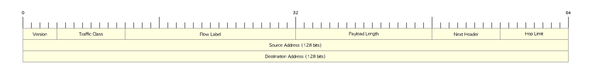

Dedication
To Cyril "Matiere" Kalenga
Part I : Layer 2 Technologies
1. Switch administration
1.1. Interface Characteristics
1.2. System clock
-
Can be set manually or dynamic with NTP
-
Keeps track internally based on UTC
(config)# clock timezone <zone> <hours-offset> [minutes-offset]
| Use the minutes-offset variable when the local time zone is a percentage of an hour different from UTC. For example, the time zone for some sections of Atlantic Canada (AST) is UTC-3.5, where the 3 means 3 hours and.5 means 50 percent. In this case, the necessary command is clock timezone AST -3 30. |
(config)# no clock timezone
clock set hh:mm:ss month day year
# sh clock [detail]
(config)# clock summer-time <zone> recurring [week day month hh : mm : week day month hh : mm [offset]] Example(config)# clock summer-time PDT recurring 1 Sunday April 2:00 last Sunday Octorber 2:00
1.3. System Name and Prompt
(config)# hostname <name>
1.4. MOTD login Banner
-
MOTD and login not configured by default
(config)# banner motd <delimiting-character> <message> <delimiting-character>
1.5. Login Banner
-
displayed on all connected terminals
-
appears after the MOTD banner and before the login prompt
(config)# banner login <delimiting-character> <message> <delimiting-character>
1.6. MAC address table
-
lists the destination MAC address with the associated VLANs , port number, and the type (static or dynamic)
-
dynamic address are discarded after the aging time (300 seconds by default)
# sh mac address-table address <MAC>
# sh mac address-table dynamic
# sh mac address-table count
# sh mac address-table vlan
# sh mac address-table interface
1.6.1. Aging time
-
Default: 300 seconds
# mac address-table aging-time [0 | 10-1000000] [vlan <1-4094>]
# sh mac address-table aging-time [<vlan_id>]
# clear mac address-table dynamic [<mac-address>]
1.6.2. MAC Address change Notification Traps
-
send SNMP trap when the switch learns or removes dynamic and secure MAC addresses.
-
do not send trap for self addesses, multicast addresses or static addresses
-
can set a trap-interval time to bundle the notification traps to reduce network traffic
(config)# snmp-server host <host-addr> { traps | informs} { version { 1 | 2c | 3 } } <community-string> mac-notification
(config)# snmp-server enable traps mac-notification change
(config)# mac address-table notification change [ interval <seconds> ] [ history-size <i0-1-500> ]
(config)# interface <interface-id>
(config-if)# snmp trap mac-notification change {added | removed }
# sh mac address-table notification change [interface]
1.6.3. MAC address move Notification traps
-
send a SNMP notification whenever a MAC address moves from one port to another within the same VLAN
(config)# snmp-server host <host-addr> { traps | informs} { version { 1 | 2c | 3 } } <community-string> mac-notification
(config)# snmp-server enable traps mac-notification move
(config)# mac address-table notification mac-move
# sh mac address-table notification mac-move
1.6.4. MAC Treshold notification traps
-
Send an SNMP notification when a MAC Address table treshold limit is reached or exceeded.
(config)# snmp-server host <host-addr> { traps | informs} { version { 1 | 2c | 3 } } <community-string> mac-notification
(config)# snmp-server enable traps mac-notification treshold
(config)# mac address-table notification treshold ! to enable the feature
(config)# mac address-table notification treshold [limit <percentage] | [ interval <seconds> ]
# sh mac address-table notification treshold
1.6.5. Static addresses
-
manually entered in the address table and must be manually removed
-
can be unicast or mcast
-
doesn’t age and is retained when the switch restarts
-
must be associated with a VLAN and a interface
-
A packet with a static address that arrives on a VLAN where it has not been statically entered is flooded to all ports and not learned
-
if the VLAN is in a private-primary or private-secondary, configure the same static address in all associated VLANs.
-
(config)# mac address-table static <MAC> vlan <vlan-id> interface <interface-id>
# sh mac address-table static
1.6.6. Unicast MAC address filtering
-
Drops packets with specific source or destination MAC addressess
-
disabled by default
-
mcast, bcast and router MAC addresses are not supported
(config)# mac address-table static <MAC> vlan <vlan-id> drop
1.6.7. MAC Address learning on a VLAN
-
enabled by default on al VLANs
-
can be disabled with the following restrictions:
|
(config)# no mac address-table learning vlan <vlan-id>
sh mac address-table learning [vlan <vlan-id>]
(config)# default mac address-table learning vlan <vlan-id>
1.7. errdisable recovery
1.8. L2 MTU
2. Ethernet
-
IEEE 802.3 standards
-
CSMA/CD protocol
-
Medium: coaxial, twisted-pair, optical fiber
-
Data rates: 10/100/1000/10000 Mbps
2.1. Frame Formats


- Preamble DIX or Preamble and Start of Frame Delimiter(802.3)
-
-
62 alternating 1s and 0s, and ends with a pair of 1s.
-
For clocking synchronization of the transmitted signal.
-
- Type
-
-
Type of protocol
-
- Length
-
-
Length in bytes of the data following the Length field, up to the Ethernet trailer.
-
- DA
-
-
Destination address can be an individual or group address
-
- SA
-
-
Source address is always unicast address
-
- DSAP
-
-
Destination Service Access Protocol
-
The size limitations, along with other Point (802.2) uses of the low-order bits, required the later addition of SNAP headers.
-
- SSAP
-
-
Source Service Access Protocol
-
Describes the upper-layer protocol Point (802.2) that created the frame.
-
- Control
-
-
Enables both connectionless and connection-oriented operation.
-
Generally used only for connectionless operation by modern protocols, with a 1-byte value of 0x03.
-
- SNAP OUI
-
-
Generally unused today,
-
Providing a place for the sender of the frame to code the OUI representing the manufacturer of the Ethernet NIC.
-
- SNAP Type
-
-
Using same values as the DIX Type field, overcoming deficiencies with size and use of the DSAP field.
-
- Data
-
-
N bytes where 46 ⇐ n ⇐ 1500
-
If n < 46, use padding
-
- FCS (Frame check sequence)
-
-
Contains a 32-bit cyclic redundancy check (CRC) value
-
Calculated by the sending MAC
-
Re-calculated by the receiving MAC to check for damaged frames.
-
Generated from the DA, SA, Length/Type, and Data fields
-
2.2. Ethernet MAC Addresses
-
48 bits in hexadecimal
-
Canonical transmission (little endian)= MSO to LSO with LSB to MSB for each octet where
-
I/G bit: (0/1) Individual or Group address, first bit to be transmitted as LSB of MSO
-
U/L bit: (0/1) Universally or Locally administrated, second bit to be transmitted
-
Example: AC-10-7B-3A-92-3C Convert to Hexa : 10101100 00010000 01101011 00111010 01010010 00111100 Transmission : 00110101 00001000 11010110 01011100 01001010 00111100
(config-if)# mac-address AC-10-BE-EF-DE-AD
| Even if you change the MAC address of the swithch port, STP will continue to use the BIA. |
2.2.1. Types of MAC addresses
-
Unicast : I/G bit = 0
-
Multicast: I/G bit = 1
-
Broadcast: all devices in the segment
2.3. RJ-45 pinouts and Cat5 wiring

| Type of cable | Pinouts | Key pins connected |
|---|---|---|
Straight-through |
T568A or T568B both ends |
1-1; 2-2; 3-3; 6-6 |
Cross-over |
T568A on one end, T568B on the other |
1-3; 2-6; 3-1; 6-2 |
-
Auto-MDIX (automatic medium-dependent interface crossover)
-
Detects the wrong cable and causes the switch to swap the pair it uses for transmitting and receiving
-
Not supported on all Cisco switch models
-
2.4. Auto-negotiation, Speed and Duplex
-
By default, Ethernet auto-negotiation uses FLP (Fast Link Pulses)to determine the speed and duplex setting.
-
To disable auto-negotiation, manually configure the speed and the duplex settings.
-
if auto-negotation is disabled on one end by statically setting the speed , the other end
-
detects the speed based on the incoming electrical signal
-
sets duplex to half for 10 and 100 Mbps and full duplex for 1Gps interfaces
-
-
if auto-negotation is disabled on both end and different speeds statically configured, link down
(config-if)# speed {10 | 100 | 1000 | auto | nonegotiate}
(config-if)# duplex {auto | full | half}
Router# show controllers fastethernet1 ! Interface FastEthernet1 MARVELL 88E6052 Link is DOWN Port is undergoing Negotiation or Link down Speed :Not set, Duplex :Not set ! Switch PHY Registers: ~~~~~~~~~~~~~~~~~~~~~ 00 : 3100 01 : 7849 02 : 0141 03 : 0C1F 04 : 01E1 05 : 0000 06 : 0004 07 : 2001 08 : 0000 16 : 0130 17 : 0002 18 : 0000 19 : 0040 20 : 0000 21 : 0000 ! Switch Port Registers: ~~~~~~~~~~~~~~~~~~~~~~ Port Status Register [00] : 0800 Switch Identifier Register [03] : 0520 Port Control Register [04] : 007F Rx Counter Register [16] : 000A Tx Counter Register [17] : 0008
2.5. Switch internal processing
Switches forward frames when necessary, and do not forward when there is no need to do so, thus reducing overhead.
To accomplish this, switches perform three actions:
-
Learn MAC addresses by examining the source MAC address of each received frame
-
Decide when to forward a frame or when to filter (not forward) a frame, based on the destination MAC address
-
Create a loop-free environment with other bridges by using the Spanning Tree Protocol
| Store-and-forward |
The switch fully receives all bits in the frame (store) before forwarding the frame (forward). This allows the switch to check the FCS before forwarding the frame, thus ensuring that errored frames are not forwarded. |
| Cut-through |
The switch performs the address table lookup as soon as the Destination Address field in the header is received. The first bits in the frame can be sent out the outbound port before the final bits in the incoming frame are received. This does not allow the switch to discard frames that fail the FCS check, but the forwarding action is faster, resulting in lower latency. |
| Fragment-free |
This performs like cut-through switching, but the switch waits for 64 bytes to be received before forwarding the first bytes of the outgoing frame. According to Ethernet specifications, collisions should be detected during the first 64 bytes of the frame, so frames that are in error because of a collision will not be forwarded. |
2.6. Switching and bridging logic
| Type of Address | Switch Action |
|---|---|
Known unicast |
Forwards frame out the single interface associated with the destination address |
Unknown unicast |
Floods frame out all interfaces, except the interface on which the frame was received |
Broadcast |
Floods frame identically to unknown unicasts |
Multicast |
Floods frame identically to unknown unicasts, unless multicast optimizations are configured |
2.7. Standards
802.1Q |
dot1q trunking |
802.1d |
STP |
802.1s |
MST |
802.1w |
Rapid STP |
802.1ax |
LACP (formerly 802.3ad) |
802.2 |
Logical Link Control |
802.3u |
Fast ethernet over copper and optical cable |
802.3z |
Gigabit ethernet over optical cable |
802.3ab |
Gigabit ethernet over copper cable |
2.8. Troubleshooting
-
Add something about excessive collisions, late collisions, runts, re: duplex mismatches
3. CDP, LLDP and UDLD
3.1. CDP
3.1.1. Overview
-
Layer 2 discovery protocol running on Cisco devices
-
Retrieves device type and SNMP agent address of neighboring devices
Packet format
-
Header followed by a set of TLV value
3.1.2. CDP operations
-
Enable by default
# show cdp
Capability Codes: R - Router, T - Trans Bridge, B - Source Route Bridge
S - Switch, H - Host, I - IGMP, r - Repeater
Device ID Local Intrfce Holdtme Capability Platform Port ID
Router3 Ser 1 120 R 2500 Ser 0
Router1 Eth 1 180 R 2500 Eth 0
Switch1 Eth 0 240 S 1900 2
show cdp entry <entry-name> [protocol | version]
(config)# no cdp run
(config-if)# cdp enable
CDP updates
(config)# cdp timer <seconds>
| Default: 60 seconds range: 5-254 seconds |
(config)# cdp holdtime <seconds>
| default: 180 seconds, range: 10 to 255 seconds |
Version
(config)# cdp advertise-v2
3.1.3. Monitoring and maintenance
clear cdp counters
Neighbors
clear cdp table
sh cdp interface [<interface-id>]
sh cdp neighbors [<interface-id>] [detail]
# show cdp traffic Total packets output: 543, Input: 333 Hdr syntax: 0, Chksum error: 0, Encaps failed: 0 No memory: 0, Invalid: 0, Fragmented: 0 CDP version 1 advertisements output: 191, Input: 187 CDP version 2 advertisements output: 352, Input: 146
3.2. LLDP
3.2.1. Overview
-
IEEE 802.1AB link layer discovery protocol
-
neighbor discovery protocol
-
advertises TLV(type, length, value) for each attribute
-
basic mandatory
-
port description
-
system name
-
system description
-
system capabilities
-
management address
-
-
optional
-
port vlan ID for ieee 802.1
-
MAC/PHY configuration/status for ieee 802.3
-
-
3.2.2. LLDP global state
-
Disabled by default
(config)# lldp run
show lldp
show lldp traffic
clear lldp counters
clear lldp table
clear nmsp statistics
3.2.3. LLDP interfaces
-
Disabled by default
(config-if)# lldp transmit
(config-if)# lldp receive
show lldp interface [<interface-id>]
3.2.4. Neighbors
show lldp entry <entry-name>
show lldp entry *
show lldp neighbors [<interface-id>] [detail]
3.2.5. Timers
-
default: 120 s, range: 0 - 65535
(config)# lldp holdtime <seconds>
The range is 2 to 5 seconds; the default is 2 seconds.
(config)# lldp reinit delay
The range is 5 to 65534 seconds; the default is 30 seconds.
(config)# lldp timer rate
3.2.6. TLV
(config)# lldp tlv-select
(config)# lldp med-tlv-select
(config-if)# lldp med-tlv-select {inventory-management | location | network-policy | power-management }
(config)# network-policy profile <profile-number>
(config)# {voice | voice-signaling} vlan [<id> {cos <cvalue> | dscp <dvalue>}]
| [[dot1p {cos <cvalue> | dscp <dvalue>}] | none | untagged]
(config-if)# network-policy <profile-number>
(config-if)# lldp med-tlv select network-policy
|
show location
3.2.7. Network-policy profiles
show network-policy profile
show nmsp
3.2.8. LLDP-MED
-
LLDP for Media Endpoint Devices
-
operates between endpoint devices (ip phones) and network devices (switches)
-
supports VoIP applications
-
TLVs enabled by default:
-
LLDP-MED capabilities TLV
-
network policy TLV
-
Power management TLV
-
Inventory management TLV
-
Location TLV
-
3.2.9. Wired location service
-
The switch uses the wired location service feature to send location and attachment tracking information for its connected devices to a Cisco Mobility Services Engine (MSE). The tracked device can be a wireless endpoint, a wired endpoint, or a wired switch or controller. The switch notifies the MSE of device link up and link down events through the Network Mobility Services Protocol (NMSP) location and attachment notifications.
The MSE starts the NMSP connection to the switch, which opens a server port. When the MSE connects to the switch there are a set of message exchanges to establish version compatibility and service exchange information followed by location information synchronization. After connection, the switch periodically sends location and attachment notifications to the MSE. Any link up or link down events detected during an interval are aggregated and sent at the end of the interval.
When the switch determines the presence or absence of a device on a link-up or link-down event, it obtains the client-specific information such as the MAC address, IP address, and username. If the client is LLDP-MED- or CDP-capable, the switch obtains the serial number and UDI through the LLDP-MED location TLV or CDP.
Depending on the device capabilities, the switch obtains this client information at link up:
-
Slot and port specified in port connection
-
MAC address specified in the client MAC address
-
IP address specified in port connection
-
802.1X username if applicable
-
Device category is specified as a wired station
-
State is specified as new
-
Serial number, UDI
-
Model number
-
Time in seconds since the switch detected the association
Depending on the device capabilities, the switch obtains this client information at link down:
-
Slot and port that was disconnected
-
MAC address
-
IP address
-
802.1X username if applicable
-
Device category is specified as a wired station
-
State is specified as delete
-
Serial number, UDI
-
Time in seconds since the switch detected the disassociation
When the switch shuts down, it sends an attachment notification with the state delete and the IP address before closing the NMSP connection to the MSE. The MSE interprets this notification as disassociation for all the wired clients associated with the switch.
If you change a location address on the switch, the switch sends an NMSP location notification message that identifies the affected ports and the changed address information.
3.3. UDLD
3.3.1. Overview
-
Problem: unidirectional links
-
one of the 2 transmission paths has failed but not both
-
due to miscabling, cutting on fiber cable, unplugging one fiber, GBIC problems, …
-
can cause a loop as the previously blocking port will move to a forwarding state
-

-
solutions:
- UDLD unidirectional link detection
-
Uses Layer 2 messaging to decide when a switch can no longer receive frames from a neighbor. The switch whose transmit interface did not fail is placed into an err-disabled state.
- UDLD aggressive mode
-
Attempts to reconnect with the other switch (eight times) after realizing no messages have been received. If the other switch does not reply to the repeated additional messages, both sides become err-disabled.
Modes of operations
Normal
-
default
-
detects unidirectional links due to misconnected ports on fiber-optic connection
Aggresive mode
3.3.2. Tasks
Default configuration
Feature |
Default Setting |
UDLD global enable state |
Globally disabled |
UDLD per-port enable state for fiber-optic media |
Disabled on all Ethernet fiber-optic ports |
UDLD per-port enable state for UTP copper media |
Disabled on all Ethernet 10/100/1000BASE-TX ports |
UDLD aggressive mode |
Disabled |
(config)# udld {aggressive | enable | message time <seconds>}
- message time <seconds>
-
-
configure the period of time between UDLD probe messages on ports that are in the advertisement phase and are detected to be bidirectional.
-
range: 1 to 90 seconds
-
default: 15 seconds
-
This command affects fiber-optic ports only. Use (config-if)# udld to enable UDLD on other port types.
-
udld reset
You can also restart the disabled port
-
shutdown followed by no shutdown
-
no udld {aggressive | enable} followed by udld {aggressive | enable}
-
no udld port followed by udld port [aggressive]
3.3.3. UDLD error-disabled state
! Enable UDLD to automatically recover (config)# errdisable recovery cause udld ! Specify the time to recover from the UDLD error-disabled state (config-if)# errdisable recovery interval <seconds>
show udld [interface-id]
4. VLANs and Trunking
4.1. Normal and Extended VLANs
-
administratively defined subset of switch ports that are in the same broadcast domain
-
best practice: one VLAN, one IP subnet
-
traffic inside same VLAN is layer 2 switched
-
traffic between VLANs is layer 3 routed
-
can span multiple physical switches over "trunks"
4.1.1. VLAN numbering
-
VLAN ID = 12 bits
- Reserved [0, 4095]
-
-
not available for use
-
- Normal-range [1-1005]
-
-
advertised and pruned by VTP v1 and v2 except vlan 1, 1002-1005
-
configured in both vlan database mode and configuration mode
-
stored in VLAN.DAT file in Flash
-
Special vlans:
-
Vlan 1 is the default Ethernet VLAN for all access ports; cannot be deleted or changed.
-
Vlan 1002-1004 : default for FDDI
-
Vlan 1002-1005 : default for Token Ring translational bridge.
-
-
- Extended-range [1006-4094]
-
-
cannot be advertised or pruned by VTP v1 and v2
-
configured only in VTP transparent mode
-
stored only in the running configuration
-
4.1.2. VLAN Trunks
-
trunk: point-to-point links for multiple VLANs between devices
-
trunking add ISL or 802.1q headers to include VLAN id.
-
ISL : Cisco proprietary, 30-bytes (26-byte header + 4-byte trailer), does not modify original frame
-
802.1q: IEEE standard, 4-byte tag except for native VLAN, modifies original frame
-
4.1.3. Basic configuration
Configuring VLANs requires few steps:
-
Create the VLAN itself
-
Associate the correct ports with VLAN
VLAN creation can be done either in VLAN database mode configuration (after vlan database ) or normal configuration mode
VLAN Database |
Configuration |
vtp {domain domain-name | password password | pruning | v2-mode | {server | client | transparent}} |
vtp {domain domain-name | file filename | interface name | mode {client | server | transparent} | password password | pruning | version number} |
vlan vlan-id [backupcrf {enable | disable}] [mtu mtu-size] [name vlan-name] [parent parent-vlan-id] [state {suspend | active}] |
vlan vlan-id 1 |
show {current | proposed | difference} |
No equivalent |
apply | abort | reset |
No equivalent |
4.1.4. Troubleshoot
Check "Creating ethernet vlans on catalyst switches: troubleshoot tips"
-
SVI will be in "up/down" state after being deleted
-
SVI will be in "up/up" if
-
the VLAN associated with the SVI exists in the VLAN database
-
at least one trunk or access port in the "up/up" state has been assigned to the VLAN
-
those ports in the "up/up" state are not blocked by STP
-
4.2. Voice VLANs
4.3. Private VLANs
-
separate ports as if they are on different VLAN while consuming only one subset.
-
typically use by service provider in a multi-tenant offerings: one router, one switch, multiple customers
-
pVLAN = one primary VLAN ( promiscuous ports) + multiple secondary VLANs ( community and isolated ports)
4.4. VTP
4.4.1. Overview
-
VTP vlan trunk protocol
-
Cisco-proprietary that distributes VLAN information among Catalyst switches
-
Advertises the VLAN Id, Name and Type but not which ports should be in each VLAN
-
Eases administrative burden for addition, deletion and renaming of VLANs
-
Supports 1005 VLANs (IP base or IP services feature set) or 255 VLANs (LAN base feature set)
4.4.2. VTP message format
-
Encapsulated in ISL or 802.1q frames
-
Multicasted to MAC address: 0100-0CCC-CCCC, LLC code: SNAP (AAAA), Type 2003 in the SNAP Header
-
Carried through trunk ports and VLAN 1

-
The VTP header contains these fields:
-
VTP protocol version: 1,2,3
-
VTP message types: summary advertisements, subset advertisements, advertisement requests, VTP join messages
-
management domain length
-
management domain name
-
Summary advertisements
-
Informs adjacent Catalysts of the current VTP domain name and the configuration revision number.
-
5 minutes intervals
-
When the switch receives a summary advertisement packet,
-
the switch compares the VTP domain name to its own VTP domain name.
-
If the name is different, the switch simply ignores the packet.
-
If the name is the same, the switch then compares the configuration revision to its own revision.
-
If its own configuration revision is higher or equal, the packet is ignored.
-
If it is lower, an advertisement request is sent.
-

| Field | Description |
|---|---|
Followers |
Indicates that this packet is followed by a Subset Advertisement packet. |
Updater Identity |
IP address of the switch that is the last to have incremented the configuration revision. |
Update Timestamp |
Date and time of the last increment of the configuration revision. |
MD5 Digest |
If MD5 is configured and used to authenticate the validation of a VTP update. |
Subset advertisements
-
Follows the summary advertisement after addition, deletion or modification of a VLAN.
-
Contains a list of VLAN information.

- Code
-
value: 0x02 for subset advertisement.
- Sequence number
-
-
Identify the packet in the stream of packets that follow a summary advertisement
-
Starts with value 1
-
Advertisement request
A switch needs a VTP advertisement request in these situations:
-
The switch has been reset.
-
The VTP domain name has been changed.
-
The switch has received a VTP summary advertisement with a higher configuration revision than its own.
Upon receipt of an advertisement request, a VTP device sends a summary advertisement. One or more subset advertisements follow the summary advertisement. This is an example:
- Start-Value
-
This is used in cases in which there are several subset advertisements. If the first (n) subset advertisement has been received and the subsequent one (n+1) has not been received, the Catalyst only requests advertisements from the (n+1)th one.
4.4.3. VTP domains
-
Controls which devices can exchange VTP advertisements
-
Defaults to null value
-
Switch inherits VTP domain name of first received advertisement over trunk links
-
A switch can only be part of one domain at a time
(config)# vtp domain <name>
4.4.4. Configuration revision number
-
32-bit
-
Incremented by one for each configuration change
-
Higher revision indicates newer database
4.4.5. Allowed, active and pruned VLANs
Although a trunk can support VLANs 14094, several mechanisms reduce the actual number of VLANs whose traffic flows over the trunk. First, VLANs can be administratively forbidden from existing over the trunk using the switchport trunk allowed interface subcommand. Also, any allowed VLANs must be configured on the switch before they are considered active on the trunk. Finally, VTP can prune VLANs from the trunk, with the switch simply ceasing to forward frames from that VLAN over the trunk.
The show interface trunk command lists the VLANs that fall into each category:
- Allowed VLANs
-
Each trunk allows all VLANs by default. However, VLANs can be removed or added to the list of allowed VLANs by using the switchport trunk allowed command.
- Allowed and active
-
To be active, a VLAN must be in the allowed list for the trunk (based on trunk configuration), and the VLAN must exist in the VLAN configuration on the switch. With PVST+, an STP instance is actively running on this trunk for the VLANs in this list.
- Active and not pruned
-
This list is a subset of the allowed and active list, with any VTP-pruned VLANs removed.
4.4.6. VTP modes
You can configure a switch to operate in any one of these VTP modes:
- Server
-
-
Default mode
-
Allows addition, deletion and modification of VLAN information
-
Changes on server overwrite the rest of the domain
-
Configuration saved in NVRAM
-
vtp mode server
- Client
-
-
Cannot add, remove or modify VLAN information
-
Listens for advertisements originated by server, install them and passes them on
-
Configuration saved in NVRAM only for VTPv3
-
vtp mode client
- Transparent
-
-
Keeps a separate VTP database from the rest of the domain
-
Does not originate advertisements
-
"transparently" passes received advertisements through without installing them
-
Can still create, remove or renamed VLANs which are not advertised to neighboring switches.
-
Need for some applications like Private VLANs
-
vtp mode transparent
- Off (configurable only in CatOS switches)
-
-
Like VTP transparent mode with the exception that VTP advertisements are not forwarded
-
Function |
Server Mode |
Client Mode |
Transparent Mode |
Originates VTP advertisements |
Yes |
Yes |
No |
Processes received advertisements to update its VLAN configuration |
Yes |
Yes |
No |
Forwards received VTP advertisements |
Yes |
Yes |
Yes |
Saves VLAN configuration in NVRAM or vlan.dat |
Yes |
Yes |
Yes |
Can create, modify, or delete VLANs using configuration commands |
Yes |
No |
Yes |
4.4.7. VTP security
-
MD5 authentication prevents against certain attack
-
does not prevent against misconfiguration
-
password must be setup manually because switches only exchanges MD5 digest of the password.
-
(config)# vtp password <string>
(config)# sh vtp password
4.4.8. VTP pruning
-
Problem:
-
Broadcasts and unknown unicast/multicast frame are flooded everywhere in the broadcast domain included through trunks links
-
Manual editing allowed list is a huge administrative overhead
-

-
Solution: VTP pruning
-
Switches advertise what they need
-
-
All other VLANs are pruned off the trunk link

-
Restriction:
-
Pruning does not work in transparent mode. Why?
-
Pruning eligibility
-
When VTP pruning is enabled on a VTP server, pruning is enabled for the entire management domain except for pruning-ineligible VLANS ( Vlan 1, 1002-1005, 1006-4094)
-
Making VLANs pruning-eligible or pruning-ineligible affects pruning eligibility for those VLANs on that trunk only (not on all switches in the VTP domain).
-
VTP pruning takes effect several seconds after you enable it.
4.4.9. Version
TODO: Add task for this section
-
Default: version 1
Version 2
-
Version 3
-
Supports the whole IEEE 802.1q vlan range up to 4095 ( v1 and v2 support only normal range VLANs 1-1005)
-
Can send private LAN information in addition to normal VLAN information.
-
Backward compatible with VTP 2
-
Add support for databases other than VLAN databases such as MST databases.
-
Clear text or hidden password protection
For more information, read VTP version 3
# show vtp status VTP Version: 3 (capable) Configuration Revision: 1 Maximum VLANs supported locally: 1005 Number of existing VLANs: 37 VTP Operating Mode: Server VTP Domain Name: [smartports] VTP Pruning Mode: Disabled VTP V2 Mode: Enabled VTP Traps Generation: Disabled MD5 digest : 0x26 0xEE 0x0D 0x84 0x73 0x0E 0x1B 0x69 Configuration last modified by 172.20.52.19 at 7-25-08 14:33:43 Local updater ID is 172.20.52.19 on interface Gi5/2 (first layer3 interface fou) VTP version running: 2
4.4.10. Troubleshooting
4.5. DTP
4.5.1. Dynamic trunk protocol
-
negotiate trunk status
-
default to dynamic auto
| Configuration Command | Short name | Meaning | To trunk other side must be |
|---|---|---|---|
switchport mode trunk |
Trunk |
Always trunks on this end; sends DTP to help other side choose to trunk |
On, desirable, auto |
switchport mode trunk ; switchport nonegotiate |
Nonegotiate |
Always trunks on this end; does not send DTP messages (good when other switch is a non-Cisco switch) |
On |
switchport mode dynamic desirable |
Desirable |
Sends DTP messages, and trunks if negotiation succeeds |
On, desirable, auto |
switchport mode dynamic auto |
Auto |
Replies to DTP messages, and trunks if negotiation succeeds |
On, desirable |
switchport mode access |
Access |
Never trunks; sends DTP to help other side reach same conclusion |
Never trunks |
switchport mode access; switchport nonegotiate |
Access (with nonegotiate) |
Never trunks; does not send DTP messages |
(Never trunks) |
(config-if)# switchport mode dynamic desirable
(config-if)# switchport mode trunk (config-if)# switchport nonegotiate
(config-if)# switchport mode access
show interface trunk: Summary of trunk-related information
show interface <type number> trunk
show interface <type number> switchport
# show dtp
# show dtp interface <type slot/number>
! SW1 conf t int e0/0 switchport trunk enc dot1q switchport mode trunk switchport nonegotiate ! R1 conf t int e0/0.1 enc dot1q 123
4.5.2. Verify
What is TOS/TAT in
sh dtp interface fa 0/19
4.6. ISL
4.6.1. Overview
-
Inter-Switch Link
-
Cisco proprietary
-
Provides VLAN trunking
-
Supports up to 1000 VLANs (check ???)
-
Encapsulates the original header with 26-byte header
-
Removes the header at the receiving end
4.6.2. Frame
The ISL frame consists of three fields: the ISL header( 26 bytes), the original frame and the FCS (4 bytes)

Field descriptions
- DADestination Address
-
-
40-bit
-
Multicast address: "0100-0C00-00" or "0300-0C00-00".
-
The first 40 bits of the DA field signal the receiver that the packet is in ISL format. ???
-
- TYPEFrame Type
-
-
4 bits
-
Indicates the type of the original frame
-
0000: Ethernet
-
0001: Token Ring
-
0010: FDDI
-
0011: ATM
-
-
- USERUser Defined Bits (TYPE Extension)
-
-
4 bits
-
Extends the meaning of the TYPE field
-
Default value: "0000"
-
For Ethernet frames, the USER field bits "0" and "1" indicate the priority of the packet as it passes through the switch. Whenever traffic can be handled in a manner that allows it to be forwarded more quickly, the packets with this bit set should take advantage of the quick path. It is not required that such paths be provided.
-
XX00 Normal Priority
-
XX01 Priority 1
-
XX10 Priority 2
-
XX11 Highest Priority
-
-
- SASource Address
-
-
48 bits set to set MAC address of the switch port that transmits the frame.
-
May be ignored by the receiving device
-
- LENLength
-
-
16 bits set to the length of the packet in bytes with the exclusion of the DA, TYPE, USER, SA, LEN, and FCS fields.
-
- AAAA03 (SNAP)Subnetwork Access Protocol (SNAP) and Logical Link Control (LLC)
-
-
24 bits set to "0xAAAA03".
-
- HSAHigh Bits of Source Address
-
-
24 bits set to 0x00-00-0C (Cisco OUI) of the SA field.
-
- VLANDestination Virtual LAN ID
-
-
15 bits set to the VLAN ID of the frame
-
- BPDUBPDU and CDP Indicator
-
-
1 bit set when STP or CDP encapsulates an ISL packet
-
- INDXIndex
-
-
16 bits set to the port index of the source of the packet as it exits the switch
-
Used for diagnostic purposes only
-
May be ignored by the receiving bridge
-
- RESReserved for Token Ring and FDDI
-
-
16 bits used when Token Ring or FDDI packets are encapsulated with an ISL frame
-
In the case of Token Ring frames, the Access Control (AC) and Frame Control (FC) fields are placed here.
-
In the case of FDDI, the FC field is placed in the Least Significant Byte (LSB) of this field.
-
-
For Ethernet packets, the RES field should be set to all zeros.
-
- ENCAP FRAMEEncapsulated Frame
-
-
Encapsulated data packet with its own CRC value completely unmodified
-
Length from 1 to 24575 bytes
-
- FCSFrame Check Sequence
-
-
4 bytes set by the sending MAC and recalculated by the receiving bridge
-
New FCS calculated over the entire ISL packet
-
4.7. IEEE 802.1Q
4.7.1. Definition
-
Tags frames on a trunk
-
Inserts a 4-byte tag into the original frame between the Source Address and the Type/Length field
-
Recomputes the frame check sequence (FCS) before the device sends the frame over the trunk link.
-
Removes the tag at the receiving end
-
-
Does not tag frames on the native VLAN.
-
Must use the same native VLAN on both sides of the trunk
-
Default to VLAN 1
-
-
Supports up to 4096 VLANs
-
Defines a single instance of spanning tree that runs on the native VLAN for all the VLANs in the network.
-
lacks the flexibility and load balancing capability of PVST that is available with ISL.
-
PVST+ offers the capability to retain multiple spanning tree topologies with 802.1Q trunking.
-
4.7.2. Frame Format

Field descriptions
- TPIDTag Protocol Identifier
-
-
16 bits
-
Value: 08100
-
- Priority
-
-
3 bits
-
Called also user priority or IEEE 802.p
-
Indicates the frame priority level
-
Can be used to prioritize the traffic
-
- CFICanonical Format Indicator
-
-
1 bit
-
Value: 0 if MAC address is in canonical format otherwise 1
-
- VIDVLAN Identifier
-
-
12 bits
-
Identifies the VLAN to which the frame belongs
-
Ethernet Frame Size with 802.1Q tagging
-
Maximum size: 1522 bytes
-
Minimum size: 68 bytes
4.7.3. Native VLAN
(config-if)# switchport trunk native vlan <id>
5. Spanning tree
5.1. STP
-
Creates loop-free layer 2 topology
-
prevents broadcast storms
-
STP variations:
-
802.1d : Common Spanning Tree
-
PVST/PVST+: Cisco per-VLAN Spanning Tree
-
802.1w: Rapid Spanning Tree Protocol
-
802.1s: Multiple STP
-
5.1.1. 802.1d
-
Uses bpdu
-
Elect one root switch and one designated switch for each segment
-
One root port per non-root switch, one designated port for each segment
-
Other ports on blocking state
-
Steps
-
elect the root switch with the lowest bridge id ( 2-byte priority + 6-byte MAC)
-
determine each switch’s root port: with the least cost path to the root
-
determine the designated port for each segment: the switch that forwards the least cost hello on the segment
-
if there is a tie, select the lowest port ID
-
-
Original ieee 802.1d bridge Id
-
2-byte priority
-
6-byte MAC adress
-
-
Revised ieee 802.1d brigde id Priority for MAC address reduction
-
4 bits : priority multiple of 4096
-
12 bits : system id extension (vlan id ) to support pvst+ and ieee 802.1s
-
Root port election
-
RP is upstream facing towards Root bridge
-
lowest root path cost ( cumulative cost of all links to get to the root)
-
cost based on inverse bandwith
| Speed | original | revised |
|---|---|---|
10 Mbps |
100 |
100 |
100 Mbps |
10 |
19 |
1 Gbps |
1 |
4 |
10 Gbps |
1 |
2 |
Tie breaker when a switch receives multiple Hellos with equal cost
-
lowest bridge id
-
lowest port priority
-
lowest port number
# spanning-tree vlan <id> root
determining the designated port
-
Designated switch: send the hello with the lowest advertised cost for the segment
-
DP: port that forward frames onto that segment
-
DP are downstream facing away from root bridge
-
elected based on lowest root path cost, BID, port ID
blocking all non-RP and non-DP ports
-
Receive BPDUs
-
discard all other traffic
-
cannot send traffic
-
do not send Hellos
Convergence
-
Steady operations: one Root bridge, one RP on each non-root bridge, one DP on each segment, blocking state
-
root switch generates a Hello every 2 seconds
-
each RP on non root switch receives a copy of the root’s hello
-
each DP updates and forwards the hello out
-
each blocking port receives a copy of the hello from the DP without forwarding it
-
Topology change notification
more at understand new topology changes
-
A switch experiencing the STP port state change sends a TCN BPDU out its Root Port; it repeats this message every Hello time until it is acknowledged.
-
The next switch receiving that TCN BPDU sends back an acknowledgment via its next forwarded Hello BPDU by marking the Topology Change Acknowledgment (TCA) bit in the Hello.
-
The switch that was the DP on the segment in the first two steps repeats the first two steps, sending a TCN BPDU out its Root Port, and awaiting acknowledgment from the DP on that segment.
By each successive switch repeating Steps 1 and 2, eventually the root receives a TCN BPDU. Once received, the root sets the TC flag on the next several Hellos, which are forwarded to all switches in the network, notifying them that a change has occurred. A switch receiving a Hello BPDU with the TC flag set uses the short (Forward Delay time) timer to time out entries in the CAM.
Transitioning from blocking to forwarding
state |
forward data frames |
learn source MAC |
stable? |
blocking |
no |
no |
yes |
listening |
no |
no |
no |
learning |
no |
yes |
no |
forwarding |
yes |
yes |
yes |
disabled |
no |
no |
stable |
Timers
- Hello timer
-
-
2 seconds
-
Interval at which the root sends Hellos
-
- - Forward delay
-
-
15 seconds
-
Time that switch leaves a port in listening state and learning state
-
also used sd the short CAM timeout timer
-
- - Maxage
-
-
20 seconds
-
Time without hearing a Hello before believing that the root has failed
-
PVST+
-
Per-VLAN STP : for better load balancing
-
one instance of legacy STP per VLAN
-
Cisco ISL support
-
-
PVST+
-
one instance of legacy STP per VLAN
-
Cisco ISL and 802.1q support
-
interoperability between CST and PVST
-
-
default mode on most Catalyst platforms
-
allows root bridge/port placement per VLAN
-
Non-cisco + 802.1q ⇒ one Common Spanning Tree over vlan 1
-
When mixing cisco and non cisco switches with 802.1q trunking,
-
send bpdu to multicast destination MAC of 0100.0CCC.CCCD
-
configuration
show spanning-tree root show spanning-tree vlan 1 root detail
optimizing, improving spanning tree
PortFast
-
Used on access ports connected to end users devices not other switches
-
Puts the port into forwarding state immediately
-
Prevent them to generate TCNs
-
Can generate loops if another switch is connected. so must be used with bpdu guard and root guard features
(cfg-if) spanning-tree portfast (cfg) spanning-tree portfast default
UplinkFast
-
Used on access layer switches that have multiple uplinks to distribution/core switches
-
Immediately replaces a lost RP with an alternate RP
-
Increases the root and all port priority so the switch does not become root or transit switch
-
Time-out the correct entries in their CAMs but doesnt use the TCN process. Instead, finds all the MAC addresses of local devices and sends one multicast frame with each local addresses as the source MAC causing all the other switches to update their CAMs. The access switch also clears out the rest of the entries in its own CAM.
(config)# spanning-tree uplinkfast [max-update-rate rate]
BackboneFast
-
Used in core switches to detect indirect link failures to the Root
-
Do not wait for Maxage to expire when another switch’s direct link fails
-
Send a Root Link Query out the port in which the missing Hello should arrive. The RLQ asks the neighboring switch if that neighboring switch is still receiving Hellos from the root. IF that neighbor had a direct link failure, it can tell the original switch via another RLQ that this path to the root is lost. Once known, the switch experiencing the indirect link failure can go ahead and converge without waiting for Axage to expire
-
All switches must have backbone fast configured
(config)# spanning-tree backbonefast
bpdu filter
-
Filter BPDUs in and out
bpdu guard
-
Puts a (portfast enabled ???) port into the errdisable state when a BPDU is received and shuts down the port
-
The port must be manually re-enabled or it can be recovered automatically through the errdiable timeout function.
-
A port configured with bpdu guard will not be put into the root-inconsistent state.
loop guard
-
Prevents non-designated ports from inadvertently forming layer 2 switching loops if the flow of bpdus is interrupted.
-
Puts the port into the loop-inconsistent state when the steady flow of BPDUs is interrupted
-
Only used on point-to-point links
-
Can be used with UDLD aggressive mode to get extra protection.
root guard
-
Prevent a port from becoming a root port when receiving a superior bpdu (e.g. inferior priority + mac)
-
it is enabled on ports other than the root port and on switches other than the root.
-
Puts the port in root-inconsistent state (no data flow) until it stops receiving superior BPDUs. No traffic is forwarded.
-
enforce the root bridge placement by ensuring the the port on which root guard is enabled is the designated port.
-
Enforce the root bridge placement
-
Ensures that the port on which root guard is enabled is the designated port.
UDLD
-
unidirectional links:
-
one of the 2 transmission path has failed but not both
-
due to miscabling, cutting on fiber cable, unplugging one fiber, GBIC problems, …
-
can cause a loop as the previously blocking port will move to a forwarding state
-
-
solutions:
- UDLD unidirectional link detection
-
Uses Layer 2 messaging to decide when a switch can no longer receive frames from a neighbor. The switch whose transmit interface did not fail is placed into an err-disabled state.
- UDLD aggressive mode
-
Attempts to reconnect with the other switch (eight times) after realizing no messages have been received. If the other switch does not reply to the repeated additional messages, both sides become err-disabled.
- Loop Guard
-
When normal BPDUs are no longer received, the port does not go through normal STP convergence, but rather falls into an STP loop-inconsistent state.
In all cases, the formerly blocking port that would now cause a loop is prevented from migrating to a forwarding state. With both types of UDLD, the switch can be configured to automatically transition out of err-disabled state. With Loop Guard, the switch automatically puts the port back into its former STP state when the original Hellos are received again.
5.1.2. 802.1w
-
Improves convergence by
-
waiting for only 3 missed Hellos on an RP before flushing the CAM instead of 10 with 802.1d
-
bypass listening state
-
includes natively Cisco PortFast, UplinkFast, BackboneFast
-
add backup DP when multiple ports connected to the same segment
-
-
backward compatible with 802.1d although
-
All bridges generate BPDUs every Hello interval
RSTP link types
-
Point-to-point: switch to switch
-
Shared : switch to hub
-
Edge: switch to single end-user device
RSTP port states
| administrative state | 802.1d | 802.1w |
|---|---|---|
disabled |
disabled |
discarding |
enabled |
blocking |
discarding |
enabled |
listening |
discarding |
enabled |
learning |
learning |
enabled |
forwarding |
forwarding |
RSTP role ports
- Root Port
-
-
Same role as 802.1d RP
-
- Designated Port
-
-
Same role as 802.1d DP
-
- Alternate Port
-
-
an alternate root port
-
same concept as Cisco UplinkFast feature
-
protects against the loss of a switch’s RP by keeping track of the AP with a path to the root
-
- Backup Port
-
-
no equivalent Cisco features
-
protects against losing the DP attached to a shared liknk when the switch has another physical port attached to the same shared segment
-
| root bridge ports are all designated port unless 2 or more ports of the root bridge are connected together. |
| a port needs to receive BPDUs to stay blocked. |
configuration
(config)# spanning-tree mode rapid-pvst
|
5.1.3. 802.1s
-
Multiple VLANs mapped to the same STP instance.
-
enable load balancing
-
improves fault tolerance of the network because a failure in one instance or forwarding path does not affect other instances.
-
Uses 802.1w for rapid convergence
-
Highly scalable
-
switches with same instance, configuration revision number and name form a region
-
different regions see each other as virtual bridges
-
-
each switch have three attributes:
-
alphanumeric configuration name (32 bytes)
-
configuration number (2 bytes)
-
4096-element table that associates each of the potential 4096 VLANs to a map ???
-
storm control
unicast flooding
5.1.4. Troubleshooting
flapping port that is generating BPDUs with the TCN bit set
5.1.5. Questions
5.2. MST
5.2.1. operations
cst → 1 stp for all vlan pvst → 1 stp for each vlan mst → 1 stp per instance
6. EtherChannel
6.1. EtherChannel
6.1.1. Overview
-
EtherChannel aggregates bandwidth of up to 8 physical links
-
Consists of two parts:
-
Port-channel interface: logical interface representing the bundle
-
Member interfaces: physical links part of the bundle
-
-
Channel can be any type of interface:
-
Layer 2 access, trunk, tunnel or layer 3 routed
-
-
Configured as either Layer 2 or Layer 3 interfaces.
-
To be part of a PortChannel, both sides must agree on:
-
Same speed and duplex settings
-
If not trunking, same access VLAN
-
If trunking, same trunk type, allowed VLANs, and native VLAN
-
On a single switch, each port in a PortChannel must have the same STP cost per VLAN on all links in the PortChannel
-
No ports with SPAN configured
-
-
When several EtherChannel bundles exist between two switches, STP blocks one of the bundles to prevent redundant links. When spanning tree blocks one of the redundant links, it blocks one EtherChannel, thus blocking all the ports belonging to this EtherChannel link.
-
Where there is only one EtherChannel link, all physical links in the EtherChannel are active because STP sees only one (logical) link.
-
If a link within an EtherChannel fails, traffic previously carried over that failed link changes to the remaining links within the EtherChannel. A trap is sent for a failure, identifying the switch, the EtherChannel, and the failed link. Inbound broadcast and multicast packets on one link in an EtherChannel are blocked from returning on any other link of the EtherChannel.
-
Each EtherChannel has a logical port-channel interface numbered from 1 to 64. The channel groups are also numbered from 1 to 64.
-
When a port joins an EtherChannel, the physical interface for that port is shut down.
-
When the port leaves the port-channel, its physical interface is brought up, and it has the same configuration as it had before joining the EtherChannel.
6.1.2. Link aggregation protocol
-
PAgP
-
Maximum 8 ports
-
-
LACP
-
Maximum 16 ports
-
Maximum 8 active ports and 8 standby ports
-
# show etherchannel protocol
(config-if)# channel-protocol {pagp | lacp}
|
6.1.3. Layer 2 EtherChannels
-
Logical interfaces are dynamically created when using channel-group command.
conf t
interface <type slot/number>
switchport mode {access | trunk}
channel-group n mode {active | passive | on | {auto [non-silent] | desirable [non-silent] }
6.1.4. Layer 3 EtherChannels
conf t interface port-channel <number> no switchport ip address <a.b.c.d> <mask>
conf t
interface <type id>
no switchport
no ip address
channel-group n mode {active | passive | on | {auto [non-silent] | desirable [non-silent] }
|

6.1.5. EtherChannel modes
| Cisco PAgP | 802.1AD LACP | Description |
|---|---|---|
on |
on |
disable negotiation and forces the port into the portChannel |
off |
off |
disable negotiation and prevents the ports to be part of the portChannel |
desirable |
active |
initiates the negotiation |
auto |
passive |
waits on other side to start negotiation |
# show etherchannel [group-number]
PAgP and LACP Interaction with Other Features
-
DTP and CDP send and receive packets over the physical interfaces in the EtherChannel.
-
PAgP and LACP transmit PDUs on the lowest numbered VLAN on the interfaces enable for (desirable,auto or active,passive)
-
STP sends packets over the first interface in the Etherchannel
-
The MAC address of a Layer 3 EtherChannel is the MAC address of the first interface in the port-channel.
Load balancing and forwarding modes
-
Load balancing between member interface based on a combination of
-
Source MAC address
-
Destination MAC address
-
Source IP address
-
Destination IP address
-
-
Uses only source MAC address by default
(config)# port-channel load-balance { dst-ip | dst-mac | src-dst-ip | src-dst-mac | src-ip | src-mac}
# show etherchannel load-balance EtherChannel Load-Balancing Configuration: src-mac EtherChannel Load-Balancing Addresses Used Per-Protocol: Non-IP: Source MAC address IPv4: Source MAC address IPv6: Source MAC address
6.1.6. Misconfiguration guard
TODO
6.2. LACP
6.2.1. Overview
-
IEEE 802.3ad
-
Automatic creation of port channels
-
Multicast address IEEE 802.3 Slow Protocols: 0180-C200-0002
-
EtherType value: 0x8809
-
Timers: hellos every second during hand shake
-
Maximum: 16 ports with max 8 active
Restrictions
Modes
- Passive
-
-
Does not initiate LACP negotiation but responds to LACP packets
-
Default mode
-
- Active
-
-
Initiate LACP negotiation by sending LACP packets
-
- On
-
-
Forces the interface to the channel without PAgP or LACP
-
Working Etherchannel for On-On, Passive-Active, Active-Active
6.2.2. LACP hot-standby ports
-
Only 8 LACP links can be active at one time
-
Any additional links are in hot-standby mode
-
If one of the active links becomes inactive, a hot-standby link becomes active in its place
-
Each link is assigned a unique priority in this order
-
LACP system priority (1..65535, default: 32768)
-
System ID ( the switch MAC address)
-
LACP port priority
-
Port number
-
-
In priority comparisons, lower values have higher priority.
-
To determine which ports are active and which ports are hot standby,
-
Select the master switch with a low system priority and system-id
-
Select the master ports with the low port priority and number. The port-priority and port-number of the slave switch are not used.
-
# show etherchannel summary
(config)# lacp system-priority <priority>
# show lacp sys-id
(config-if)# lacp port-prioriy
6.2.3. LACP Port-channel MaxBundle feature
-
Control the number of ports allowed to be bundled into the etherchannel
-
Allows hot-standby ports with fewer bundled ports
(config-if)# lacp max-bundle
6.2.4. LACP Port-Channel Min-links feature
-
Only for LACP Etherchannel
-
Prevents low-bandwidth interface from becoming active
-
Causes LACP etherChannels to become inactive if they have too feww active members ports to supply the required minimum bandwith
(config-if)# port-channel min-link n
6.3. PAgP
6.3.1. Overview
-
Port Aggregation Protocol
-
Cisco proprietary
-
Automatic creation of a EtherChannel.
-
Sends PagP packets every 30 seconds to multicast 0100-0CCC-CCCC
-
Same destination address than CDP, UDLD, VTP, and DTP.
-
Checks for configuration consistency and manages link additions and failures between two switches.
-
Protocol value: 0x104
-
Cannot be enabled on cross-stack EtherChannel
# show pagp [channel-group-number]
6.3.2. Modes
- Auto
-
-
Never initiates PAgP communications but instead listen passively for any received PAgP packets before creating an EtherChannel with the neighboring switch.
-
Default mode
-
- Desirable
-
-
Initiates negotiations with other interfaces by sending PAgP packets.
-
- On
-
-
Forces the interface to channel without PAgP.
-
Do not exchange PAgP packets.
-
Etherchannel formed for on-on, desirable-auto, desirable-desirable combinations.
6.3.3. Physical vs Aggregate learners
Switches running PAgP are classified as:
- PAgP physical learners
-
-
learn MAC addresses using the physical ports within the EtherChannel instead of via the logical EtherChannel link.
-
forward traffic to addresses based on the physical port via which the address was learned. The switch will send packets to the neighboring switch using the same port in the EtherChannel from which it learned the source address.
-
- Aggregate learners
-
-
learns addresses based on the aggregate or logical EtherChannel port.
-
transmit packets to the source by using any of the interfaces in the EtherChannel.
-
Aggregate learning is the default.
-
By default, PAgP is not able to detect whether a neighboring switch is a physical learner. Therefore, when configuring PAgP EtherChannels on switches that support only physical learning, the learning method must be manually set to physical learning. It is important when running in this mode, to set the load-distribution method to source-based distribution so that any given source MAC address is always sent on the same physical port.
(config-if)# pagp learn-method {physical-port | aggregation-port>
# show pagp [channel-group-number] internal
6.3.4. Priority
-
Range: 0..255
-
Default: 128
-
The higher the priority, the more likely that the port will be used for PAgP transmission
(config-if)# pagp port-priority <priority>
6.3.5. Restrictions
While PAgP allows for all links within the EtherChannel to be used to forward and receive user traffic, there are some restrictions:
-
DTP and CDP send and receive packets over all the physical interfaces in the EtherChannel, while PAgP sends and receives PAgP PDU only from interfaces that are up and have PAgP enabled for auto or desirable modes.
-
When an EtherChannel bundle is configured as a trunk port, the trunk sends and receives PAgP frames on the lowest numbered VLAN. STP always chooses the first operational port in an EtherChannel bundle.
-
When configuring additional STP features such as Loop Guard on an EtherChannel, remember that if Loop Guard blocks the first port, no BPDUs will be sent over the channel, even if other ports in the channel bundle are operational. This is because PAgP will enforce uniform Loop Guard configuration on all of the ports that are part of the EtherChannel group.
6.3.6. Configuration
Validate the port that will be used by STP to send packets and receive packets
Switch#show pagp neighbor Flags: S Device is sending Slow hello. C Device is in Consistent state. A Device is in Auto mode. P Device learns on physical port. Channel group 4 neighbors Partner Partner Partner Partner Group Port Name Device ID Port Age Flags Cap. Gi1/1/3 Switch.1 00c5.a003.0080 Gi0/1 4s SC 10001 Gi1/1/4 Switch.1 00c5.a003.0080 Gi0/2 3s SC 10001
STP will send packets only out of port Gi1/1/3 because it is the first operational interface. If that port fails, STP will send packets out of Gi1/1/4.
6.3.7. Silent mode
TODO You can also configure a single interface within the group for all transmissions and use other interfaces for hot standby. The unused interfaces in the group can be swapped into operation in just a few seconds if the selected single interface loses hardware-signal detection.
7. SPAN , RSPAN and ERSPAN
-
SPAN (Switch Port Analyzer) mirrors monitored (TX,RX or Both) traffic on source ports or VLANs to a destination port for analysis.
7.1. Local SPAN sessions
-
Source and destination on the same switch image::span-topology.png[SPAN Topology]
Switch# show monitor session
Session 1
==========
Type : Local Session
Source Ports :
RX Only : None
TX Only : None
Both : Fa0/4
Source VLANs :
RX Only : None
TX Only : None
Both : None
Source RSPAN VLAN : None
Destination Ports : Fa0/5
Encapsulation: DOT1Q
Ingress: Enabled, default VLAN = 5
Reflector Port : None
Filter VLANs : None
Dest RSPAN VLAN : None
7.1.1. Source
-
Can not mix source ports and source VLANs in a single session
-
Monitored traffic directions can be
-
Rx : before any modification or processing by ACL or QoS or VACL
-
Tx : after all modification and processing performed by the switch.
-
Both: by default
-
monitor session <1-66> source {interface <id> | vlan <id>} [, | -] [both | rx | tx]
|
Source ports
-
Can be physical interfaces
-
Can be port-channel logical interfaces with port-channel numbers in (1..48)
-
Can be an access port, trunk port, routed port, or voice VLAN port.
-
Cannot be a destination port
Source VLANs
-
All active ports in the source VLAN are included as source ports and can be monitored in either or both directions.
-
On a given port, only traffic on the monitored VLAN is sent to the destination port.
-
If a destination port belongs to a source VLAN, it is excluded from the source list and is not monitored.
-
If ports are added to or removed from the source VLANs, the traffic on the source VLAN received by those ports is added to or removed from the sources being monitored.
-
You cannot use filter VLANs in the same session with VLAN sources.
-
You can monitor only Ethernet VLANs.
-
Ignores CDP, BPDU, VTP,, DTP and PAgP frames unless encapsulation replicate is configured
7.1.2. Destination port
-
Must be a physical port
-
Cannot be a source port
-
By default, send packets untagged
-
can replicate the source interface encapsulation
-
-
By default, disable the ingress traffic forwarding
-
can accept incoming packets with dot1q, isl or untagged
-
-
Only one SPAN/RSPAN session can send traffic to a single destination port, cannot be used by two SPAN sessions
-
Only monitored traffic passes through the SPAN destination port
-
Entering SPAN configuration commands does not remove previously configured SPAN parameters. Enter the no monitor session {session_number | all | local | remote} global configuration command to delete configured SPAN parameters.
-
For local SPAN, outgoing packets through the SPAN destination port carry the original encapsulation headersuntagged, ISL, or IEEE 802.1Q If the encapsulation replicate keywords are specified. If the keywords are not specified, the packets are sent in native form. For RSPAN destination ports, outgoing packets are not tagged.
-
You can configure a disabled port to be a source or destination port, but the SPAN function does not start until the destination port and at least one source port or source VLAN are enabled.
-
You cannot mix source VLANs and filter VLANs within a single SPAN session.
-
Up to 64 SPAN destination ports can be configured on a switch
(config)# monitor <session-number> destination interface <interface-id>
[encapsulation replicate]
[ingress {dot1q vlan <vlan-id> | isl | untagged vlan <vlan-id>} ]
7.1.3. VLAN Filtering
-
To limit SPAN traffic monitoring on trunk source ports to specific VLANs by using VLAN filtering.
-
Applies only to trunk ports or to voice VLAN ports.
-
Applies only to port-based sessions
-
Not allowed in sessions with VLAN sources.
-
When a VLAN filter list is specified, only those VLANs in the list are monitored on trunk ports or on voice VLAN access ports.
-
SPAN traffic coming from other port types is not affected by VLAN filtering; that is, all VLANs are allowed on other ports.
-
VLAN filtering affects only traffic forwarded to the destination SPAN port and does not affect the switching of normal traffic.
(config)# monitor <session-number> filter vlan <vlan-ids>
7.2. Remote SPAN sessions
RSPAN consists of at least one RSPAN source session, an RSPAN VLAN, and at least one RSPAN destination session.
When RSPAN is enabled, each packet being monitored is transmitted twice, once as normal traffic and once as a monitored packet. Therefore monitoring a large number of ports or VLANs could potentially generate large amounts of network traffic.
7.2.1. RSPAN VLAN
-
Can be propagated to all switches by VTP if RSPAN VLAN < 1005
-
Must be created manually on extended-range VLAN
-
Can not be vlan 1, 1002-1005
-
Can served multiple RSPAN source/destination sessions
-
You can apply an output ACL to RSPAN traffic to selectively filter or monitor specific packets. Specify these ACLs on the RSPAN VLAN in the RSPAN source switches.
-
For RSPAN configuration, you can distribute the source ports and the destination ports across multiple switches in your network.
-
RSPAN does not support BPDU packet monitoring or other Layer 2 switch protocols.
-
The RSPAN VLAN is configured only on trunk ports and not on access ports. To avoid unwanted traffic in RSPAN VLANs, make sure that the VLAN remote-span feature is supported in all the participating switches.
-
Access ports (including voice VLAN ports) on the RSPAN VLAN are put in the inactive state.
-
RSPAN VLANs are included as sources for port-based RSPAN sessions when source trunk ports have active RSPAN VLANs. RSPAN VLANs can also be sources in SPAN sessions. However, since the switch does not monitor spanned traffic, it does not support egress spanning of packets on any RSPAN VLAN identified as the destination of an RSPAN source session on the switch.
(config)# vlan <rspan-vlan-id> (config-vlan)# remote-span
7.2.2. RSPAN source session
-
Must be configured on the monitored port’s switch
monitor session <session-number> source {interface interface-id | vlan vlan-id} [, | -] [both | rx | tx]
monitor session session_number destination remote vlan <rspan-vlan-id>
7.2.3. RSPAN destination session
-
Takes all packets received on the RSPAN VLAN, strips off the VLAN tagging, and presents them on the destination port.
-
Excludes Layer 2 control
(config)# monitor session <session-number> source remote vlan <rspan-vlan-id> (config)# monitor session <session-number> destination interface <interface-id>
7.3. Interaction with other features
- Routing
-
-
SPAN does not monitor routed traffic.
-
RSPAN only monitors traffic that enters or exits the switch, not traffic that is routed between VLANs.
-
- STP
-
-
A destination port does not participate in STP while its SPAN or RSPAN session is active.
-
The destination port can participate in STP after the SPAN or RSPAN session is disabled.
-
On a source port, SPAN does not affect the STP status. STP can be active on trunk ports carrying an RSPAN VLAN.
-
- CDP
-
-
A SPAN destination port does not participate in CDP while the SPAN session is active.
-
After the SPAN session is disabled, the port again participates in CDP.
-
- VTP
-
-
You can use VTP to prune an RSPAN VLAN between switches.
-
- VLAN and trunking
-
-
You can modify VLAN membership or trunk settings for source or destination ports at any time.
-
However, changes in VLAN membership or trunk settings for a destination port do not take effect until you remove the SPAN destination configuration.
-
Changes in VLAN membership or trunk settings for a source port immediately take effect, and the respective SPAN sessions automatically adjust accordingly.
-
- EtherChannel
-
-
You can configure an EtherChannel group as a source port but not as a SPAN destination port.
-
When a group is configured as a SPAN source, the entire group is monitored.
-
If a physical port is added to a monitored EtherChannel group, the new port is added to the SPAN source port list.
-
If a port is removed from a monitored EtherChannel group, it is automatically removed from the source port list.
-
A physical port that belongs to an EtherChannel group can be configured as a SPAN source port and still be a part of the EtherChannel.
-
In this case, data from the physical port is monitored as it participates in the EtherChannel. However, if a physical port that belongs to an EtherChannel group is configured as a SPAN destination, it is removed from the group. After the port is removed from the SPAN session, it rejoins the EtherChannel group. Ports removed from an EtherChannel group remain members of the group, but they are in the inactive or suspended state.
-
If a physical port that belongs to an EtherChannel group is a destination port and the EtherChannel group is a source, the port is removed from the EtherChannel group and from the list of monitored ports.
-
- Multicasting
-
-
Multicast traffic can be monitored.
-
For egress and ingress port monitoring, only a single unedited packet is sent to the SPAN destination port.
-
It does not reflect the number of times the multicast packet is sent.
-
- Private VLAN
-
-
A private-VLAN port cannot be a SPAN destination port.
-
- Secure port
-
-
A secure port cannot be a SPAN destination port.
-
For SPAN sessions, do not enable port security on ports with monitored egress when ingress forwarding is enabled on the destination port. For RSPAN source sessions, do not enable port security on any ports with monitored egress.
-
An IEEE 802.1x port can be a SPAN source port. You can enable IEEE 802.1x on a port that is a SPAN destination port; however, IEEE 802.1x is disabled until the port is removed as a SPAN destination.
-
For SPAN sessions, do not enable IEEE 802.1x on ports with monitored egress when ingress forwarding is enabled on the destination port. For RSPAN source sessions, do not enable IEEE 802.1x on any ports that are egress monitored.
-
7.4. Encapsulated RSPAN
-
ERSPAN consists of an ERSPAN source session, routable ERSPAN GRE encapsulated traffic, and an ERSPAN destination session.
-
Supported only on high-end switch

7.4.1. ERSPAN source session
(config)# monitor session <id> type erspan-source
(config-mon-erspan-src)# source { interface <interface-id> | vlan <vlan-ids> [rx|tx|both]}
(config-mon-erspan-src)# destination
(config-mon-erspan-src-dst)# erspan-id <erspan-flow-id>
(config-mon-erspan-src-dst)# mtu <size>
(config-mon-erspan-src-dst)# origin ip address <a.b.c.d> [force]
(config-mon-erspan-src-dst)# no shutdown
7.4.2. ERSPAN destination session
(config)# monitor session <id> type erspan-destination (config-mon-erspan-dst)# destination interface <interface-id> (config-mon-erspan-dst)# source (config-mon-erspan-dst-src)# erspan-id <erspan-flow-id> (config-mon-erspan-dst-src)# mtu <size> (config-mon-erspan-dst-src)# ip address <a.b.c.d> [force] (config-mon-erspan-dst-src)# no shutdown
7.4.3. ESPAN dummy MAC address rewrite
-
Supports customizaed MAC value for WAN interface and tunnel interface
-
Monitor the traffic going through WAN interface
(config)# monitor session <session-id> type erspan-source (config-mon-erspan-src-dst)# s-mac <mac-address> (config-mon-erspan-src-dst)# d-mac <mac-address>
8. Virtual Switch System

-
VSS makes two physical switches to act and appear as one single logical network element.
-
VSS manages the redundant links from access switches as single Multi-chassis Etherchannel
-
No need for spanning-tree to block one of the links
-
two active links instead of one 1/10/40b interfaces
-
8.1. VSS Active and Standby Switch
-
Uses VLSP to negotiate the active and standby roles at start
(config)# switch virtual domain <1..255> (config-vs-domain)# switch [1 | 2]
(config-vs-domain)# switch [1 | 2 ] priority [<number>]
NOTE 1 lowest priority 255 highest priority 100 default
8.2. Virtual Switch Link

-
Normally built as etherchannel with up to 8 links
-
carries system control information ( hot-standby supervisor programming, line card status, Distributed Forwarding Card (DFC) card programming, system management, diagnostics, … )
-
carries user data traffic when necessary
(config)#interface port channel 5 (config-if)# switchport (config-if)# switch virtual link 1 (config-if)# no shut (config-if)# exit #! add physical interface to port channel (config)# interface range gi 7/4 - 5 (config-if)# channel group 5 mode one (config-if)# exit
(config)# switch convert mode virtual
# sh switch virtual [role | link]
9. WAN
9.1. HDLC
9.1.1. Concepts
9.1.2. Configuration
9.2. PPP
9.2.1. Concepts
-
HDLC (high-level data link control) and PPP: layer 2 on point-to-point links
-
ISO HDLC does not include a Type field , so the Cisco implementation adds a proprietary 2-byte Type field
-
hdlc : error detection, default on IOS serial links
-
ppp : error detection, error recovery, standard protocol Type field, supports synchronous and asynchronous links
-
hdlc vs ppp framing
PPP LCP
-
LCP (link control protocol) controls features independent of any Layer 3 protocol
-
NCP ( network control protocol) for each protocol (IP, appletalk, )
-
LCP operations:
-
LCP features
-
LQM link quality monitoring: drop if % of error frames above a configured value
-
looped link detection: drop link if a router receives its own randomly chosen magic number
-
layer 2 load balancing: fragment frames over multilink PPP
-
authentication: chap, pap
configuration
-
minimal with encapsulation ppp
-
optional authentication, quality
multilink PPP
-
originally intended to combine multiple ISDN B-channels without requiring any Layer 3 load balancing
-
now load balance traffic accross any type of point-to-point serial link
-
add a header ( 2 or 4 bytes ) to allow reassembly on the receiving end
-
configuration with multilink interfaces or virtual templates
-
LFI (link fragmentation and interleaving )
-
prevents small, delay sensitive packets from having to wait on longer, delay-insensitive packets to be completely serialized out an interface.
-
the queuing scheduler generally LLQ on the multilink interface determines the next packet to send:
configuration
ppp multilink interleave ppp multilink fragment-delay ms defines the fragment size based on size = x * bandwidth
ppp compression
-
use L2 payload compression ( ip + tcp + data + DL) : best with longer packet
-
TCP header compression ( ip + tcp )
-
RTP header compression (ip + udp + rtp)
-
payload compression works best with longer packets, and header with shorter packets
-
header compression : achieves better compression ration 10:1 to 20:1
layer 2 compression
-
options: LZS (Lempel-Ziv Stacker), MPPC (microsoft point-to-point compression), Predictor
-
LZS use more CPU and less RAM than Predictor algorithm and have better compression ratio
-
stacker: supports hdlc, ppp, FR, ATM
-
mppc: ppp, atm
-
predictor: ppp, atm
-
configuration with a matching compress command under each interface on both end of the links
-
once configured, ppp starts ccp (compression control protocol) which is another NCP
header compression
-
configured with legacy commands or MQC commands
-
legacy under the serial (ppp) or multilink interface
-
ip tcp header-compression [passive]
-
ip rtp header-compression [passive]
-
add also MQC commands
9.2.3. PPPoE
-
used for digital subscriber line (DSL) Internet access because the public telephone network uses ATM for its transport protocol; therefore, Ethernet frames must be encapsulated in a protocol supported over both Ethernet and ATM.
-
The PPP Client feature permits a Cisco IOS router, rather than an endpoint host, to serve as the client in a network. This permits multiple hosts to connect over a single PPPoE connection.
-
In a DSL environment, PPP interface IP addresses are derived from an upstream DHCP server using IP Configuration Protocol (IPCP). Therefore, IP address negotiation must be enabled on the routers dialer interface. This is done using the ip address negotiated command in the dialer interface configuration.
-
Because of the 8-byte PPP header, the MTU for PPPoE is usually set to 1492 bytes so that the entire encapsulated frame fits within the 1500-byte Ethernet frame. A maximum transmission unit (MTU) mismatch prevents a PPPoE connection from coming up. Checking the MTU setting is a good first step when troubleshooting PPPoE connections.
9.2.4. Configuration tasks
Example
Example of config on the Edge router
# conf t (config)# interface fa0/1 (config-if)# ip address 192.168.100.1 255.255.255.0 (config-if)# ip nat inside (config)# interface fa0/1 (config-if)# pppoe-client dial-pool-number 1 (config-if)# exit (config)# interface dialer1 (config-if)# mtu 1492 (config-if)# encapsulation ppp (config-if)# ip address negotiated (config-if)# ppp authentication chap !The remaining CHAP commands have been omitted for brevity. (config-if)# ip nat outside (config-if)# dialer pool 1 (config-if)# dialer-group 1 (config-if)# exit (config)# dialer-list 1 protocol ip permit (config)# ip nat inside source list 1 interface dialier1 overload (config)# access-list 1 permit 192.168.100.0 0.0.0.255 (config)# ip route 0.0.0.0 0.0.0.0 dialer1
Verify PPPoE connectivity
show pppoe session
Debug
debug pppoe [data | errors | events | packets]
Part II : Layer 3 Technologies
10. IP addressing
10.1. IPv4
-
RFC 791
-
IP Ethernet protocol: 0x0800
10.1.1. IP packet format

| IP Header Length (IHL) |
datagram header length in 32-bit words. |
| Type-of-Service |
Specifies how an upper-layer protocol would like a current datagram to be handled, and assigns datagrams various levels of importance. Currently referred to as Differentiated Services Code Point (DSCP) (6 bits). |
| Total Length |
Specifies the length, in bytes, of the entire IP packet, including the data and header. |
| Identification |
Contains an integer that identifies the current datagram. This field is used to help piece together datagram fragments. |
| Flags |
Consists of a 3-bit field of which the two low-order (least-significant) bits control fragmentation. The low-order bit specifies whether the packet can be fragmented. The middle bit specifies whether the packet is the last fragment in a series of fragmented packets. The third or high-order bit is not used. |
| Fragment Offset |
Indicates the position of the fragment’s data relative to the beginning of the data in the original datagram, which allows the destination IP process to properly reconstruct the original datagram. |
| Time-to-Live |
Maintains a counter that gradually decrements down to zero, at which point the datagram is discarded. This keeps packets from looping endlessly. |
| Protocol |
Indicates which upper-layer protocol receives incoming packets after IP processing is complete. |
| Header Checksum |
Helps ensure IP header integrity. |
| Options |
Allows IP to support various options, such as security. |
| Data |
Contains upper-layer information. |
10.1.2. IP address
-
32-bits written in "dotted decimal"
-
classes: A,B,C,D,E
-
classless : prefix + host
(config-if)# ip address <a.b.c.d> <e.f.g.h> [secondary]
show ip interface
show ip route connected
CIDR
-
Classless interdomain routing
-
defined in RFS 1517-1520
-
administrative assigment of large address blocks and the related summarized routes for the purpose of reducing the size of the Internet routing table
-
Enable by default
(config)# ip classless
(config)# line vty <first> <last>
(config-line)# term ip netmask-format {bitcount | decimal | hexadecimal}
(config)# line vty <first> <last>
(config-line)# term ip netmask-format {bitcount | decimal | hexadecimal}
Private addressing
-
RFC 1918
-
10.0.0.0/8
-
172.16.0.0/12
-
192.168.0.0/16
VLSM
-
Variable length subnet mask
Subnet zero
(config)# ip subnet-zero
Unnumbered interfaces
-
Borrow the IP address of another interface
-
only point-to-point (non-multiaccess) WAN interfaces
-
You cannot reboot a IOS image over an ip unnumbered interface
(config-if)# ip unnumbered <interface-type interface-id>
31-bit prefix
-
Conserve IP address space
-
Since RFC 3021
-
only on point-to-point WAN interfaces
(config)# ip classless (config-if)# ip address a.b.c.d 255.255.255.254
10.2. ARP
-
-
Finds hardware address (MAC) of a host given IP address
-
maintains ARP cache
-
ARP Ethernet protocol: 0x0806
10.2.1. Protocol
- OpCode
-
-
1 for request
-
2 for response
-
10.2.2. Static ARP entries
(config-if)# arp {arpa | frame-relay | snap}
# arp <ip-address> <hardware-address> <encapsulation-type> [<interface-type>]
# arp vrf <name> <hardware-address> <encapsulation-type> [<interface-type>]
10.2.3. Dynamic ARP entries
-
Stored in ARP cache
-
timeout by default in 4 hours
# clear arp interface <type-number>
# clear arp-cache
(config-if)# arp timeout <seconds>
# show arp # show ip arp
# show arp Protocol Address Age (min) Hardware Addr Type Interface Internet 10.108.42.112 120 0000.a710.4baf ARPA Ethernet3 AppleTalk 4028.5 29 0000.0c01.0e56 SNAP Ethernet2 Internet 110.108.42.114 105 0000.a710.859b ARPA Ethernet3 AppleTalk 4028.9 - 0000.0c02.a03c SNAP Ethernet2 Internet 10.108.42.121 42 0000.a710.68cd ARPA Ethernet3 Internet 10.108.33.9 - 0000.0c01.7bbd SNAP Fddi0
# sh processes cpu | include (ARP|PID)
10.2.4. Proxy ARP
-
Same message as ARP
-
Allows response for IP address in remote subnet.
-
RFC 1027
-
Mostly replaced by DHCP nowadays
# ip arp proxy disable
(config-if)# no ip proxy-arp
10.2.5. Gratuitous ARP
-
broadcast ARP messages where the SPA=TPA and THA=FF:FF:FF:FF:FF:FF
-
used to
-
to detect IP address conflit
-
to update other machine ARP table
-
to update mac table of the connected switche
-
[TIP] If we see multiple gratitous ARPs from the same host frequently, it can be an indication of bad Ethernet NICs
10.3. DHCP
-
Menu:Configuration guides[IP Addressing > DHCP ]
10.3.1. Overview
-
Https://tools.ietf.org/html/rfc2131[RFC 2131]
-
Dynamic Host Configuration Protocol
-
Based on BOOTP
-
Client/agent relay/server model
-
UDP port 67
-

10.3.2. Protocol operations

| FIELD | OCTETS | DESCRIPTION |
|---|---|---|
op |
1 |
Message op code / message type. 1 = BOOTREQUEST, 2 = BOOTREPLY |
htype |
1 |
Hardware address type |
hlen |
1 |
Hardware address length |
hops |
1 |
Client sets to zero, optionally used by relay agents when booting via a relay agent. |
xid |
4 |
Transaction ID, a random number chosen by the client, used by the client and server to associate messages and responses between a client and a server. |
secs |
2 |
Filled in by client, seconds elapsed since client began address acquisition or renewal process. |
flags |
2 |
Flags |
ciaddr |
4 |
Client IP address; only filled in if client is in BOUND, RENEW or REBINDING state and can respond to ARP requests. |
yiaddr |
4 |
'your' (client) IP address. |
siaddr |
4 |
IP address of next server to use in bootstrap returned in DHCPOFFER, DHCPACK by server. |
giaddr |
4 |
Relay agent IP address, used in booting via a relay agent. |
chaddr |
16 |
Client hardware address. |
sname |
64 |
Optional server host name, null terminated string. |
file |
128 |
Boot file name, null terminated string; "generic" name or null in DHCPDISCOVER, fully qualified directory-path name in DHCPOFFER. |
options |
var |
Optional parameters field. |
10.3.3. DHCP Server
-
Accepts address assignment requests and renewals from clients
-
Assign address, name server, gateways, …
-
Accepts broadcasts from local clients or relay agents
-
Database as a tree used for attribute inheritance
-
Root: address pool for natural networks
-
Branches: subnetwork address pools
-
Leaves: manual bindings
-
clear ip dhcp binding { <address> | * }
clear ip dhcp conflict { <address> | * }
clear ip dhcp server statistics
# debug ip dhcp server events
Database agent
-
Host (ftp, tftp, rcp) or storage that stores the DHCP bindings database.
ip dhcp database <url> [timeout <seconds>] [ write-dely <seconds>]
|
(config)# no ip dhcp conflict logging
|
Address Pool
-
Specify which DHCP options to use for the client
-
If the client is not directly connected to the DHCP server (the giaddr field of the DHCPDISCOVER broadcast message is nonzero), the server matches the DHCPDISCOVER with the DHCP pool that has the subnet that contains the IP address in the giaddr field.
-
If the client is directly connected to the DHCP server (the giaddr field is zero), the DHCP server matches the DHCPDISCOVER with DHCP pools that contain the subnets configured on the receiving interface. If the interface has secondary IP addresses, subnets associated with the secondary IP addresses are examined for possible allocation only after the subnet associated with the primary IP address (on the interface) is exhausted.
-
(config)# ip dhcp pool <name>
(dhcp-config)# network <network-number> [mask | prefix-length]
(dhcp-config)# network <network-number> [mask | prefix-length] secondary
(config)# ip dhcp excluded-address <low-address> [<high-address>]
(dhcp-config)# domain-name <example.com>
(dhcp-config)# dns-server <address> [<address2> ... <address8>]
(dhcp-config)# bootfile <filename>
(dhcp-config)# netbios-name-server <address> [<address2> ... <address8>] (dhcp-config)# netbios-node-type <type>
(dhcp-config)# default-router <address> [<address2> ... <address8>]
(dhcp-config)# option <code> [instance <number>] {ascii <string> | hex <string> | <ip-address>}
(dhcp-config)# lease <days> [<hours> [<minutes>] ]
(dhcp-config)# lease infinite
(dhcp-config)# utilization mark high <percentage-number> [log] (dhcp-config)# utilization mark low <percentage-number> [log]
(dhcp-config)# override default-router ?? (dhcp-config)# override utilization high <percentage> (dhcp-config)# override utilization low <percentage>
TODO: add explanation
# show ip dhcp pool [name] # show ip dhcp binding [address] # show ip dhcp conflict [name] # show ip dhcp database [url] # show ip dhcp server statistics [type-number]
Address bindings
-
Mapping between the IP address and MAC address of a client
# show ip dhcp binding
automatic bindings
-
Dynamically maps hardware address to an IP address from a pool.
-
Stored in volatile RAM and periodically copied to database agent
manual binding
-
MAC address of hosts are found in the DHCP database
-
Stored in NVRAM
-
Can be configured
-
Individually and stored in NVRAM
-
In batch from text files
-
(dhcp-config)# host <address> [<mask>| </prefix-length]
(dhcp-config)# client-identifier <unique-identifier>
-
Send with DHCP option 61
-
Unique identifier
-
7-byte: 1byte for the media , 6 byte for the MAC address
-
27-byte: vendor, MAC address, source interface of the client
-
# debug ip dhcp server packet DHCPD:DHCPDISCOVER received from client 0b07.1134.a029 through relay 10.1.0.253. DHCPD:assigned IP address 10.1.0.3 to client 0b07.1134.a029.
(dhcp-config)# hardware-address <hw-address> [<protocol-type> | <hw-number>]
-
For client who can not send a client identifier in the packet
(dhcp-config)# client-name <name>
-
Do not include the domain name
Static mapping
-
From customer-created text file that DHCP server reads at boot
-
Short configuration: no need for several numerous host pools with manual bindings
-
Reduce space required in NVRAM to maintain address pools
-
-
The file format has the following elements:
-
Database version number
-
End-of-file designator
-
Hardware type
-
Hardware address
-
IP address
-
Lease expiration
-
Time the file was created
-
*time* Jan 21 2005 03:52 PM *version* 2 !IP address Type Hardware address Lease expiration 10.0.0.4 /24 1 0090.bff6.081e Infinite 10.0.0.5 /28 id 00b7.0813.88f1.66 Infinite 10.0.0.2 /21 1 0090.bff6.081d Infinite *end*
(dhcp-config)# origin file <url>
Pings
-
DHCP server pings an IP address twice before assigning it to a client.
-
If the ping is unanswered after waiting for 2 seconds, the server assumes that the address is not in use.
(config)# ip dhcp ping packets <number>
(config)# ip dhcp ping timeout <milliseconds>
BOOTP interoperability
(config)# ip dhcp boot ignore
(config)# ip helper-address <a.b.c.d>
Central DHCP server
-
Updates specific DHCP options for remote DHCP server
(dhcp-config)# import all (config)# interface <type> <number> (config-if)# ip address dhcp
# sh ip dhcp import
Option 82
-
DHCP option contains information known by the relay agent
-
For dynamic IP addresses allocation
-
TOBECOMPLETED
-
By default, OS DHCP server uses info provided by option 82
(config)# ip dhcp use class
(config)# ip dhcp class <name> (dhcp-class)# relay agent information (dhcp-class-info)# relay-information hex <pattern> [*] [bitmask <mask>]
# debug ip dhcp server class
Static route with the next-hop dynamically obtained through DHCP
TODO: explanation/context
# ip route <prefix> <mask> {<ip-address> | <interface-number> [<ip-number>]} dhcp [<distance>]
|
Statistics
# show ip dhcp server statistics
# clear ip dhcp server statistics
10.3.4. DHCP Relay Agent
-
Forwards requests and replies between clients and servers not on the same physical subnet
-
Sets the giaddr field and adds option 82
-
DHCP server and relay agent are enabled by default
(config-if)# ip helper-address <a.b.c.d>
(config-if)# ip dhcp relay prefer known-good-server
|
# no service dhcp
Option 82

# ip dhcp relay information option
|
# ip dhcp relay information check
# ip dhcp relay information policy {drop | keep | replace }
# ip dhcp relay information trust-all
(config-if)# ip dhcp relay information trusted
# show ip dhcp relay information trusted-sources
(config-if)# ip dhcp relay information option-insert [none]
(config-if)# ip dhcp relay information check-reply [none]
(config-if)# ip dhcp relay information policy-action {drop | keep | replace}
See more optional tasks here
10.3.5. DHCP Client
(config-if)# ip address dhcp
# debug dhcp detail
# release dhcp
|
The release dhcp command
|
# renew dhcp
|
Configurable DHCP client feature
-
Allows a client to use a user-specified client identifier, class identifier or suggested lease time when requesting an address from a DHCP server.
-
Options available:
-
Option 33: configure a list of static routes in the client.
-
Option 51: request a lease time for the IP address.
-
Option 55: request certain options from the DHCP server
-
Option 60: configure the vendor class identifier string to use in the DHCP interaction.
-
Option 61: specify their unique identifier
-
FORCERENEW Message Handling
TODO: Explain the feature
! Specify the key chain to be used in authenticating a request (config)# key chain <name> (config-keychain)# key <id> (config-keychain-key)# key-string <text> ! ! Specify the type of authentication (config)# interface <type number> (config-if)# ip dhcp client authentication key-chain <name> (config-if)# ip dhcp client authentication mode <type> ! # ip dhcp-client forcerenew
10.3.6. Accounting and Security
-
Address vulnerability in PWLAN
DHCP Accounting
-
add AAA and RADIUS support to DHCP configuration
-
sends secure START/STOP accounting messages upon lease assignment/termination
-
Restrictions:
-
AAA and RADIUS must be enabled
-
only for network pools with automatic bindings
-
clear ip dhcp binding or no service dhcp triggers accounting STOP messages
-
(dhcp-config)# accounting <method-list-name>
debug radius accounting debug ip dhcp server events debug aaa accounting debug aaa id
DHC secured IP address assignment
-
Secures and synchronizes the MAC address of the client to the DHCP binding, preventing hackers form spoofing the DHCP server and taking over a DHCP lease of an authorized client
(dhcp-config)# update arp
|
(dhcp-config)# renew deny unknown
|
DHCP per interface lease limit and statistics
-
Allows an ISP to limit the number of DHCP leases allowed on an interface.
(config)# ip dhcp limit lease log (config-if)# ip dhcp limit lease <max-users>
# show ip dhcp limit lease
# clear ip dhcp limit lease
DHCP authorized ARP
(config-if)# arp authorized
(config-if)# arp timeoute <seconds>
# show arp
ARP auto-logoff
-
enhances DHCP authorized ARP by providing finer control and probing authorized clients to detect a logoff.
(config-if)# arp probe interval <seconds> count <number>
DHCP snooping
add information about option 82
10.4. NAT
10.4.1. Purpose
-
IPv4 address conservation
-
can be static, dynamic or pat
10.4.2. Inside and outside address
| Inside local address |
The (private) IP address that is assigned to a host on the inside network. |
| Inside global address |
A (public) IP address that represents one or more inside local IP addresses to the outside world. |
| Outside local address |
The (private) IP address of an outside host as it appears to the inside network. |
| Outside global address |
The (public) IP address assigned to a host on the outside network by the owner of the host. |
show ip nat translations [verbose] show ip nat statistics
10.4.3. Static NAT
-
Statically correlates the same local host to the same public IP address.
-
Does not conserve IP addresses.
conf t ip nat inside source static <local-ip> <global-ip> interface <type number> ip address <ip-address> <mask> [secondary] ip nat inside interface type number ip address <ip-address> <mask> ip nat outside
10.4.4. Dynamic NAT without PAT
-
One local host uses an available public IP address in a pool.
-
Does not conserve IP addresses.
-
Timeout after period of nonuse
ip nat pool <name> <start-ip> <end-ip> {netmask <mask> | prefix-length <length>}
access-list <acl> permit source [<w.i.l.d>]
ip nat inside source list <acl> pool <name>
interface <type number>
ip address <ip-address> <mask>
ip nat inside
interface <type number>
ip address <ip-address> <mask>
ip nat outside
ip nat translation <seconds> ip nat translation udp-timeout <seconds> ip nat translation dns-timeout <seconds> ip nat translation tcp-timeout <seconds> ip nat translation finrst-timeout <seconds> ip nat translation icmp-timeout <seconds> ip nat translation syn-timeout <seconds>
10.4.5. PAT
-
Like dynamic NAT but multiple local hosts share a single public address by multiplexing TCP/UDP ports.
-
Conserves IP addresses.
10.4.6. NAT for overlapping address
-
Can be done with any of the first three types.
-
Translates both source and destination addresses, instead of just the source (for packets going from enterprise to the Internet).
10.4.7. TCP load distribution for NAT
-
Round-robin allocation of a virtual host that coordinates load sharing among real hosts.
ip nat pool <name> <start-ip> <end-ip> {netmask netmask | prefix-length prefix-length}
access-list number permit a.b.c.d [e.f.g.h]
ip nat inside source list number pool name overload
interface type number
ip address ip-address mask
ip nat inside
interface type number
ip address ip-address mask
ip nat outside
end
10.4.8. Overlapping networks
Configure dynamic translation of overlapping networks if your IP addresses in the stub network are legitimate IP addresses belonging to another network and you want to communicate with those hosts or routers using dynamic translation.
ip nat pool name start-ip end-ip {netmask netmask | prefix-length prefix-length}
access-list access-list-number permit source [source-wildcard]
ip nat outside source list access-list-number pool name
interface type number
ip address ip-address mask
ip nat inside
interface type number
ip address ip-address mask
ip nat outside
10.4.9. Server TCP load balancing
ip nat pool name start-ip end-ip {netmask netmask | prefix-length prefix-length} type rotary
access-list access-list-number permit source [source-wildcard]
ip nat inside destination-list access-list-number pool name
interface type number
ip address ip-address mask
ip nat inside
interface type number
ip address ip-address mask
ip nat outside
clear ip nat translation inside global-ip local-ip outside local-ip global-ip
clear ip nat translation outside global-ip local-i p
clear ip nat translation protocol inside global-ip global-port local-ip local-port outside local-ip local-port-global-ip global-port
clear ip nat translation {* | [forced] | [inside global-ip local-ip] [outside local-ip global-ip]}
ip nat log translations syslog no logging console
10.4.10. NAT order of operations
Inside-to-Outside
-
If IPSec then check input access list
-
decryption - for CET (Cisco Encryption Technology) or IPSec
-
check input access list
-
check input rate limits
-
input accounting
-
redirect to web cache
-
policy routing
-
routing
-
NAT inside to outside (local to global translation)
-
crypto (check map and mark for encryption)
-
check output access list
-
inspect (Context-based Access Control (CBAC))
-
TCP intercept
-
encryption
-
Queueing
Outside-to-Inside
-
If IPSec then check input access list
-
decryption - for CET or IPSec
-
check input access list
-
check input rate limits
-
input accounting
-
redirect to web cache
-
NAT outside to inside (global to local translation)
-
policy routing
-
routing
-
crypto (check map and mark for encryption)
-
check output access list
-
inspect CBAC
-
TCP intercept
-
encryption
-
Queueing
Read more: Order of operations
10.5. NHRP
TIP: if dmvpn phase 3, the tunnel key must be the same as the tunnel key
!! DMVPN HUB int f0/0.123 enc dot1q 123 ip address 10.0.0.1 255.255.255.0 no shut int t123 ip add 129.99.123.1 255.255.255.0 tunnel source f0/0.123 tunnel mode gre multipoint tunnel key 123 ip nhrp network-id 123 ip nhrp map multicast dynamic ip nhrp network-id 321
!! DMVPN SPOKE int f0/0.123 desc ospf enc dot1q 123 ip address 10.0.0.2 255.255.255.0 int t123 ip add 129.99.123.2 255.255.255.0 tunnel source f0/0.123 tunnel destination 10.0.0.1 tunnel key 123 ip nhrp network-id 123 ip nhrp nhs 129.99.123.1 ip nhrp map multicast 10.0.0.1 ip nhrp map 129.99.123.1 10.0.0.1
R1#sh ip nhrp 129.99.123.2/32 via 129.99.123.2 Tunnel123 created 00:08:18, expire 01:54:55 Type: dynamic, Flags: unique registered NBMA address: 10.0.0.2 129.99.123.3/32 via 129.99.123.3 Tunnel123 created 00:09:22, expire 01:54:57 Type: dynamic, Flags: unique registered NBMA address: 10.0.0.3
10.6. IPv6
10.6.1. IPv6 Header
| Comparison with IPv4 | Packet |
|---|---|
|

|
Traffic Class
-
6 bits for ToS
-
2 bits for ECN
Flow Label
-
Sequence in a particular flow
Payload Length
-
Next header
When more than one extension header is used in the same packet, it is recommended that those headers appear in the following order:
-
IPv6 header
-
Hop-by-hop options header
-
Destination options header (routing header associations)
-
Routing header
-
Fragment header
-
Authentication header
-
Encapsulating security payload header
-
Destination options header (options processed by final estination)
-
Upper-layer header
| Header Type | Next Header Value | Description |
|---|---|---|
Hop-by-Hop Options Header |
0 |
Read by all devices in transit network |
Destination Option Header |
60 |
Read by the final destination device |
Routing Header |
43 |
Support routing decision making |
Fragment Header |
44 |
Contains parameters of datagram fragmentation |
Authentication Header (RFC 1826) and ESP Header (RFC 1827) |
51 |
|
Encapsulating Security Payload |
50 |
Carries encrypted data for secure communication. |
Upper-Layer Header |
6 |
(TCP) |
Upper-Layer Header |
17 |
|
(UDP) |
Mobility Header (currently without upper layer) |
-
Value 59 means No Next Header
10.6.2. Addressing
-
128 bits
-
Represented in hexadecimal and uses 8 colon-separated fields of 16 bits.
IPv4 vs IPv6
-
Multiple ipv6 addresses on a logical or physical interface with equal precedence on IOS (only one primary ipv4 with optional secondary address)
-
Automatic configuration of globally unique address (without the need of DHCP)
-
Built-in neighbor discovery of neighbors, routers and gateways
Address abbreviation rules
-
Whenever one or more successive 16-bit groups in an IPv6 address consist of all 0s, that portion of the address can be omitted and represented by two colons (::). The two-colon abbreviation can be used only once in an address, to eliminate ambiguity.
-
When a 16-bit group in an IPv6 address begins with one or more 0s, the leading 0s can be omitted. This option applies regardless of whether the double-colon abbreviation method is used anywhere in the address.
2001:0001:0000:0000:00A1:0CC0:01AB:397A 2001:1:0:0:A1:CC0:1AB:397A 2001:0001::00A1:0CC0:01AB:397A 2001:1::A1:CC0:1AB:397A
Address types
| Address Type | Range | Application |
|---|---|---|
Aggregatable global unicast |
2000::/3 |
Host-to-host communication; same as IPv4 unicast. |
Multicast |
FF00::/8 |
One-to-many and many-to-many communication; same as IPv4 multicast. |
Anycast |
Same as Unicast |
Application-based, including load balancing, optimizing traffic for a particular service, and redundancy. Relies on routing metrics to determine the best destination for a particular host. |
Link-local unicast |
FE80::/10 |
Connected-link communications. |
Solicited-node multicast |
FF02::1:FF00:0/104 |
Neighbor solicitation. |
Unicast
-
Begin with binary 001 (hexadeximal= 2000::/3)
-
Starts with FE80::/10
-
Follows by 54 bits set to 0
-
Interface ID
-
Routers do not forward link-local traffic to other segments.
-
One option is to have first 96 bits set to 0
0:0:0:0:0:10:10:100:16 ::10:10:100:16 ::A:A:64:10
(config)# ipv6 unicast-routing
(config-if)# ipv6 address 2014:10:12::19:66/64
Router automatically configure a link local address on all IPv6 enabled interfaces. However, you can explicitly configure one
(config-if)# ipv6 address fe80::1 link-local
Multicast
-
Begin with FF as the first octect, or FF00::/8
-
The second octet specifies lifetime (permanent or temporary) and the scope (node, link, site, organization, global)

| Function | Multicast Group | IPv4 Equivalent |
|---|---|---|
All hosts |
FF02::1 |
Subnet broadcast address |
All Routers |
FF02::2 |
224.0.0.2 |
OSPFv3 routers |
FF02::5 |
224.0.0.5 |
OSPFv3 designated routers |
FF02::6 |
224.0.0.6 |
EIGRP routers |
FF02::A |
224.0.0.10 |
PIM routers |
FF02::D |
224.0.0.13 |
Each router must join the solicited-node group (FF02::1:FF00:0000/104) for all unicast and anycast traffic. The last 24 bits come from the corresponding last 24 bits of the unicast or anycast address. The neighbor discovery process uses solicited-node addresses.
Anycast
Anycast addresses can be assigned to any number of hosts that provide the same service; when other hosts access this service, the specific server they hit is determined by the unicast routing metrics on the path to that particular group of servers. This provides geographic differentiation, enhanced availability, and load balancing for the service.
(config-if)# ipv6 address 3001:fffe::104/64 anycast
All IPv6 routers additionally must support the subnet router anycast address. This anycast address is a prefix followed by all 0s in the interface ID portion of the address. Hosts can use a subnet router anycast address to reach a particular router on the link identified by the prefix given in the subnet router anycast address.
The unspecified address
-
Represented by ::
-
Used as source address by an interface that has not yet learned its unicast addresses.
-
Cannot be assigned to an interface
-
Cannot be used as a destination address
how to embed an RP address within a multicast group address
RFC 2373
Given address 2001:DB*:0717::A, Follow the structure FF7X:0Y30:2001:DB8:0717::group
-
FF for a multicast address
-
7 indicates that the RP address is embedded in the multicast address
-
X for the multicast scope
-
1 node-local
-
2 link-local
-
5 site-local
-
8 organization-local
-
E global
-
F reserved
-
-
0 in the first character of the second hextet
-
Y for the RP interface ID from 1 to F
-
30 for the mask for the network (0x30 = decimal 48)
-
Remaining hextets for the network prefix
IPv6 address autoconfiguration
- Stateful autoconfiguration
-
-
Assigns a host its entire 128-bit address using DHCP
-
- Stateless autoconfiguration
-
-
Assigns a host a 64-bit prefix, and the host derives the last bit using EUI-64 process.
-
EUI-64 address
-
Split 48-bit MAC address in two parts
-
Place FFFE in the middle
-
Set to 1 the universal/local bit (7th bit in the interface id )
Given the IPv6 prefix 2001:128:1f:633 and MAC address 00:07:85:80:71:B8, the resulting EUI-address is 2001:128:1f:633:207:85FF:FE80:71B8/64
(config-if)# ipv6 address 2001:128:1f:633::/64 eui-64
10.6.3. Basic IPv6 functionality protocols
Neighbor discovery
-
RFC 2461
-
Discover and track other IPv6 hosts on connected interfaces
-
Uses ICMPv6 messages and Solicited-node multicast addresses
-
Major roles
-
Stateless address autoconfiguration (detailed in RFC 2462)
-
Duplicate address detection (DAD)
-
Router discovery
-
Prefix discovery
-
Parameter discovery (link MTU, hop limits)
-
Neighbor discovery
-
Neighbor address resolution (replaces ARP, both dynamic and static)
-
Neighbor and router reachability verification
-
Neighbor advertisements
-
Host advertises their pr
-
Source addresses
-
Destination addresses
-
Icmp type, code: 134,0
Neighbor solicitation
-
NS messages to find the link-layer of a specific neighbor
-
Source address: manual assigned or ::
-
Destination address: target address or solicited-node multicast address
-
ICMP type, code: 135,0
-
Uses in 3 operations: duplicate address detection, neighbor reachability verification, layer 3 to layer 2 address resolution.
| IPv6 does not include ARP as a protocol but rather integrates the same functionality into ICMP as part of neighbor discovery. The response to an NS message is an NA message . |

Router advertisement
-
Routers advertise their presence and link prefixes, MTU, hop limits
-
Source address: router’s link-local address
-
Destination address: all-nodes FF02::1 for periodic broadcasts, querying host address for response
-
Icmp type, code: 134,0
A Cisco IPv6 router begins sending RA messages for each of its configured interface prefixes when the ipv6 unicast-routing command is configured. You can change the default RA interval (200 seconds) using the command ipv6 nd ra-interval. Router advertisements on a given interface include all of the 64-bit IPv6 prefixes configured on that interface. This allows for stateless address autoconfiguration using EUI-64 to work properly. RAs also include the link MTU, hop limits, and whether a router is a candidate default router.
IPv6 routers send periodic RA messages to inform hosts about the IPv6 prefixes used on the link and to inform hosts that the router is available to be used as a default gateway. By default, a Cisco router running IPv6 on an interface advertises itself as a candidate default router.
ipv6 nd ra-lifetime 0
ipv6 nd suppress-ra
Router solicitation
-
Host query for the presence of routers on the link
-
Source address: querying host interface, or :: if not assigned
-
Destination address: FF02::2
-
Icmp type, code : 133,0
At startup, IPv6 hosts can send RS messages to the all-routers multicast address. Hosts do this to learn the addresses of routers on a given link, as well as their various parameters, without waiting for a periodic RA message. If a host has no configured IPv6 address, it sends an RS using the unspecified address as the source. If it has a configured address, it sources the RS from the configured address.
Duplicate address Detection
To verify that autoconfigured or statically address is unique, the host sends an NS message to its own autoconfigured address’s corresponding solicited-node multicast address. This message is sourced from the unspecified address ::. In the target address field in the NS is the address the host seeks to verify. If an NA from another host results, the sending host knows that the address is not unique
Neighbor unreachability detection
2 options:
-
a host sends a probe to the desired host’s solicited-node multicast address and receives an RA or an NA in response.
-
a host, in communication with the desired host, receives a clue from higher-layer protocol (e.g. TCP ACK)
ICMPv6
-
RFC 2463
-
Two groups of messages: error reporting messages and informational messages
-
IOS implements ICMP rate limiting by setting the minimum interval between error messages and build a token bucket
Limit ICMPv6 error messages with default interval 100 ms , and default token-bucket size 10.
(config)# ipv6 icmp error-interval seconds ???
Unicast reverse path forwarding
-
Protects router from DoS attacks from spoofed IPv6 host address.
-
Performs a recursive lookup in the ipv6 routing table to verify that the packet came in on the correct interface.
(config-if)# ipv6 verify unicast reverse-path
DNS
-
Provides resolution of domain names
-
DNS records: AAAA (RFC 1886), A6 (RFC 2874)
CDP
-
Cisco Discovery Protocol
-
Provides extensive information about the configuration and functionality of Cisco devices.
# show cdp neighbors detail
DHCP
-
RFC 3315
Two conditions can cause a host to use DHCPv6:
-
The host is explicitly configured to use DHCPv6 based on an implementation-specific setting.
-
An IPv6 router advertises in its RA messages that it wants hosts to use DHCPv6 for addressing. Routers do this by setting the M flag (Managed Address Configuration) in RAs.
To use stateful autoconfiguration, a host sends a DHCP request to one of two well-known IPv6 multicast addresses on UDP port 547:
-
FF02::1:2, all DHCP relay agents and servers
-
FF05::1:3, all DHCP servers
The DHCP server then provides the necessary configuration information in reply to the host on UDP port 546. This information can include the same types of information used in an IPv4 network, but additionally it can provide information for multiple subnets, depending on how the DHCP server is configured.
To configure a Cisco router as a DHCPv6 server, you first configure a DHCP pool, just as in IPv4 then enable the DHCPv6 service using the ipv6 dhcp server pool-name
Access lists
Similar with IPv4 access lists except that:
-
Because Neighbor Discovery is a key protocol in IPv6 networks, access lists implicitly permit ND traffic. This is necessary to avoid breaking NDs ARP-like functionality. You can override this implicit-permit behavior using deny statements in IPv6 access lists.
ipv6 traffic-filter access-list-name {in | out}
-
IPv6 access lists are always named; they cannot be numbered (unless you use a number as a name).
-
IPv6 access lists are configured in named access-list configuration mode, which is like IPv4 named access-list configuration mode. However, you can also enter IPv4-like commands that specify an entire access-list entry on one line. The router will convert it to the correct configuration commands for named access-list configuration mode.
10.6.4. IPv6 routing
Static routes
Similar to IPv4 static routes except that:
-
An IPv6 static route to an interface has an administrative distance of 1, not 0 as in IPv4.
-
An IPv6 static route to a next-hop IP address also has an administrative distance of 1, like IPv4.
-
Floating static routes work the same way in IPv4 and IPv6.
-
An IPv6 static route to a broadcast interface type, such as Ethernet, must also specify a next-hop IPv6 address because
-
IPv6 does not use ARP
-
There is no concept of proxy ARP
-
(config)# ipv6 route 2001:128::/64 2001::207:85FF:FE80:7208
show ipv6 route
OSPFv3
EIGRPv6
10.6.5. ospfv3
-
Router id is highest ipv4 loopback, highest ipv4, or router-id id command
10.6.6. readings
11. IP Switching
11.1. CEF
12. IP routing
12.1. RIP
12.1.1. Overview
-
Distance vector protocol
-
transport: UDP 520
-
update destination:
-
broadcast 255.255.255.255 for RIPv1
-
multicast 224.0.0.9 for RIPv2
-
-
full updates every 30 seconds
-
Trigerred updates
-
multiple routes to the same subnet with equal metric:
-
1 to 6
-
default = 4
-
configured with ip maximum-paths n
-
-
metric: hop count with
-
1 signifying a directly connected network of the advertising router
-
16 signifying an unreachable network.
-
-
Support CIDR, VLSM, authentication
-
Periodic updates every 30 seconds to multicast address 224.0.0.9
-
Split horizon with poison reverse
-
Subnet mask included in route entry
-
Administrative distance: 120
-
Route tags when routes are redistributed into RIP
-
Can advertise a next-hop router that is different from itself
-
Does not keep a separate topology table
12.1.2. Default RIP configuration
-
version : 1
-
auto-summary : enable
-
authentication : disable
-
authentication mode: text
-
split-horizon : enable
-
Interpacket delay : no
12.1.3. Basic configuration
(config)#router rip (config-router)#version 2 (config-router)#network 10.0.0.0 (config-router)#no auto-summary
12.1.4. Version
(config-router)# version {1 | 2}
(config-if)ip rip send version {1,2}
(config-if)ip rip receive version {1|2}
12.1.5. Authentication
(config-if)# ip rip authentication key-chain <name>
(config-if)# ip rip authentication mode {text | md5}
|
Use *show key chain" to spot invisible blank space after passwords |
12.1.6. Summarization
-
Default: auto-summarization
-
summarizes prefixes to the classful network boundaries when classful network boundaries are crossed.
-
-
Supernet advertisement not allowed
-
e.g. ip summary-address rip 10.0.0.0 252.0.0.0
-
(config-router)# no auto-summary
(config-if)# ip summary-address rip <ip-address> <mask>
12.1.7. Route updates
(config-if)# passive-interface { default | <type number>}
(config-router)# no validate-update-source
12.1.8. Route filtering
(config-router)# distribute-list <extended-acl> {in|out} [<interface-id>]
|
12.1.9. Route metric
12.1.10. Split horizon
(config-if)# no ip split-horizon
12.1.11. Interpacket delay for RIP updates
-
Useful when high-end router send RIP updates to low-end router
-
default: 0 in range 8 to 50 milliseconds
(config-if)# output-delay <milliseconds>
12.1.12. Rip Optimization over WAN
(config)# int serial <controller-number> (config-if)# ip rip trigerred
12.1.13. Offset-list
(config-router)# offset-list {<acl>} {in | out } <offset> {interface-type-number>}
12.1.14. Timers
(config-router)# timers basic <update> <invalid> <holddown> <flush> [<sleeptime>]
|
(config-if)# ip rip advertise <seconds>
|
12.2. EIGRP
-
classless protocol (VLSM, summarization)
-
multiple routed protocol support (ipv4, ipx, appletalk, )
-
uses its own transport protocol
-
IP protocol 88: RTP
-
uses multicast to 224.0.0.10 and unicast
-
-
Administrative distance : 90 internal routes, 5 summary routes , 170 external routes
-
Forms active neighbor adjacencies
-
DUAL for loop-free topology and fast convergence
-
granular metric
-
unequal cost load balancing
-
summarization
-
Supports MD5 based authentication
12.2.1. EIGRP messages
| Hello |
|
| Ack |
|
| Update |
|
| Query |
|
| Reply |
|
| Request |
|
(config-router)# neighbor <a.b.c.d> <interface-id>
(config-router-af-interface)# neighbor <a.b.c.d> <interface-id>
debug ip eigrp packet [hello | ack | update } quey | reply]
12.2.2. Neighbors
-
discovered with Hello packets
-
must agree on
-
primary IPv4 subnet
-
Autonomous System Number
-
authentication
-
K values
-
-
do not need to agree on timers
# sh ip eigrp neighbors [detail]
| Check that the queue count is zero |
12.2.3. EIGRP Loop prevention techniques
12.2.4. Split horizon
-
Enable by default on all interfaces
(config-if)# no ip split-horizon eigrp <asn>
(config-router-af-interface)# no split-horizon
12.2.5. DUAL feasibility condition
12.2.6. EIGRP reconvergence
-
if the successor becomes unreachable,
-
if there is a feasible successor
-
use the FS without local computation
-
-
else
-
query the neighbors and put the route in active
-
-
-
Transport: IP protocol 88
-
Hello interval
12.2.7. Metric
metric = 256 * [K1 x bandwidth + (k2 x bandwidth)/ (256 -load) + k3 x delay] x [k5 /( reliability + k4)]
-
bandwith: 107 / minimum bandwidth in Kbps
-
delay: in tens-of-microseconds
-
reliability: likelihood of successful packet transmission with 0 means 0% and 255 means 100%
-
load : effective load of the route with 255 means 100% loading
-
mtu : minimum Maximum transmission unit
-
default values: k1,k2,k3,k4,k5 = 1,0,1,0,0
-
the values of K must match for the neighbors to become adjacents
(config-router)# metric weights
12.2.8. Wide Metric
Metric = [(K1*Minimum Throughput + (K2*Minimum Throughput/(256-Load) + (K3*Total Latency) + (K6*Extended Attributes)]* [K5/(K4 + Reliability)]
12.2.9. EIGRP Autonomous System Configuration
-
created with the command router eigrp <autonomous-system-number>
-
EIGRP VPNs can be configured only under IPv4 address family. A VRF instance and route distinguisher must be defined before the address family session can be created.
-
recommendation: configure the asn when the address family is configured by router eigrp <asn> address-family or seperately using the autonomous-system command.
12.2.10. EIGRP Named Configuration
-
Global params under SAFI or in config-router-topology base mode
-
interface params in config-router-af-interface mode
-
wide-meric scaling automatic enabled
-
can be configured in IPv4 and IPv6 named configuration
-
VRF instance and a RD are optional
-
EIGRP IPv6 VRF-lite feature is available only in EIGRP named configuration
-
EIGRP VPNs can be configured. A VRF and RD must be defind before the address-family session can be created.
-
a single EIGRP routing process can support multiple VRFs. However, a single VRF can be supported by each VPN . Redistribution between VRFs is not supported.
(config)# router eigrp <virtual-instance-name> (config-router)# address-family ipv4 [multicast] [umicast] [vrf <vrf-name>] autonomous-system <asn> (config-router-af)# network <a.b.c.d>
12.2.11. EIGRPv3
(config-router)# address-family ipv6 [unicast] [vrf vrf-name] autonomous-system asn
12.2.12. EIGRP Neighbor Relationship Maintenance
-
Hellos
-
adjancency
12.2.13. DUAL Finite State Machine
-
A successor is a neighboring router that has a least-cost path to a destination that is guarentedd not to be part of a routinf
-
Feasibility condition: RD < FD
12.2.14. Protocol-Dependent Modules
12.2.15. Goodbye Message
-
broadcast when an EIGRP routing process is shut down
-
Speeds convergence as peers don’t have to wait the hold timer expiration
-
Normal message displayed by routers that support Good Bye message
*Apr 26 13:48:42.523: %DUAL-5-NBRCHANGE: IP-EIGRP(0) 1: Neighbor 10.1.1.1 (Ethernet0/0) is down: Interface Goodbye received
-
Misleading message displayed by router which doesn’t support the Goodbye message
*Apr 26 13:48:41.811: %DUAL-5-NBRCHANGE: IP-EIGRP(0) 1: Neighbor (Ethernet0/0) is down: K-value mismatch
-
The receipt of a goodbye message by a non supporting peer does not disrupt normal network operations.
-
The nonsupporting peer will terminate the session when the hold timer expires
-
The sending and receiving routers will converge normally after the sender reloads
12.2.16. Routing Metric Offset Lists
12.2.17. EIGRP Cost Metrics
12.2.18. Summarization
-
All subnets are suppressed
(config-router)# auto-summarization
|
(config-if)# ip summary-address eigrp <asn> <prefix> <mask>
(config-router-af-interface)# summary-address <prefix> <mask>
(config-if)# ip summary-address eigrp <asn> 0.0.0.0 0.0.0.0
|
Leak map
(config-if)# ip summary-address eigrp <asn> <prefix> <mask> leak-map <route-maps>
Floating Summary Routes
TODO - By default, summarization install a route to Null0 to match the summary to prevent forwarding traffic for unreachable destinations. -
Poisoned Floating Summarization
TODO
12.2.19. EIGRP Route Authentication
-
Supports MD5 in classic mode
-
supports MD5 and SHA-256 in multi-af mode
(config-if)# ip authentication mode eigrp <asn> md5 (config-if)# ip authentication key-chain eigrp <asn> <password>
(config-router-af-interface)# authentication mode md5 (config-router-af-interface)# authentication key-chain <sesame>
(config-router-af-interface)# authenticate mode hmac-sha-256 <password>
-
can be applied at the af-interface-default in multi-af mode
12.2.20. Hello Packets and the Hold-Time Intervals
12.2.21. Split Horizon
12.2.22. Link Bandwidth Percentage
-
by default, EIGRP packets consume max 50% of the link bandwidth as configured by the bandwith command
-
bandwidth configured by bandwidth in AS configuration and bandwith-percent for named configuration
12.2.23. EIGRP Stub Routing
12.2.24. EIGRP Stub Routing Leak Map Support
12.2.25. EIGRP autonomous system configuration
(config)# router eigrp asn (config-router)# network a.b.c.d [e.f.g.h]
-
A maximum of 30 EIGRP can be configured
-
EIGRP sends updates only interfaces in the specified networks
12.2.26. verify eigrp topology
show ip eigrp topology [all-links] show ip eigrp topology [prefix/len]
12.3. OSPF
12.3.1. Overview
-
link-state interior gateway protocol
-
RFC 2328
-
Dijkstra short path first algorithm
-
classless protocol
-
Transport via IP protocol 89
-
multicasts to 224.0.0.5 for AllSPF routers and to 224.0.0.6 for Designated Routers
-
unicasts
-
-
equal-cost multipath
-
hierarchical design to reduce traffic
-
authentication updates
12.3.2. Neighbors
To form adjacency neighbors must agree on …
-
unique router ID
-
unique interface IP address
-
primary IP address for OSPFv2
-
link-local address for OSPFv3
-
-
common attributes
-
interface area-id
-
authentication
-
hello and dead intervals
-
stub area flag
-
interface MTU ??
-
other optional capabilities
-
12.3.3. Ospf cost
\(cost = 10^8 / bandwidth(bps)\)
(config-router)# auto-cost reference-bandwitch <bps>
12.3.4. Common OSPF protocol header format
Packet types
- Version
-
The OSPF version number (2).
- Type
-
Hello (1), database description (2), Link-State Request (3), Link-State Update (4), or Link-State Acknowledgment (5).
- Packet length
-
Length of the protocol packet in bytes including the OSPF header.
- Router ID
-
The ID of the router originating the packet.
- Area ID
-
The area that the packet is being sent into.
- Checksum
-
The standard IP checksum of the entire contents of the packet, excluding the 64-bit authentication field.
- AuType
-
Identifies the authentication scheme to be used for the packet.
-
0: no authentication
-
1: plain-text authentication
-
2: cryptographic authentication
-
- Authentication
-
A 64-bit field for use by the authentication scheme.
Hello Packet

Database Description Packet

- Interface MTU
-
Size of the largest IP message that can be sent on this router’s interface without fragmentation
- Options
-
For optional OSPF capabilities
- I-bit
-
Initial for the first in a sequence of DD messages
- M-bit
-
More DD follow this one
- MS-bit
-
if this message is sent by the master in the communication
Type |
Description |
functionality |
1 |
Hello |
discover/maintain neighbors |
2 |
Database description |
summarize database contents |
3 |
Link-state request |
database download |
4 |
Link-state update |
databases update |
5 |
Link-state acknowledge |
flooding acknowledgement |
Link State Request

Link State Update

Link State Acknowledgment

- LSA headers
-
Contains LSA headers to identify the LSAs acknowledged.
Link-State Packets
- Type 1
-
-
Router LSA
-
generated by each router for each interface in the area
-
flooded only within the same area
-
- Type 2
-
-
Network LSA
-
generated by DR
-
describes the set of routers attached to a particular network
-
flooded only within the area that contains the network
-
- Type 3
-
-
Summary inter-area LSA
-
Generated by ABR
-
describes inter-area routes to network
-
- Type 4
-
-
Summary inter-area LSA
-
Generated by ABR
-
describes routes to ASBR
-
tells other other routers in the area how to get to the advertising router of an external route
-
- Type 5
-
-
AS external LSA
-
originated by ASBR
-
describes routes to destinations external to the AS
-
flooded all over except stub areas
-
| OSPF’s SPF algorithm links different pieces of information together. For a router in Area 1 to reach the external route in Area 3, it has to look at the Type-5 that represents the external route. Then it has to look at the Type-4 representing the ABR on the area that the ASBR lives in. Then we have to look at the Type-3 to get to that remote ABR. Finally we look at the Type-1 and Type-2 LSAs in our area to determine how to get to our closest ABR. Read more here. |
12.3.5. backbone and area 0
12.3.6. Virtual links
-
purposes:
-
Areas not physically connected to area 0
-
partitioning the backbone
-
-
transit area can not be stub
(config)# router ospf 10 (config-router)# area 2 virtual-link 2.2.2.2
(config)# router ospf 10 (config-router)# area 2 virtual-link 1.1.1.1
(config-router)# no capability transit
Adjacency
DR election
-
There is no pre-emption in ospf
-
Router must wait for the failure of the current DR
-
use the WAIT timer = DEAD timer
-
-
on hub-and-spoke, best practice is to have hub as DR and spokes not eligible as DR with priority=0jgt
Router id
Determined by these rules in order of preference at boot or ospf process restart:
-
manually configured router id
-
highest IP address of an up/up loopback not used by other OSPF process
-
highest IP address of an up/up non-loopack interfaces not used by other OSPF process
(config-router)# router-id <a.b.c.d>
(config-if)# ip ospf priority <0-255>
(config-if)# ip ospf dead-timer <seconds>
network types
- Point-to-point
-
-
only 2 routers
-
automatic neighbor relationships
-
no DR/BDR election
-
multicast hellos
-
default for HDLC and PPP
-
- broadcast
-
-
automatic neighbor discovery
-
DR/BDR election
-
default for ethernet, TR, FDDI
-
multicast hellos
-
DR doesn’t change the next hop of advertised prefixes
-
- Non-broadcast
-
-
unicast hellos
-
manual configuration of neighbor
-
DR/BDR election
-
default on Frame Relay, X.25 and SMDS
-
- Point-to-multipoint
-
-
multi-access, broadcast
-
automatic discovery of neighbor (MA)
-
DR/BDR election
-
one IP subnet
-
maintain connectivity during a VC failure ???
-
generates host routes (with mask /32 ) for each neighbor
-
default for ???
-
- Point-to-multipoint non-broadcast
-
-
manual configuration of neighbor
-
no DR/BDR election
-
network proprietary to Cisco
-
- Loopback
-
if Multi-Access network type then no DR/BDR election if non-broadcast, then manual configuration of neighbors
|
OSPF network type compatibilities
|
Graceful restart
-
enables a router to continue to forward packets during a restart of the routing process
-
must be configured on all neighbor routers
-
can also work with EIGRP, BGP, IS-IS
-
default since IOS 12.4(6)T
-
2 versions: RFC 3623 and Cisco NSF
SPF throttling
capability vrf-lite
Read OSG, chapter 19, VRF lite, pp. 872-876
summarization
Why the null 0 interface is added ?
-
do prevent routing loops
-
packets destined for the routes that have been summarized will a longer match
-
packets destined to summary routes will be dropped
-
See good explanation
OSPF states
- Down
-
-
No hellos have been received from neighbors
-
- Attempt
-
-
Unicast hello packet has been sent to neighbor, but not yet received back
-
only used for manually configured NBMA neighbors
-
- Init
-
-
I have received a hello packet from a neighbor, but they have not acknowledged a hello from me
-
- 2-way
-
-
I have received a hello packet from a neighbor and he acknowledged a hello from me
-
I can see my Router Id in the neighbor’s hello packet
-
Stop here for DROthers
-
- Exstart
-
-
Master & slave relationship is formed where master has higher router-id
-
Master chooses the starting sequence number ofr the DBD packets that are used for actual LSA exchange.
-
- Exchange
-
-
Local link state database is sent through DBD packets
-
DBD sequence number is used for reliable acknowledgement/retransmission
-
- Loading
-
-
LSR packets are sent to ask for more info about a particular LSA
-
- Full
-
-
Neighbors are fully adjacent and databases are synchronized.
-
12.3.7. OSPF process
(config)# router ospf <process-id> (config-router)# network <a.b.c.d> [<w.i.l.d>] area <id>
|
(config-if)# ip ospf <process-id> area <id>
(config-if)# ip ospf <process-id> area <id> secondaries none
OSPF authentication
-
Null , default: type 0
-
Plain-text, simple password authentication
(config-router)# area <id> authentication (config-if)# ip ospf authentication-key <string>
-
Message digest authentication
(config-router)# area <id> authentication message-digest (config-if)# ip ospg message-digest-key key-id md5 <string>
-
Message digest
spf timers
-
spf-delay: between topology change notifications and recalculation of the shortest path
-
spf-holdtime : between spf calculations
(config-router)# timers spf seconds <seconds>
spf ???
TODO
12.4. BGP
12.4.1. Concepts
-
Exterior gateway protocol
-
Creates loop-free inter-domain routing between AS.
-
Path vector algorithm = (distance vector + AS-path loop detection)
-
TCP 179
-
AD: external 20 , internal and local 200
-
RFC 1771
Autonomous systems
-
AS: set of routers under a single technical administration
-
AS can be:
-
stub : only one exit
-
multihomed: multiple connections with the one or multiple providers
-
transit: allows traffic with origin and destination outside the AS
-
non-transit:
-
-
ASN format
-
2-byte (RFC 4271)
-
0 - 65535
-
reserved: 0, 65535
-
public use: 1 - 64495
-
documentation: 64496-64511 (RFC 5398)
-
private use: 64512 - 65534
-
-
4-byte (RFC 5396)
-
Asplain: decimal value notation for 2-byte and 4-byte ASNs
-
Asdot: decimal value notation for 2-byte and dot notation for 4-byte ASN
-
Documentation: 65536-65551 (RFC 5398)
-
-
AS 23456: reserved for gradual transition from 2-byte to 4-byte (RFC 4893)
12.4.2. BGP peers
-
Manually configured and not automatically discovered
-
Formed over a TCP connection
-
Exchanges PA(Path Attributes) and NLRI (IP/prefix) with the same PA
-
Starts with full BGP routing table then incremental updates
-
Keep table version number
- iBPG peers
-
same AS
-
must be fully meshed within AS
- eBGP peers
-
different AS
-
by default, one hop away but you can change that with ebgp-multihop
12.4.3. BGP message format
-
Minimum size: 19 bytes
-
Maximum size: 4096 bytes (why?)
KEEPALIVE
-
Marker:
-
16 bytes
-
set to all 1s for OPEN message or if OPEN message without authentication
-
computed by the authentication process
-
-
Length:
-
2 bytes
-
total length in bytes of the message including the header
-
-
Type:
-
1 byte
-
indicates message type (1: Open, 2: Update, 3: Notification, 4: Keepalive)
-
OPEN
-
Initiates the session
-
Contains BGP version , local AS number, BGP router Id

-
Version: 1 octet
-
My autonomous system:
-
Hold time:
-
maximum interval in seconds between successive Keepalive or Update messages.
-
A receiver compares the value of the Hold Time and the value of its configured hold time and accepts the smaller value or rejects the connection.
-
Can be set to zero to indicates that the connection is always up //find a better formulation
-
if not set to zero, the minimum recommended hold time is 3 seconds
-
-
BGP identifier:
-
router ID
-
determined by these rules in order of preference at boot or bgp process restart:
-
manually configured router id
-
highest IP address of an up/up loopback
-
highest IP address of an up/up non-loopack
-
-
-
Optional parameters length:
-
total length in octects of the following Optional Parameters field
-
Optional Parameters:
-
Variable length field containing a triplet <Type: 1 octet,Length: 1 octet,Value>
KEEPALIVE
-
Every 60 seconds
-
Hold-time: 180 seconds
UPDATE
-
Advertises a single feasible route to a peer and/or withdraws multiple unfeasible routes

-
Unfeasible Routes Length
-
2-octet field
-
total length of the following Withdrawn Routes field, in octets.
-
-
Withdrawn Routes
-
variable-length
-
lists routes to be withdrawn from service.
-
Each route in the list is described with a (Length, Prefix) tuple in which the Length is the length of the prefix and the Prefix is the IP address prefix of the withdrawn route.
-
-
Total Path Attribute Length
-
2-octet
-
total length of the following Path Attribute field, in octets.
-
-
Path Attributes
-
variable-length
-
lists the attributes associated with the NLRI in the following field. Each path attribute is a variable-length triple of (Attribute Type, Attribute Length, Attribute Value). The Attribute Type part of the triple is a 2-octet field consisting of four flag bits, four unused bits, and an Attribute Type code (see Attribute Type Code).
-

- Flag bits (1/0)
-
-
O: Optional / Well-known
-
T: Transitive / Non-transitive
-
P: Partial / Complete
-
E: Extended length / Regular length ( 2-bytes/ 1-bytes)
-
U: Unused
-
| Code | Attribute | Category |
|---|---|---|
1 |
ORIGIN |
Well-known mandatory |
2 |
AS_PATH |
Well-known mandatory |
3 |
NEXT_HOP |
Well-known mandatory |
4 |
MULTI_EXIT_DISC |
Optional nontransitive |
5 |
LOCAL_REF |
Optional transitive |
6 |
ATOMIC_AGGREGATE |
Well-known discretionary |
7 |
AGGREGATOR |
Optional transitive |
8 |
COMMUNITY |
Optional transitive |
9 |
ORIGINATOR_ID |
Optional nontransitive |
10 |
CLUSTER_LIST |
Optional nontransitive |
| tasks for Internet, no-export, no-advertise, local-as |
NOTIFICATION
-
go out in response to error, fatal condition
-
torn down or reset the BGP peer session
BGP FSM States

-
Idle initial BGP state after enabling BGP process or resetting device.
-
Connect - waits for a TCP connection with the remote peer. If successful, sends OPEN message. If not, resets the ConnectRetry timer and transitions to Active state.
-
Active attempts to initiate a TCP connection with the remote peer. If successful, sends OPEN message. If not, resets ConnectRetry timer and transitions back to Connect state
-
OpenSent TCP connection up and OPEN message sent, transition to OpenReceive state and wait for initial keepalive to move into OpenConfirm state. If TCP session disconnect, terminate BGP session, reset ConnectRetry timer, move back to Active State.
-
OpenConfirm OPEN messages sent and received. Wait for KEEPALIVE
-
Established KEEPALIVE received, neighbor parameters match. the BGP peer session is fully established. UPDATE messages containing routing information will now be sent.
-
If peer stuck in Active state, potential problems can include:
-
no IP connectivity
-
incorrect neighbor statement
-
access-list filtering TCP port 179
-
BGP session reset
-
Whenever the routing policy changes due to a configuration change
-
Reset with clear ip bgp
-
Can be hard reset, soft reset or dynamic inbound soft reset
Hard reset
-
Tears down the peering sessions including the TCP connections
-
Deletes prefixes learned from the peers.
-
Pros: no memory overhead
Soft reset
-
Stores prefix information
-
Do not tearn down existing peering sessions
-
Can be configured for inbound or outbound sessions
Dynamic inbound soft reset
-
Do not store update information locally
-
Relies on dynamic exchanges with supporting peers
-
The peers supports the capability if show ip bgp neighbors displays Received route refresh capability from peer .
-
Use bgp soft-reconfig-backup to store updates for peers who do not support the refresh route capability
BGP route aggregation
-
2 methods
-
basic route redistribution: creates an aggregate route, then redistributes the routes in BGP
-
conditional aggregation: creates an aggregate route , then advertises or not certain routes based on route maps, AS-SET, or summary information
-
-
bgp suppress-inactive stops BGP to advertise inactive routes (not installed into the RIB) to any peer.
BGP route aggregation generating AS_SET information
#TODO: improve this part
AS_SET information can be generated when BGP routes are aggregated using the aggregate-address command. The path advertised for such a route is an AS_SET consisting of all the elements, including the communities, contained in all the paths that are being summarized. If the AS_PATHs to be aggregated are identical, only the AS_PATH is advertised. The ATOMIC-AGGREGATE attribute, set by default for the aggregate-address command, is not added to the AS_SET.
Routing policy change management
TODO: add this part under bgp reset
BGP peer groups
-
Group of peers with the same update policies ( outbound route maps, distribute lists, filter lists, update source ,)
-
Benefits:
-
simplify configuration
-
make configuration updates more efficient
-
-
Restrictions for eBGP peers:
BGP backdoor routes
-
Use network backdoor to cause BGP to prefer EIGRP

Best path selection algorithm
-
highest weight
-
highest local pref
-
locally originated paths over externally originated paths
-
shortest AS path
-
lowest origin type ( internal over external over incomplete)
-
lowest MED
-
eBGP paths over iBGP paths
-
lowest IGP cost
-
oldest path
-
lowest BGP router id
| We Love Oranges AS Oranges Mean Pure Refreshment. W Weight (Highest) L Local_Pref (Highest) O Originate (local originate) AS As_Path (shortest) O Origin Code (IGP < EGP < Incomplete) M MED (lowest) P Paths (External Paths preferred Over Internal) R Router ID (lowest) |
community attributes
-
No-advertise: prevents advertisements to any BGP peer
-
No-export: prevents advertisements to any eBGP peer
-
No-advertise: prevents advertisements outside the AS, or in confederation scenarios, outside the sub-AS
-
Internet: advertises routes to any route
12.4.4. Configuration tasks
Configuring a BGP Routing Process
-
Configure a bgp routing process
router bgp <asn>
-
Specify a network as local to the BGP routing table
network <prefix> [mask <a.b.c.d>] [route-map <name>]
-
Configure the bgp router id
bgp router-id <ip-address>
-
Set the bgp network timers
(config-router)# timers bgp <keepalive-seconds> <holdtime-seconds>
Configuring a BGP Peer
neighbor <ip-address> remote-as <asn>
-
Specify the IPv4 address family
(config-router)# address-family ipv4 [unicast | multicast | vrf <name>]
-
Enable the neighbor to exchange prefixes for the ipv4 unicast address family with the local device
(config-router)# neighbor <ip-address> activate
Configuring a BGP Peer for the IPv4 VRF Address Family
-
Associate a vpn vrf instance with an interface
(config-if)# interface <type> <number> (config-if)# vrf forwarding <name> (config-if)# ip address <prefix> <mask> [secondary [vrf <name>]]
-
Configure a VRF routing table with the same name assigned to the VRF and enters the VRF configuration mode
(config)# ip vrf <name>
-
Create routing and forwarding tables and specify the default route distinguisher for a vpn
(config-vrf)# rd <route-distinguisher>
-
Create a route target extended community for a VRF
(config-vrf)# route-target [import | export | both] <community>
Customizing a BGP Peer
-
Disable the IPv4 unicast address family for the BGP routing process
no bgp default ipv4-unicast
-
Add a neighbor
(config-router)# neighbor <ip-address> remote-as <asn>
-
Add a text description with a specified neighbor
(config-router)# neighbor <ip-address> description <text>
-
Add a text description with a specified peer group
(config-router)# neighbor <peer-group-name> description <text>
-
Exit address family configuration mode
(config-router-af)# exit-address-family
-
Disable a BGP peer or peer group
(config-router)# neighbor <ip-address> shutdown
Monitoring and Maintaining Basic BGP
-
Enable logging of BGP neighbor resets
(config-router)# bgp log-neighbor-changes
-
Configure a BGP speaker to perform inbound soft reconfiguration for peers that do not support the route refresh capability.
(config-router)# bgp soft-reconfig-backup
-
Start storing updates for each neighbor that do not support route refresh
(config-router)# neighbor <ip-address|peer-group-name> soft-reconfiguration [inbound]
|
-
Apply a route map to incoming or outgoing routes
(config-router)# neighbor <ip-address|peer-group-name> route-map <name> [in | out]
Aggregating Route Prefixes Using BGP
-
Redistribute static routes into the BGP routing table
(config-router)# redistribute static
-
Create an aggregate entry in a BGP routing table
(config-router)# aggregate-address <prefix> <mask> [as-set]
-
Create an aggregate route and suppress advertisements of more-specific routes to all peers
(config-router)# aggregate-address <prefix> <mask> [summary-only]
-
Create an aggregate route but suppress advertisement of specified routes
(config-router)# aggregate-address <prefix> <mask> [suppress-map <map-name>]
-
Selectively advertises routes previously suppressed by the aggregate-address command
(config-router)# neighbor <ip-address | peer-group-name> unsuppress-map <map-name>
-
Conditionally advertise BGP routes
The routes or prefixes that will be conditionally advertised are defined in two route maps: an advertise map and either an exist map or nonexist map. The route map associated with the exist map or nonexist map specifies the prefix that the BGP speaker will track. The route map associated with the advertise map specifies the prefix that will be advertised to the specified neighbor when the condition is met.
-
If a prefix is found to be present in the exist map by the BGP speaker, the prefix specified by the advertise map is advertised.
-
If a prefix is found not to be present in the nonexist map by the BGP speaker, the prefix specified by the advertise map is advertised.
-
If the condition is not met, the route is withdrawn and conditional advertisement does not occur. All routes that may be dynamically advertised or not advertised must exist in the BGP routing table in order for conditional advertisement to occur. These routes are referenced from an access list or an IP prefix list.
-
Advertise selectively some BGP routes to neighbor
(config-router)# neighbor <ip-address> advertise-map <name-1> { exist-map <name> | non-exist-map <name>}
-
Inject more specific prefixes into a BGP routing table over less specific prefixes
(config-router)# bgp inject-map <name> exist-map <name> [copy-attributes]
Originating BGP Routes
-
Advertise a default route to BGP peers
(config-router)# neighbor <ip-address> default-originate [route-map <name>]
-
Indicate a network reachable through a backdoor route
(config-router)# network <ip-address> backdoor
| BGP only advertize networks in the RIB |
Configuring a BGP Peer Group
-
Create a BGP peer group
(config-router)# neighbor <peer-group-name> peer-group
-
Assign a neighbor to a peer group
(config-router)# neighbor <ip-address> peer-group <name>
Modify the default output and regex match format for 4-byte ASN
(config-router)# bgp asnotation dot
Suppress inactive route advertisement using BGP
-
Suppress inactive route advertisement
(config-router-af)# bgp suppress-inactive
Configure basic peer session template
-
Create a peer session template
(config-router)# template peer-session <name>
-
Inherit the configuration of another peer session template
(config-router-stmp)# inherit peer-session <template-name>
-
Send a peer session template to a neighbor so that the neighbor can inherit the configuration
(config-router)# neighbor <ip-address> inherit peer-session <template-name>
configure basic peer policy template
-
Create a peer policy template
(config-router)# template peer-policy <name>
-
Configure the maximum number of prefixes that a neighbor will accept from this peer
(config-router-ptmp)# maximum-prefix <limit> [<threshold>] [restart <interval> | warning-only]
-
A peer policy template can directly or indirectly inherit up to 8 peer policy templates.
-
A BGP neighbor cannot be configured to work with both peer groups and peer templates. A BGP neighbor can be configured to belong only to a peer group or to inherit policies only from peer templates.
12.4.5. Verify
-
Display the entries in the bgp routing table
show ip bgp [prefix] [mask]
-
Display info about the TCP and BGP connection to neighbors
# show ip bgp neigbors <ip-address>
-
Verify that the VRF instance has been created
# show ip vrf
-
Display information about all the BGP paths in the database
# show ip bgp paths
-
Display the status of all BGP connections
# show ip bgp summary
-
Display IPv4 multicast database-related information
show ip bgp ipv4 multicast <command>
-
Display injected paths
# show ip bgp injected-paths BGP table version is 11, local router ID is 10.0.0.1 Status codes:s suppressed, d damped, h history, * valid, > best, i - internal Origin codes:i - IGP, e - EGP, ? - incomplete Network Next Hop Metric LocPrf Weight Path *> 172.16.0.0 10.0.0.2 0 ? *> 172.17.0.0/16 10.0.0.2 0 ?
-
Display update replication stats for BGP update groups
# show ip bgp replication [<index-group> | <ip-address>] [summary]
-
Display BGP routes that are not installed in the RIB
# show ip bgp rib-failure Network Next Hop RIB-failure RIB-NH Matches 10.1.15.0/24 10.1.35.5 Higher admin distance n/a 10.1.16.0/24 10.1.15.1 Higher admin distance n/a
-
Display locally configured peer session template
show ip bgp template peer-session
12.4.6. Troubleshoot
-
Verify basic network connectivity between BGP devices
ping vrf
-
Clear and reset BGP neighbor sessions
# clear ip bgp *
-
Clear BGP update group membership and recalcultar BGP update groups
# clear ip bgp update-group [ <index-group> | <ip-address> ]
-
Display info about the processing of BGP update groups.
# debug ip bgp groups
12.4.7. todos
-
Concept: bgp route aggregation generating AS_SET information
-
Multiprotocol bgp concepts
-
Multiprotocol bgp extensions for IP multicast concepts
-
AFI bgp address family identifier model : ipv4, ipv6,clns, vpnv4
12.5. Redistribution
-
Redistribution occurs from the routing table not the routing database
-
When redistributing protocol X into Y, take …
-
routes in the RIB via protocol X
-
connected interfaces running protocol X
-
-
choose
-
routes with lower AD
-
12.5.1. Administrative distance
| Route source | Distance |
|---|---|
Connected route |
0 |
Static route |
1 |
summary EIGRP |
5 |
eBGP |
20 |
internal EIGRP |
90 |
IGRP |
100 |
OSPF |
110 |
IS-IS |
115 |
RIP |
120 |
ODR |
160 |
External EIGRP |
170 |
iBGP |
200 |
Unknown |
255 |
12.5.2. Spot issues
-
Loops cannot occur with one single point of redistribution
-
Loops may occur with multiple points of redistribution
12.5.3. heuristics
-
identify each domain and associate a tag
-
assign tags to each domain
route-map ospf2eigrp permit
set tag 123
-
deny tag on re-entry
-
always block routes to be re-enter the domain
-
optionaly: block routes as per scenario requirement
-
! block own routes
route-map ospf2eigrp deny 10
match tag 456
! block some routes if requested
route-map deny 20
match tag 78
-
all tags to pass through transit domains without re-tagging them
! identify the transit tags without tagging route-map ospf2eigrp permit 60 match tag 234
-
Use BGP community instead of tags for BGP
route-map ospf2bgp permit 70 set community 110
ip community-list 1 permit 10 match community 1 set tag 110
12.5.4. Connected routes
redistribute connected
|
12.5.5. Static routes
(config-router)# redistribute static route-map <name> metric <value> (config-router)# default-metric <hops>
12.5.6. RIP
-
doesn’t differentiate between internal and external routes
-
no default seed metric
-
recommendation: use 1 as default-metric
-
(config)# router rip (config-router)# input-queue 1024
12.5.7. EIGRP
redistribute <protocol> metric <bandwidth> <delay> <load> <reliability> <MTU>
-
internal routes AD < external routes
-
uses router-id for loop prevention
-
no default seed metric unless EIGRP to EIGRP
-
default-metric <bandwidth> <delay> <load> <reliability> <MTU>
-
default-metric 10000 100 1 255 1500
-
| Duplicate router-ids will prevent EIGRP to install routes |
12.5.8. OSPF redistribution
-
differentiates between internal and external routes but same AD= 110
-
Router-id for flooding loop prevention
-
Use subnets keyword
-
default metric is 1 for BGP and 20 for other IGP
-
default metric-type E2/N2
-
OSPF path selection TODO: improve this part
-
E1 > E2 > N1 > N2
-
E1 & N1 vs E2 & N2 metrics
-
router ospf 1 redistribute rip redistribute eigrp default-metric 10
12.5.9. BGP redistribution
IGP to BGP
-
denies OSPF external routes by default
redistribute ospf <pid> match internal external
BGP to IGP
-
iBGP routes denied by default, eBGP routes win
Part III : VPN Technologies
13. MPLS
13.1. Concepts
-
mpls vpn
-
ce : no mpls-aware
-
pe : mpls and vpn aware
-
p : no vpn aware
-
13.1.1. MPLS label stack
| Label |
Locally significant to the router |
| EXP |
Experimental, class of service |
| S |
Bottom-of-Stack flag |
| TTL |
Time to live |
13.1.2. label distribution
-
protocol : ldp (default rfc 3036) or tdp (cisco)
dynamic discovery of adjacent ldp peers
-
neigbhbor discovery UDP port 646
-
basic neighbor discovery: multicast hellos to directly connected neighbors
-
extended neighbor discovery: unicast hellos to non-directly connected neighbors
-
R1#sh mpls ldp neighbor
Peer LDP Ident: 192.1.5.5:0; Local LDP Ident 192.1.1.1:0
TCP connection: 192.1.5.5.21288 - 192.1.1.1.646
State: Oper; Msgs sent/rcvd: 10/11; Downstream
Up time: 00:04:24
LDP discovery sources:
FastEthernet0/0, Src IP addr: 172.16.15.5
Addresses bound to peer LDP Ident:
172.16.15.5 192.1.5.5
-
timers: hello interval (5 seconds) and holdtime (15 seconds)
(config)# mpls ldp discovery hello interval <sec> (config)# mpls ldp discovery hello holdtime <sec>
peering establishment
in 2 steps:
-
transport connection: if the 2 peers have never established a tcp session, create a new session with a client (active device, highest ip address) using a random port and the server (lowest ip addr) listening on the TCP 646 port.
R1#show tcp brief (state) TCB Local_Address Foreign_Address 498D80D8 192.1.1.1.646 192.1.5.5.21288 ESTAB
-
session establishment:
-
negotiates ldp protocol version, label exchange method, timers
-
if incompatibility, sends error negotiation messages and restart the negotiation with initial backoff value (15 seconds) and maximum backoff value (120 seconds)
-
R1#show mpls ldp parameters Protocol version: 1 Session hold time: 180 sec; keep alive interval: 60 sec Discovery hello: holdtime: 15 sec; interval: 5 sec Discovery targeted hello: holdtime: 90 sec; interval: 10 sec Downstream on Demand max hop count: 255 Downstream on Demand Path Vector Limit: 255 LDP for targeted sessions LDP initial/maximum backoff: 15/120 sec LDP loop detection: off
13.1.3. regulation of peer-to-peer communication and label exchange
-
with keepalives (60 seconds)
(config)# mpls ldp holdtime <sec> %Previously established sessions may not use the new holdtime.
-
keepalive timer is reset every time ldp packets or keepalive are received
-
keepalive are automatically adjusted to 1/3 of the configured holdtime
-
you need to reset the tcp session for new timers to take effect
13.2. label distribution and control
-
methods:
-
Unsolicited downstream distribution mode
-
solicited downstream distribution mode
-
(to be revised )
13.2.1. Route distinguishers and route targets
RD is added to prefix when BGP vpnv4 advertised NLRI. - only one per NLRI RT is Path attribute of the NLRI - 1 or + for each RD/prefix - useful in overlapping VPNs or central service VPN offered by SP
13.3. Commands
show mpls forwarding-table
14. GRE
14.1. Tunneling
-
Tunneling uses encapsulates data packets with from one protocol inside a different protocol and transports the data packets unchanged across a foreign network.
-
Unlike encapsulation, tunneling allows a lower-layer protocol, or same-layer protocol, to be carried through the tunnel.
-
Passenger protocol : The protocol that you are encapsulating. Examples: AppleTalk, IP, IPX.
-
Carrier protocol : The protocol that does the encapsulating. Examples: GRE, IP-in-IP, L2TP,MPLS, STUN,DLSw+.
-
Transport protocol : The protocol used to carry the encapsulated protocol. The main transport protocol is IP.

14.2. GRE header

| C |
|
| K |
|
| Reserved0 |
|
| Protocol Type |
|
14.2.1. GRE keepalive
The GRE tunnel keepalive mechanism gives the ability for one side to originate and receive keepalive packets to and from a remote router even if the remote router does not support GRE keepalives. For GRE keepalives, the sender pre-builds the keepalive response packet inside the original keepalive request packet so that the remote end only needs to do standard GRE decapsulation of the outer GRE IP header and then forward the inner IP GRE packet. GRE tunnel keepalives timers on each side are independent and do not have to match. The problem with the configuration of keepalives only on one side of the tunnel is that only the router that has keepalives configured marks its tunnel interface as down if the keepalive timer expires. The GRE tunnel interface on the other side, where keepalives are not configured, remains up even if the other side of the tunnel is down. The tunnel can become a black-hole for packets directed into the tunnel from the side that did not have keepalives configured.
Specifies the number of times that the device will continue to send keepalive packets without response before bringing the tunnel interface protocol down.
GRE keepalive packets may be configured either on only one side of the tunnel or on both. If GRE keepalive is configured on both sides of the tunnel, the period and retries arguments can be different at each side of the link.
This command is supported only on GRE point-to-point tunnels.
(config-if)# keepalive [ period [retries]]
14.3. GRE tunnel
To build a tunnel, a tunnel interface must be defined on each of two routers and the tunnel interfaces must reference each other. At each router, the tunnel interface must be configured with a L3 address. The tunnel endpoints, tunnel source, and tunnel destination must be defined, and the type of tunnel must be selected.
Optional steps can be performed to customize the tunnel.
Remember to configure the router at each end of the tunnel. If only one side of a tunnel is configured, the tunnel interface may still come up and stay up (unless keepalive is configured), but packets going into the tunnel will be dropped.
interface tunnel number
bandwidth kbps
keepalive [period [retries]]
tunnel source {ip-address | interface-type interface-number}
tunnel destination {hostname | ip-address}
tunnel key key-number
tunnel mode [gre {ip | multipoint} | dvmrp | ipip | mpls | nos]
ip mtu bytes
ip tcp mss mss-value
tunnel path-mtu-discovery [age-timer {aging-mins| infinite}]
| The router should have a route to the destination address, but not through the tunnel interface. |
14.3.1. Configuration example
Note that Ethernet interface 0/1 is the tunnel source for Router A and the tunnel destination for Router B. Fast Ethernet interface 0/1 is the tunnel source for Router B and the tunnel destination for Router A.
- Router A
-
interface Tunnel0 ip address 10.1.1.2 255.255.255.0 tunnel source Ethernet0/1 tunnel destination 192.168.3.2 tunnel mode gre ip ! interface Ethernet0/1 ip address 192.168.4.2 255.255.255.0
- Router B
-
interface Tunnel0 ip address 10.1.1.1 255.255.255.0 tunnel source FastEthernet0/1 tunnel destination 192.168.4.2 tunnel mode gre ip ! interface FastEthernet0/1 ip address 192.168.3.2 255.255.255.0
14.4. Troubleshooting
Three reasons for a GRE tunnel to shut down:
-
There is no route to the tunnel destination address.
-
The interface that anchors the tunnel source is down.
-
The route to the tunnel destination address is through the tunnel itself. %TUN-5-RECURDOWN:Tunnel0
With the above three reasons for tunnel shut down are problems local to the router at the tunnel endpoints and do not cover problems in the intervening network.
Also if the two routers tunnel modes do not match, the tunnel interface can still stay in an up/ip state but the routers cannot forward packets because of the mismatch encapsulation.
14.4.1. "%TUN-5-RECURDOWN" error message and flapping EIGRP/OSPF/BGP neighbors over a GRE tunnel
14.5. Questions
-
What is the minimum amount of additional header that GRE adds to a packet?
-
16 bytes
-
20 bytes
-
24 bytes
-
36 bytes
-
48 bytes
-
-
Which of the following are valid options in a GRE header (select all that apply)?
-
GRE Header Length
-
Checksum Present
-
Key Present
-
External Encryption
-
Protocol
-
-
What is the purpose of a GRE tunnel interface?
-
It is always the tunnel source interface.
-
It is always the tunnel destination interface.
-
It is where the protocol that travels through the tunnel is configured.
-
It is the interface that maps to the physical tunnel port.
-
It is not used today
-
15. DMVPN
15.1. Concepts
-
dynamic creation of spoke-to-spoke
-
DMVPN = mGRE + NHRP + IPSec
Start with mGRE configuration
interface tunnel 0 ip address 141.11.10.1 255.255.255.0 tunnel source e0 tunnel mode gre multipoint
15.2. Phases
- Phase 1
-
-
Hub and spoke functionality
-
for simplified and smaller configuration
-
zero touch provisioning for adding spokes to the VPN
-
supports dynamically addressed CPEs
-
- Phase 2
-
-
Spoke-to-spoke functionality
-
on demand spoke-to-spoke tunnels avoids dual encrypts/decrypts
-
Smaller spoke CPE can participate in the virtual mesh
-
- Phase 3
-
Architecture and scaling
# sh ip nhrp 141.11.10.2/32 via 141.11.10.2 Tunnel1234 created 00:02:21, expire 00:57:38 Type: dynamic, Flags: unique registered NBMA address: 10.11.10.2 141.11.10.3/32 via 141.11.10.3 Tunnel1234 created 00:02:09, expire 00:57:50 Type: dynamic, Flags: unique registered NBMA address: 10.11.10.3
16. IPSEC
Part IV : Infrastructure Security
17. Device security
17.1. AAA
17.1.1. PPP security
-
implement device access control
-
lines
-
password encryption
-
management plane protection
-
control plane protection
-
18. Network security
18.1. Switch security
18.2. Access control list
18.2.1. References
sec-data-acl
18.2.2. Reflexive ACL
-
sourcecontrol
-
dhcp snooping
-
ip source-guard
-
dynamic arp inspection
-
port-security
18.3. Router security
-
ipv4 access list
-
ipv6 traffic filter
-
unicast reverse path forwarding
-
ipv6 first hop security
-
ra guard
-
dhcp guard
-
binding table
-
device tracking
-
ND inspection/snooping
-
source guard
-
PACL
-
19. IEEE 802.1X
19.1. Definition
-
Port-based authentication
-
until the client is authenticated, allows only EAPoL (Extensible Authentication Protocol over LAN), CDP and STP traffic
-
supplicant: client workstation running 802.1x compliant software
-
authenticator: edge switch or wireless access point
-
authentication server: performs the actual authentication (Radius with EAP)
19.2. Port security
Part V : Infrastructure Services
20. System management
20.1. Telnet
(config)# ip telnet hidden addresses
20.2. SSH
20.2.1. Configurations
blabla xxxx
20.3. SCP
20.4. [T]FTP
20.5. SNMP
-
Application-layer protocol between SNMP managers and agents
-
SNMP manager running NMS software:i UDP port 162 open for traps/informs messages
-
SNMP managed devices running SNMP agent: UDP 161 open for GET/SET messages
-
20.5.1. Version
- v1
-
original specs, weak authentication with community string
- v2c
-
64-bit counters, getBulkRequest, informsRequest
- v3
-
authentication, encryption
20.5.2. MIB
MIB: dictionaries of OID
OID: hierarchical identifiers in numerical format that represent MIB variables. ( e.g. 1.3.6.1.2.1 "Interfaces" 1.3.6.1.4.1.9 "Enterprises - Cisco" )
20.5.3. Packet format
SNMP PDU Types
-
SetRequest
-
GetRequest
-
GetNextRequest
-
GetBulkRequest
-
Trap
-
InformsRquest
-
Response
20.5.4. Configuration
Configure basic system information
(config)# snmp-server location <homesweethome>
(config)# snmp-server contact <no-where-to-be-found>
(config)# snmp-server chassis-id <system-serial-number>
Configure SNMP v1/2
(config)# snmp-server view <name> <oid-tree> {included | excluded}
(config)# snmp-server community <string> [view <name>] [ro|rw] [<acl]
# sh snmp community
20.5.5. Traps
(config)# snmp-server host <ip-address> [traps | informs] [version {1| 2c | 3 [auth | noauth | priv]}] community-string [udp-port port-number] [notification-type]
20.5.6. SNMP v3
(config)# snmp-server group [<groupname> {v1 | v2c | v3 [auth | noauth | priv]}]
[read <readview>]
[write <writeview>]
[notify <notifyview>]
[access <acl]
# sh snmp group
(config)# snmp-server engineID {local <engine-id> | remote <ip-address> [udp-port <number> ] [vrf <vrf-name> ] <engine-id-string> }
(config)# snmp-server user <username> <groupname> [remote <ip-address> [udp-port <number> ]] {v1 | v2c | v3 [encrypted] [auth {md5 | sha} <auth-password> ]} [access <acl>]
# sh snmp user <user>
# sh snmp engineID
20.5.7. Configure a device as SNMP manager
(config)# snmp-server manager
(config)# snmp-server manager session-timeout <seconds>
# sh snmp sessions brief
# sh snmp pending
20.5.8. Enable the SNMP shutdown mechanism
(config)# snmp-server system-shutdown
(config)# snmp-server packetsize <bytes>
(config)# snmp-server tftp-server-list <acl>
(config)# no snmp-server
20.6. Syslog
20.7. NTP
20.7.1. Overview
-
Version 3 RFC 1305
-
UDP port 123
-
IOS does not support stratum 1 service, cannot be linked to stratum 0 atomic clock
-
Accuracy < milliseconds with 1 NTP packet per minute
-
Stratum
-
0 : atomic clock
-
8 : default value
-
20.7.2. NTP associations
-
Polled-based: better accuracy and reliability
-
Client mode: ntp server
-
Symmetric active mode: ntp peer
-
-
Broadcast-based: less manual configuration on LAN
-
Server: ntp broadcast
-
Client: ntp broadcast client
-
# show ntp status
# show ntp associations
# debug ntp refclock
Polled-based associations
(config)# ntp server <ip-address> [normal-sync] [version <number>] [key <id>] [prefer] (config)# ntp peer <ip-address> [normal-sync] [version <number>] [key <id>] [prefer]
Broadcast-based associations
(config-if)# ntp broadcast version <number> (config-if)# ntp broadcast client (config-if)# ntp broadcastdelay <microseconds>
20.7.3. NTP access groups
(config)# ntp access-group [ipv4 | ipv6] <options> <access-list-id> [kod]
|
20.7.4. NTP authentication
-
Use cryptographic checksum keys
-
Encryption/decryption are CPU-intensive and may degrade accuracy
(config)# ntp authenticate (config)# ntp authentication-key <number> md5 <key> (config)# ntp trusted-key <key-number> [-<end-key-number] (config)# ntp server <ip-address> key <id>
20.7.5. Source IP address
-
Default to NTP packet outgoing interface
(config)# ntp source interface
(config)# ntp {server|peer} source
20.7.6. Authoritative server
(config)# ntp master
20.7.7. Panic treshold
(config)# ntp panic update
20.7.8. Orphan mode
-
When a subnet lost communications with clock servers
-
Orphan parent simulate a UTC source for orphan children
(config)# ntp server <a.b.c.d> (config)# ntp peer <e.f.g.h> (config)# ntp orphan <stratum>
20.7.9. external reference clock
# line aux <number> # ntp refclock trimble pps none stratum <number>
20.7.10. Software clock
(config)# clock timezone <zone> <hours-offset> [<minutes-offset>] (config)# summer-time <zone> recurring [<week day month hh:mm> [<offset>]] (config)# summer-time <zone> date [<date month year hh:mm> [<offset>]] # clock set <hh:mm:ss date month year> # show clock
20.7.11. Hardware-clock
-
different from software-clock
# calendar set <hh:mm:ss date month year> (config)# clock calendar-valid # clock read-calendar # clock update-calendar # show calendar # show clock [detail] # show ntp associations [details] # show ntp status
20.7.12. Time Ranges
(config)# time-range <name> (config-time-range)# absolute [start <hh:mm date month year>] [end <hh:mm date month year>] (config-time-range)# periodic <day-of-week> <hh:mm> to [<day-of-the-week>] <hh:mm>
# show time-range
20.7.13. Vulnerability
-
DoS for version ⇐ 4.2.4p7
-
No workaround, disable NTP on the device
-
Symptoms:
21. QoS
21.1. MQC
21.1.1. MQC structure
-
define a traffic class with class map
-
create a traffic policy with policy map
-
attach the traffic policy to an interface with service-policy
-
restrictions: maximum of 256 classes in a single policy map
21.1.2. Fields that can be marked for QoS purposes
-
IPP, IP DSCP, DS field, ToS byte, CoS,Frame Relay DE, ATM CLP, MPLS EXP
IPP

DSCP CS name |
IPP names |
CS0/Default |
routine |
CS1 |
priority |
CS2 |
immediate |
CS3 |
flash |
CS4 |
flash override |
CS5 |
critical |
CS6 |
internetwork control |
CS7 |
network control |
DSCP
-
PHB: Per-hop Behavior
-
Expedited Forwarding:
-
packets given queunino
21.1.3. Elements of a traffic class
A traffic class contains 3 major elts: a name, a series of match commands followed by match-all (default) or match-any
-
match access-group
-
match any
-
match class-map
-
match cos
-
match destination-address mac
-
match discard-class
-
match [ip] dscp
-
match field
-
match fr-dlci
-
match input-interface
-
match ip rtp
-
match mpls experimental
-
match mpls experimental topmost
-
match not // add a note here
-
match packet length -
-
etc
| Command | Purpose |
|---|---|
match protocol |
Configures the match criteria for a class map on the basis of the specified protocol. |
match protocol citrix |
Configures NBAR to match Citrix traffic. |
match protocol fasttrack |
Configures NBAR to match FastTrack peer-to-peer traffic. |
match protocol gnutella |
Configures NBAR to match Gnutella peer-to-peer traffic. |
match protocol http |
Configures NBAR to match HTTP traffic by URL, host,MIME type, or fields in HTTP packet headers. |
match protocol rtp |
Configures NBAR to match Real-Time Transport Protocol (RTP) traffic. |
match qos-group |
Identifies a specific QoS group value as a match criterion. |
match source-address mac |
Uses the source MAC address as a match criterion. |
match start |
Configures the match criteria for a class map on the basis of the datagram header (Layer 2) or the network header (Layer 3). |
match tag |
Specifies tag type as a match criterion. |
| nbar cannot classify ipx nbar cannot classify multicast traffic |
21.1.4. Elements of a traffic policy
-
contains 3 elts: name, traffic class, command to enable the QoS feature
| Command | Purpose |
|---|---|
random-detect discard-class |
Configures the WRED parameters for a discard- class value for a class in a policy map. |
random-detect discard-class-based |
Configures WRED on the basis of the discard class value of a packet. |
random-detect ecn |
Enables explicit congestion notification (ECN). |
random-detect exponential-weighting-constant |
Configures the exponential weight factor for the average queue size calculation for the queue reserved for a class. |
random-detect precedence |
Configure the WRED parameters for a particular IP Precedence for a class policy in a policy map. |
set atm-clp |
Sets the cell loss priority (CLP) bit when a policy map is configured. |
set cos |
Sets the Layer 2 class of service (CoS) value of an outgoing packet. |
set discard-class |
Marks a packet with a discard-class value. |
set [ip] dscp |
Marks a packet by setting the differentiated services code point (DSCP) value in the type of service (ToS) byte. |
set fr-de |
Changes the discard eligible (DE) bit setting in the address field of a Frame Relay frame to 1 for all traffic leaving an interface. |
set mpls experimental |
Designates the value to which the MPLS bits are set if the packets match the specified policy map. |
set precedence |
Sets the precedence value in the packet header. |
set qos-group |
Sets a QoS group identifier (ID) that can be used later to classify packets. |
shape |
Shapes traffic to the indicated bit rate according to the algorithm specified. |
shape adaptive |
Configures a Frame Relay interface or a point-to- point subinterface to estimate the available bandwidth by backward explicit congestion notification (BECN) integration while trafficommand |
shape fecn-adaptative |
configures a Frame Relay interface to reflect FECN bits as BECN bits in Q.922 test response messages. |
Service policy
(config-if)# service-policy {input | output } policy-map-name
21.1.5. Verification
Display all class maps and their matching criteria
> show class-map
Display the configuration for the specified class of the specified policy map
> show policy-map policy-name class class-name
Display the configuration of all classes for all existing policy maps
> show policy-map interface interface-name interface-number
21.2. RSVP
21.2.1. Concepts
21.2.2. Configuration tasks
ip rsvp bandwidth [interface-kbps [single-flow-kbps] ]
-
default 75 % can be allocated by to RSVP and up to 75% of the total bandwidth is available for a single flow
22. First Host Redundancy Protocols
22.1. HSRP
-
Set of routers sharing one virtual IP address and one virtual MAC address
-
elect one active router with the highest (priority, IP address)
-
standy router takes over if Active router fails
-
elect new standby router if standby router fails or becomes the active router.
-
to minimize network traffic, only the active and standby router send periodic HSRP messages.
-
a router may participate in multiple groups with seperate state and timers for each group
-
unique group id per vlan
-
hsrp address = 0000.0c07.ACxy (where xy is the HSRP group number in Hex)
-
send multicast 224.0.0.2 for v1 and 224.0.0.102 for v2
-
UDP port 1985
22.1.1. HSRP packet
MAC header | IP header | UDP packet port 1985 | HSRP Packet
22.1.2. HSRP version
-
version 1 by default
-
version 2 doesn’t interoperate with HSRPv1 on the same interface.
-
v1 and v2 can run on different physical interfaces of the same router
-
v1 cannot advertise and learn millisecond timers
-
v1 uses multicast 224.0.0.2 and v2 224.0.0.102
-
v2 uses jitter timers (negative for hellotimes and positive for holdtimes)
-
-
group number: 0..255 for v1 and 0..4095 for v2
-
different virtual MAC address
(config-if)# standby version {1 | 2}
22.1.3. HSRP OpCode
-
Uses the Opcode field for preemption
-
0: Hello: The router is running and is capable of becoming the active or standby router
-
1: Coup: The router wishes to become the active router
-
2: Resign: The router no longer wishes to be active router
-
-
no preemption by default
-
preemption: the router with the highest priority becomes immediately the active router by sending a coup message, The previous active router changes to the speak state and sends a resign message.
-
can specify a delay before take over to allow the router to populate its routing table
-
minimum seconds after the last restart:
-
reload seconds after the first interface-up event after the device has reloaded, if such an event occurs within 360 seconds from reload. ???
-
sync seconds: for IP redundancy clients only ???
-
(config-if)# standby [ <group-number> ] preempt [ delay{ [ minimum <seconds> ] [ reload <seconds> ] [ sync <seconds> ] } ]
22.1.4. HSRP State
| Code | State | Description |
|---|---|---|
0 |
Initial |
This is the starting state and indicates that HSRP is not running. This state is entered via a configuration change or when an interface first comes up. |
1 |
Learn |
The router has not determined the virtual IP address, and not yet seen an authenticated Hello message from the active router. In this state the router is still waiting to hear from the active router. |
2 |
Listen |
The router knows the virtual IP address, but is neither the active router nor the standby router. It listens for Hello messages from those routers. |
4 |
Speak |
The router sends periodic Hello messages and is actively participating in the election of the active and/or standby router. A router cannot enter Speak state unless it has the virtual IP address. |
8 |
Standby |
The router is a candidate to become the next active router and sends periodic Hello messages. Excluding transient conditions, there MUST be at most one router in the group in Standby state. |
16 |
Active |
The router is currently forwarding packets that are sent to the group’s virtual MAC address. The router sends periodic Hello messages. Excluding transient conditions, there MUST be at most one router in Active state in the group. |
22.1.5. Priority
-
default value: 100
-
The higher (priority || IP address) wins
(config-if)# standby [group-number] priority <number>
22.1.6. HSRP timers
- Hellotime
-
-
3 seconds by default
-
only meaningful in Hello messages
-
configured on the router or learned from authenticated Hello message from the active router
-
not learned if HSRP hellos < 1 second
-
-
- Holdtime
-
-
10 seconds by default
-
>= 3 * hellotime
-
(config-if)# standby [group-number] timers[msec] <hellotime> [msec] <holdtime>
22.1.7. HSRP authentication
-
clear-text or MD5 encryption
(config-if)# standby [group-number] authentication text <string>
(config-if)# standby [group-number] authentication md5 { key-string [ 0 | 7 ] key [ timeout seconds ] | key-chain <name-of-chain> }
# debug standby errors
22.1.8. HSRP Interface or Object tracking
-
reduce HSRP priority if the monitored interface goes down, allowing another HSRP router to become active if it has preemption enabled.
-
cumulative reduction if multiple tracked interfaces are down
-
configurable decrement value (default = 10)
-
can shutdown/change the HSRP group to the Init state on the basis of the tracked object’s state
(config-if)# standby track { <object-number> [<priority-decrement>] | interface-type <interface-number> [ decrement <priority-decrement> ] } [shutdown]
22.1.9. HSRP support for ICMP redirects
-
enabled by default with advertisement every 60 seconds and holddown of 180 seconds
When HSRP is running, preventing hosts from discovering the interface (or real) IP addresses of devices in the HSRP group is important. If a host is redirected by ICMP to the real IP address of a device, and that device later fails, then packets from the host will be lost.
-
looks up the next hop IP address in its table of real IP addresses vs virtual IP address
-
if match found, replaces the real IP address by the virtual IP addresses in the gateway field of the redirect packet
-
if no match (unknown), send the redirect packet to go out unchanged
-
Do not redirect to passive HSRP devices
(config-if)# standby redirect [timers <advertisement> <holddown>] [unknown]
(config-if)# standby redirect [timers <advertisement> <holddown>] [unknown]
(config)# standby redirects [enable | disable]
# debug standby events icmp 10:43:08: HSRP: ICMP redirect not sent to 10.0.0.4 for dest 10.0.1.2 10:43:08: HSRP: could not uniquely determine IP address for mac 00d0.bbd3.bc22
22.1.10. HSRP virtual IP address and group
-
can have a name (no longer than 25 chars)
(config-if)# standby [<group-number>] ip [ <a.b.c.d> [secondary]]
-
by default, send one gratuitous ARP when a group becomes active and then another two and four seconds later.
-
When HSRP is on the Active state on an interface, Proxy ARP requests are answered with the MAC address of the HSRP group. otherwise, they are ignored.
(config-if)# standby arp gratuitous [count <number=> interval <seconds>]
(config-if)# standby name <group-name>
22.2. GLBP
-
one AVG (active virtual gateway) per group
-
up to 4 primary AVFs (active virtual forwarder)
-
AVG responds to all ARP requests with MAC from all particapating AVF
-
Not with own MAC address like HSRP
-
-
load-balancing
-
round-robin (default)
-
host-dependent
-
weigthed
-
-
Multicast, 224.0.0.102, UDP port 3222
-
virtual MAC address 0007.B400.xxyy, where xx the group and yy in (00-03)
22.2.1. GLBP Packet Type
| Hello |
advertise protocol info, multicast, sent by any AVG or AVF in [Speak, Standby, Active] State |
| Request |
request virtual MAC, unicast sent to AVG |
| Reply |
get virtual MAC, unicast sent from AVG |
22.2.2. Active Virtual Gateway
-
elected for each group max( priority, IP address )
-
assigns up to 4 virtual MAC address to AVFs
-
reponds to ARP request for the virtual IP address of the group
-
if failed, new AVG election from AVG in listen State
-
by default, no AVG preemption
-
load balancing methods
-
round-robin: by default, each AVF in turn is used for ARP
-
host-dependent: use same AVF based on the host MAC
-
weighted: use the weight value advertised by the gateway
-
(config-if)# glbp <group:0..1023 > ip [<virtual-ip-address> [secondary]]
| When the glbp ip command is enabled on an interface, the handling of proxy ARP requests is changed (unless proxy ARP was disabled). the AVG intercepts the ARP requests and replies to the ARP on behalf of the connected nodes. If a forwarder in the GLBP group is active, proxy ARP requests are answered using the MAC address of the first active forwarder in the group. If no forwarder is active, proxy ARP responses are suppressed. |
(config-if)# glbp [<group>] priority <level=100>
(config-if)# glbp [<group>] preempt [delay minimum <seconds>]
(config-if)# glbp <group> load-balancing [ <host-dependent> | <round-robin> | <weighted> ]
(config-if)# glbp <group> timers redirect <redirect-seconds=60> <timeout-seconds=1440>
|
# sh glbp
FastEthernet0/0.40 - Group 1
State is Standby
1 state change, last state change 00:02:02
Virtual IP address is 172.16.26.100
Hello time 3 sec, hold time 10 sec
Next hello sent in 2.720 secs
Redirect time 600 sec, forwarder time-out 14400 sec
Preemption disabled
Active is 172.16.26.6, priority 100 (expires in 11.360 sec)
Standby is local
Priority 100 (default)
Weighting 100 (default 100), thresholds: lower 1, upper 100
Load balancing: round-robin
Group members:
ca02.6150.0000 (172.16.26.2) local
ca06.618c.0000 (172.16.26.6)
There are 2 forwarders (1 active)
Forwarder 1
State is Listen
MAC address is 0007.b400.0101 (learnt)
Owner ID is ca06.618c.0000
Time to live: 14399.840 sec (maximum 14400 sec)
Preemption enabled, min delay 30 sec
Active is 172.16.26.6 (primary), weighting 100 (expires in 10.944 sec)
Forwarder 2
State is Active
1 state change, last state change 00:02:08
MAC address is 0007.b400.0102 (default)
Owner ID is ca02.6150.0000
Preemption enabled, min delay 30 sec
Active is local, weighting 100
22.2.3. Active Virtual Forwarder
-
primary AVF gets virtual MACs from AVG
-
secondary AVF learns virtual MACs from hellos
-
Virtual forwarder preemptive is enabled by default with 30 seconds delay
-
uses weighting and object tracking to determine the forwarding capacity of each device in the GLBP group
-
decrement or increments the weight when the interface goes down or up
-
stops being AVF if value below lower threshold
-
resumes being AVF if value greater then upper threshold
-
When multiple tracked interfaces are down, the configured weighting decrements are cumulative.
-
(config-if)# glbp <group-number> weighting <maximum> [lower <low-value> ] [upper <up-value>]
(config-if)# glbp <group> weighting track <object-number> [decrement <value>]
(config-if)# glbp <group> preempt forwarder [delay minimum <seconds>]
22.2.4. Authentication
-
supports no authentication, plain-text, or MD5 authentication
(config-if)# glbp authentication { text <string> | key-chain <name> }
22.3. VRRP
-
-
similar to HSRP
-
multicast virtual MAC address (0000.5E00.01xx, where xx is the hex VRRP group number).
-
Uses the IOS object tracking feature, rather than its own internal tracking mechanism, to track interface states for failover purposes.
-
preemption by default
-
the group IP address is the interface IP address of one of the VRRP routers.
22.3.1. Configuration
-
Similar than HSRP
(config-if)# vrrp <group> []
# sh vrrp
conf t interface <type number> ip address ip-address mask vrrp <group> description text vrrp <group> priority level vrrp <group> preempt [delay minimum seconds] vrrp <group> timers learn
22.4. IDRP
-
-
ICMP Router Discovery Protocol allows hosts to locate routers that can be used as gateway to reach IP-based devices on other networks.
22.4.1. Message format
ICMP Router Advertisement Message

| Checksum |
The 16-bit one’s complement of the one’s complement sum of the ICMP message, starting with the ICMP Type. For computing the checksum, the Checksum field is set to 0. |
| Num Addrs |
Number of router addreses advertised in this message |
| Addr Entry Size |
Number of 32-bit words of information per router address (=2 for IPv4) |
| Lifetime |
Maximum number of seconds that the router adresses may be considered valid. |
| Router Address[i] |
Sending router’s addresses on the interface from which this message is sent. |
| Preference Level[i] |
Preferability of each Router Address[i] as a default router, relative to other router addresses on the same subnet. Higher values more preferable. |
ICMP Router Solicitation Message

| Checksum |
The 16-bit one’s complement of the one’s complement sum of the ICMP message, starting with the ICMP Type. For computing the checksum, the Checksum field is set to 0. |
| Reserved |
Sent as 0; ignored on reception. |
22.4.2. Configuration
(config)# no ip routing (config-if)# ip gdp irdp [multicast]
(config-if)# ip irdp
(config-if)# ip irdp multicast
(config-if)# ip irdp holdtime <seconds>
ip irdp maxadvertinterval <seconds>
ip irdp minadvertinterval <seconds>
(config-if)# ip irdp preference <number>
(config-if)# ip irdp address <a.b.c.d> <preference-level>
22.5. IPv6 RA/RS
23. Multicast
23.1. IGMP
Check also Catalyst configuration guides
23.1.1. Concepts
-
Group membership protocol used by hosts to inform routers and multilayer switches of the existence of members on their directly connected networks and to allow them to send and receive multicast datagrams.
-
IP protocol number: 2
23.1.2. Messages
-
membership queries:
-
general: sent to 224.0.0.1 (all systems on a subnet)
-
group-specific: sent to the group
-
-
membership reports
-
sollicited: sent to the group in v2, sent to 224.0.0.22 in v3
-
unsollicited
-
-
Leave Group messages
23.1.3. Default IGMP configuration
| Feature | Default Setting |
|---|---|
IGMP version |
Version 2 on all interfaces. |
IGMP query timeout |
60 seconds on all interfaces. |
IGMP maximum query response time |
10 seconds on all interfaces. |
Multilayer switch as a member of a multicast group |
No group memberships are defined. |
Access to multicast groups |
All groups are allowed on an interface. |
IGMP host-query message interval |
60 seconds on all interfaces. |
Multilayer switch as a statically connected member |
Disabled. |
# show ip igmp interface [interface-id]
IGMP version
- v1
-
-
general membership queries
-
join
-
implicit leave
-
- v2
-
-
group-specific queries
-
explicit leave group process
-
explicit max response time field
-
querier election'
-
- v3
-
-
source filtering
-
uses 224.0.0.22 for membership reports
-
(config-if)# ip igmp version {1 | 2 | 3}
(config-if)# no ip igmp version
| If you change to version 1, you cannot configure the ip igmp query-interval or the ip igmp query-max-response-time interface configuration commands. |
Querier election
-
Each IGMPv2 router sends general query message to 224.0.0.1 with its interface source address.
-
The router stops upon receiption of query messages with lowest IP address → The router with the lowest IP address wins
IGMPv2 query timeout
-
period of time before the multilayer switch takes over as the querier for the interface.
-
By default, the switch waits twice the query interval. After that time, if the switch has received no queries, it becomes the querier.
(config-if)# ip igmp querier-timeout <60-300-seconds>
Maximum response time field
-
v1, fixed at 10 seconds
-
v2, can be changed to control the burstiness of the response process especially with large number of active routers. Note that increasing the maximum response timer value also increases the leave latency; the query router must now wait longer to make sure there are no more hosts for the group on the subnet.
-
Default:10 seconds, range: 1..25.
(config-if)# ip igmp query-max-response-time <seconds>
23.1.4. Join the club
(config-if)# ip igmp join-group <address>
(config-if)# ip igmp join-group <address> source <a.b.c.d>
# sh ip igmp groups [group-name | group-address | type number]
(config-if)# ip igmp static-group
| This method allows fast switching. The outgoing interface appears in the IGMP cache, but the switch itself is not a member, as evidenced by lack of an L (local) flag in the multicast route entry. |
(config-if)# ip igmp static-group
23.1.5. Leave process
-
in v1, implicit exit
-
in v2,
-
host send leave group message to group address,
-
querier send igmp-last-member-query-count group-specific queries at igmp-last-member-interval milliseconds
-
querier stops forwarding for the group if no reply within timeout period
-
(config-if)# ip igmp last-member-query-interval <milliseconds>
(config-if)# ip igmp last-member-query-count <1-7>
(config-if)# ip igmp immediate-leave group-list <acl>
| Can also be in global mode but not combined with the interface mode |
23.1.6. IGMP message restriction
(config-if)# ip igmp access-group <standard-acl>
(config-if)# ip igmp access-group <extended-acl>
23.1.7. IGMP proxy
TODO
23.1.8. IGMP snooping
-
Problem: L2 switch forwards multicast packets to all interfaces → wasted traffic
-
Solution: Tracks IGMP messages (Join/Leave) to only forward invites to interested parties.
-
Add ports when receiving Join message
-
Delete ports when Leave messages or no membership reports from clients
-
| Feature | Default Setting |
|---|---|
IGMP snooping |
Enabled globally and per VLAN |
Multicast routers |
None configured |
Multicast router learning method |
PIM-DVMRP |
IGMP snooping Immediate Leave |
Disabled |
Static groups |
None configured |
TCN flood query count |
2 |
TCN query solicitation |
Disabled |
IGMP snooping querier |
Disabled |
IGMP report suppression |
Enabled |
# sh ip igmp snooping
(config)# no ip igmp snooping
(config)# ip igmp snooping vlan <1-1001,1006-4094>
(config)# ip igmp snooping vlan <vlan-id> mrouter learn {cgmp | pim-dvmrp}
Multicast router port
(config)# ip igmp snooping vlan <id> mrouter interface <type-number>
(config)# sh ip igmp snooping mrouter vlan <id>
Statically join a group
ip igmp snooping vlan <vlan-id> static <ip-address> interface <type number>
| Hosts or L2 ports normally join multicast groups dynamically |
# sh ip igmp snooping groups
IGMP immediate leave
(config)# ip igmp snooping vlan <id> immediate-leave
IGMP leave Timer
ip igmp snooping last-member-query-interval <milliseconds>
ip igmp snooping vlan <id> last-member-query-interval <milliseconds>
TCN Events
-
when the client changed its loaction and the receiver is on smae port that was blocked but is now forwarding,
-
when a port went down without sending a leave message.
(config)# ip igmp snooping tcn flood query count <1-2-10>
(config)# ip igmp snooping tcn query solicit
|
(config-if)# no ip igmp snooping tcn flood
|
IGMP snooping querier
(config)# ip igmp snooping querier
(config)# ip igmp snooping querier address <ip.ad.re.ss>
(config)# ip igmp snooping querier query-interval <seconds>
(config)# ip igmp snooping querier tcn query [count <n> | interval <seconds>]
(config)# ip igmp snooping querier timer expiry <seconds>
(config)# ip igmp snooping querier version {1 | 2}
# sh ip igmp snooping querier [vlan <id>] [detail]
IGMP report suppression
(config)# no ip igmp snooping report-suppression
23.1.9. MVR
-
Multicast VLAN Registration
-
Problem: How to scale multicast traffic accross an Ethernet ring-based SP network
-
Solution : one multicast VLAN shared with subscribers in seperate VLANs
-
Use case: broadcast of multiple TV channels over a service-provider network
-
works with or without IGMP snooping
-
If both enabled, MVR reacts only to join and leave messages from MVR groups.
-
| Feature | Default Setting |
|---|---|
MVR |
Disabled globally and per interface |
Multicast addresses |
None configured |
Query response time |
0.5 second |
Multicast VLAN |
VLAN 1 |
Mode |
Compatible |
Interface (per port) default |
Neither a receiver nor a source port |
Immediate Leave |
Disabled on all ports |
MVR global parameters
(config)# mvr
(config)# mvr group <ip-address> [count]
|
(config)# mvr querytime <tenths-of-seconds>
(config)# mvr vlan <vlan-id>
|
(config)# mvr mode { dynamic | compatible }
|
(config)# sh mvr (config)# sh mvr members
MVR interfaces
(config-if)# mvr type source
|
(config-if)# mvr type receiver
|
(config)# mvr vlan <id> group <ip-address>
(config)# mvr immediate
# sh mvr interface
# sh mvr members [group-ip-address]
23.1.10. IGMP filtering and throttling
| Feature | Default Setting |
|---|---|
Filters |
none applied |
profiles |
none defined |
profile action |
deny the range addresses |
IGMP profiles
(config)# ip igmp profile <number> (config-igmp-profile)# permit | deny (config-igmp-profile)# range <low-ip-address> [<high-ip-address>]
(config)# ip igmp filter <profile-number>
# sh ip igmp profile <number>
IGMP throttling
(config-if)# ip igmp max-groups <count>
(config-if)# ip igmp max-groups action {deny | replace }
23.2. PIM
23.2.1. Understanding
-
protocol-independent
-
relies on unicast routing table to perform RPF check
-
Versions
PIMv1
-
Introduced in IOS 11.1(6)
-
Support Auto-RP : eliminates the need to manually configure the rendezvous point in every router.
PIMv2
-
Default version since IOS 11.3
-
Support BSR (boot strap router) capability.
-
A single, active RP exists per multicast group, with multiple backup RPs. This single RP compares to multiple active RPs for the same group in PIMv1.
-
A BSR provides a fault-tolerant, automated RP discovery and distribution mechanism that enables routers and multilayer switches to dynamically learn the group-to-RP mappings.
-
Sparse mode and dense mode are properties of a group, as opposed to an interface. We strongly recommend sparse-dense mode, as opposed to either sparse mode or dense mode only.
-
PIM join and prune messages have more flexible encoding for multiple address families.
-
A more flexible hello packet format replaces the query packet to encode current and future capability options.
-
Register messages to an RP specify whether they are sent by a border router or a designated router.
-
PIM packets are no longer inside IGMP packets; they are standalone packets.
Modes
PIM can operate in dense mode (DM), sparse mode (SM), or in sparse-dense mode (PIM DM-SM), which handles both sparse groups and dense groups at the same time.
PIM DM
In dense mode, a PIM DM router assumes that all other routers es forward multicast packets for a group. If a PIM DM device receives a multicast packet and has no directly connected members or PIM neighbors present, a prune message is sent back to the source. Subsequent multicast packets are not flooded to this router or switch on this pruned branch. PIM DM builds source-based multicast distribution trees.
The simplest form of a multicast distribution tree is a source tree whose root is the source of the multicast traffic and whose branches form a spanning tree through the network to the receivers. Because this tree uses the shortest path through the network, it is also referred to as a shortest-path tree (SPT). A separate SPT exists for every individual source sending to each group. The special notation of (S,G) (pronounced S comma G) identifies an SPT where S is the IP address of the source and G is the multicast group address.
Host A Shortest-Path Tree shows an example of SPT for group 224.1.1.1 rooted at the source, Host A, and connecting two receivers, Hosts B and C. The SPT notation for this group would be (194.1.1.1, 224.1.1.1).

If Host B is also sending traffic to group 224.1.1.1 and Hosts A and C are receivers, then a separate (S,G) SPT would exist with the notation of (194.2.2.2, 224.1.1.1).
PIM DM employs only SPTs to deliver (S,G) multicast traffic by using a flood and prune method. It assumes that every subnet in the network has at least one receiver of the (S,G) multicast traffic, and therefore the traffic is flooded to all points in the network.
To avoid unnecessary consumption of network resources, PIM DM devices send prune messages up the source distribution tree to stop unwanted multicast traffic. Branches without receivers are pruned from the distribution tree, leaving only branches that contain receivers. Prunes have a timeout value associated with them, after which the PIM DM device puts the interface into the forwarding state and floods multicast traffic out the interface. When a new receiver on a previously pruned branch of the tree joins a multicast group, the PIM DM device detects the new receiver and immediately sends a graft message up the distribution tree toward the source. When the upstream PIM DM device receives the graft message, it immediately puts the interface on which the graft was received into the forwarding state so that the multicast traffic begins flowing to the receiver.
PIM SM
PIM SM uses shared trees and SPTs to distribute multicast traffic to multicast receivers in the network.
In PIM SM, a router assumes that other routers or switches do not forward multicast packets for a group, unless there is an explicit request for the traffic (join message). When a host joins a multicast group using IGMP, its directly connected PIM SM device sends PIM join messages toward the root, also known as the RP. This join message travels router-by-router toward the root, constructing a branch of the shared tree as it goes. The RP keeps track of multicast receivers; it also registers sources through register messages received from the source’s first-hop router (designated router [DR]) to complete the shared tree path from the source to the receiver. The branches of the shared tree are maintained by periodic join refresh messages that the PIM SM devices send along the branch.
When using a shared tree, sources must send their traffic to the RP so that the traffic reaches all receivers. The special notation *,G, (pronounced star comma G) is used to represent the tree, where * means all sources and G represents the multicast group. Figure Shared Distribution Tree shows a shared tree for group 224.2.2.2 with the RP located at Router 3. Multicast group traffic from source Hosts A and D travels to the RP (Router 3) and then down the shared tree to two receivers, Hosts B and C. Because all sources in the multicast group use a common shared tree, the special notation (*, 224.2.2.2) describes this shared tree.

| In addition to using the shared distribution tree, PIM SM can also use SPTs. By joining an SPT, multicast traffic is routed directly to the receivers without having to go through the RP, thereby reducing network latency and possible congestion at the RP. The disadvantage is that PIM SM devices must create and maintain (S,G) state entries in their routing tables along with the (S,G) SPT. This action consumes router resources. |
Prune messages are sent up the distribution tree to prune multicast group traffic. This action permits branches of the shared tree or SPT that were created with explicit join messages to be torn down when they are no longer needed. For example, if a leaf router (a router without any downstream connections) detects that it no longer has any directly connected hosts (or downstream multicast routers) for a particular multicast group, it sends a prune message up the distribution tree to stop the flow of unwanted multicast traffic.
Shared tree vs Source tree
By default, members of a group receive data from senders to the group across a single data-distribution tree rooted at the RP. Figure PIM trees shows this type of shared-distribution tree. Data from senders is delivered to the RP for distribution to group members joined to the shared tree.
If the data rate warrants, leaf routers (routers without any downstream connections) on the shared tree can use the data distribution tree rooted at the source. This type of distribution tree is called a shortest-path tree or source tree. By default, the IOS software switches to a source tree upon receiving the first data packet from a source.
This process describes the move from a shared tree to a source tree:
-
A receiver joins a group; leaf Router C sends a join message toward the RP.
-
The RP puts a link to Router C in its outgoing interface list.
-
A source sends data; Router A encapsulates the data in a register message and sends it to the RP.
-
The RP forwards the data down the shared tree to Router C and sends a join message toward the source. At this point, data might arrive twice at Router C, once encapsulated and once natively.
-
When data arrives natively (unencapsulated) at the RP, it sends a register-stop message to Router A.
-
By default, reception of the first data packet prompts Router C to send a join message toward the source.
-
When Router C receives data on (S,G), it sends a prune message for the source up the shared tree.
-
The RP deletes the link to Router C from the outgoing interface of (S,G). The RP triggers a prune message toward the source.
Join and prune messages are sent for sources and RPs. They are sent hop-by-hop and are processed by each PIM device along the path to the source or RP. Register and register-stop messages are not sent hop-by-hop. They are sent by the designated router that is directly connected to a source and are received by the RP for the group.
Multiple sources sending to groups use the shared tree.
You can configure the PIM device to stay on the shared tree.
Auto-RP
This proprietary feature eliminates the need to manually configure the rendezvous point (RP) information in every router and multilayer switch in the network. Auto-RP uses IP multicast to automate the distribution of group-to-RP mappings to all Cisco routers and multilayer switches in a PIM network.
It has these benefits:
-
It is easy to use multiple RPs within a network to serve different group ranges.
-
It allows load splitting among different RPs and arrangement of RPs according to the location of group participants.
-
It avoids inconsistent, manual RP configurations on every router and multilayer switch in a PIM network, which can cause connectivity problems.
For Auto-RP to work, you configure a Cisco router as the mapping agent. It uses IP multicast to learn which routers or switches in the network are possible candidate RPs by joining the well-known Cisco-RP-announce multicast group (224.0.1.39) to receive candidate RP announcements. Candidate RPs send multicast RP-announce messages to a particular group or group range every 60 seconds (default) to announce their availability. Each RP-announce message contains a holdtime that tells the mapping agent how long the candidate RP announcement is valid. The default is 180 seconds.
Mapping agents listen to these candidate RP announcements and use the information to create entries in their Group-to-RP mapping caches. Only one mapping cache entry is created for any Group-to-RP range received, even if multiple candidate RPs are sending RP announcements for the same range. As the RP-announce messages arrive, the mapping agent selects the router or switch with the highest IP address as the active RP and stores this RP address in the Group-to-RP mapping cache.
Mapping agents multicast the contents of their Group-to-RP mapping cache in RP-discovery messages every 60 seconds (default) to the Cisco-RP-discovery multicast group (224.0.1.40), which all Cisco PIM routers and multilayer switches join to receive Group-to-RP mapping information. Thus, all routers and switches automatically discover which RP to use for the groups they support. The discovery messages also contain a holdtime, which defines how long the Group-to-RP mapping is valid. If a router or switch fails to receive RP-discovery messages and the Group-to-RP mapping information expires, it switches to a statically configured RP that was defined with the ip pim rp-address global configuration command. If no statically configured RP exists, the router or switch changes the group to dense-mode operation.
Multiple RPs serve different group ranges or serve as hot backups of each other.
Bootstrap Router
PIMv2 BSR is another method to distribute group-to-RP mapping information to all PIM routers and multilayer switches in the network. It eliminates the need to manually configure RP information in every router and switch in the network. However, instead of using IP multicast to distribute group-to-RP mapping information, BSR uses hop-by-hop flooding of special BSR messages to distribute the mapping information.
The BSR is elected from a set of candidate routers and switches in the domain that have been configured to function as BSRs. The election mechanism is similar to the root-bridge election mechanism used in bridged LANs. The BSR election is based on the BSR priority of the device contained in the BSR messages that are sent hop-by-hop through the network. Each BSR device examines the message and forwards out all interfaces only the message that has either a higher BSR priority than its BSR priority or the same BSR priority, but with a higher BSR IP address. Using this method, the BSR is elected.
The elected BSR sends BSR messages to the all-PIM-routers multicast group (224.0.0.13) with a TTL of 1. Neighboring PIMv2 routers es receive the BSR message and multicast it out all other interfaces (except the one on which it was received) with a TTL of 1. In this way, BSR messages travel hop-by-hop throughout the PIM domain. Because BSR messages contain the IP address of the current BSR, the flooding mechanism allows candidate RPs to automatically learn which device is the elected BSR.
Candidate RPs send candidate RP advertisements showing the group range for which they are responsible directly to the BSR, which stores this information in its local candidate-RP cache. The BSR periodically advertises the contents of this cache in BSR messages to all other PIM devices in the domain. These messages travel hop-by-hop through the network to all routers and switches, which store the RP information in the BSR message in their local RP cache. The routers and switches select the same RP for a given group because they all use a common RP hashing algorithm.
Multicast Forwarding and Reverse Path Check
With unicast routing, routers and multilayer switches forward traffic through the network along a single path from the source to the destination host whose IP address appears in the destination address field of the IP packet. Each router and switch along the way makes a unicast forwarding decision, using the destination IP address in the packet, by looking up the destination address in the unicast routing table and forwarding the packet through the specified interface to the next hop toward the destination.
With multicasting, the source is sending traffic to an arbitrary group of hosts represented by a multicast group address in the destination address field of the IP packet. To determine whether to forward or drop an incoming multicast packet, the router uses a reverse path forwarding (RPF) check on the packet as follows and shown in Figure RPF Check:
-
The router examines the source address of the arriving multicast packet to determine whether the packet arrived on an interface that is on the reverse path back to the source.
-
If the packet arrives on the interface leading back to the source, the RPF check is successful and the packet is forwarded to all interfaces in the outgoing interface list (which might not be all interfaces on the router).
-
If the RPF check fails, the packet is discarded.
Some multicast routing protocols, such as DVMRP, maintain a separate multicast routing table and use it for the RPF check. However, PIM uses the unicast routing table to perform the RPF check.
Figure RPF Check shows Gigabit Ethernet interface 0/2 receiving a multicast packet from source 151.10.3.21. A check of the routing table shows that the interface on the reverse path to the source is Gigabit Ethernet interface 0/1, not interface 0/2. Because the RPF check fails, the multilayer switch discards the packet. Another multicast packet from source 151.10.3.21 is received on interface 0/1, and the routing table shows this interface is on the reverse path to the source. Because the RPF check passes, the switch forwards the packet to all interfaces in the outgoing interface list.

PIM uses both source trees and RP-rooted shared trees to forward datagrams ; the RPF check is performed differently for each:
-
If a PIM router has a source-tree state (that is, an (S,G) entry is present in the multicast routing table), it performs the RPF check against the IP address of the source of the multicast packet.
-
If a PIM router has a shared-tree state (and no explicit source-tree state), it performs the RPF check on the rendezvous point (RP) address (which is known when members join the group).
Sparse-mode PIM uses the RPF lookup function to determine where it needs to send joins and prunes:
-
(S,G) joins (which are source-tree states) are sent toward the source.
-
(*,G) joins (which are shared-tree states) are sent toward the RP.
DVMRP and dense-mode PIM use only source trees and use RPF as previously described.
Neighbor Discovery
PIM uses a neighbor discovery mechanism to establish PIM neighbor adjacencies. To establish adjacencies, a PIM router sends PIM hello messages to the all-PIM-routers multicast group (224.0.0.13) on each of its multicast-enabled interfaces. The hello message contains a holdtime, which tells the receiver when the neighbor adjacency associated with the sender expires if no more PIM hello messages are received. Keeping track of adjacencies is important for PIM DM operation for building the source distribution tree.
PIM hello messages are also used to elect the DR for multi-access networks (Ethernet). The router on the network with the highest IP address is the DR. With PIM DM operation, the DR has meaning only if IGMPv1 is in use; IGMPv1 does not have an IGMP querier election process, so the elected DR functions as the IGMP querier. In PIM SM operation, the DR is the router or switch that is directly connected to the multicast source. It sends PIM register messages to notify the RP that multicast traffic from a source needs to be forwarded down the shared tree.
PIMv1 and PIMv2 interoperability
The Cisco PIMv2 implementation allows interoperability and transition between Version 1 and Version 2, although there might be some minor problems.
You can upgrade to PIMv2 incrementally. PIM Versions 1 and 2 can be configured on different routers and multilayer switches within one network. Internally, all routers and multilayer switches on a shared media network must run the same PIM version. Therefore, if a PIMv2 device detects a PIMv1 device, the Version 2 device downgrades itself to Version 1 until all Version 1 devices have been shut down or upgraded.
PIMv2 uses the BSR to discover and announce RP-set information for each group prefix to all the routers and multilayer switches in a PIM domain. PIMv1, together with the Auto-RP feature, can perform the same tasks as the PIMv2 BSR. However, Auto-RP is a standalone protocol, separate from PIMv1, and is a proprietary Cisco protocol. PIMv2 is a standards track protocol in the IETF. We recommend that you use PIMv2. The BSR mechanism interoperates with Auto-RP on Cisco routers and multilayer switches.
When PIMv2 devices interoperate with PIMv1 devices, Auto-RP should have already been deployed. A PIMv2 BSR that is also an Auto-RP mapping agent automatically advertises the RP elected by Auto-RP. That is, Auto-RP sets its single RP on every router in the group. Not all routers and switches in the domain use the PIMv2 hash function to select multiple RPs.
Dense-mode groups in a mixed PIMv1 and PIMv2 region need no special configuration; they automatically interoperate.
Sparse-mode groups in a mixed PIMv1 and PIMv2 region are possible because the Auto-RP feature in PIMv1 interoperates with the PIMv2 RP feature. Although all PIMv2 devices can also use PIMv1, we recommend that the RPs be upgraded to PIMv2 (or at least upgraded to PIMv1 in the Cisco IOS Release 11.3 software). To ease the transition to PIMv2, we have these recommendations:
-
Use Auto-RP throughout the region.
-
Configure sparse-dense mode throughout the region.
Auto-RP and BSR configuration guidelines
There are two approaches to using PIMv2. You can use Version 2 exclusively in your network or migrate to Version 2 by employing a mixed PIM version environment.
-
If your network is all Cisco routers and multilayer switches, you can use either Auto-RP or BSR.
-
If you have non-Cisco routers in your network, you must use BSR.
-
If you have Cisco PIMv1 and PIMv2 routers and multilayer switches and non-Cisco routers, you must use both Auto-RP and BSR.
-
Because bootstrap messages are sent hop-by-hop, a PIMv1 device prevents these messages from reaching all routers and multilayer switches in your network. Therefore, if your network has a PIMv1 device in it and only Cisco routers and multilayer switches, it is best to use Auto-RP.
-
If you have a network that includes non-Cisco routers, configure the Auto-RP mapping agent and the BSR on a Cisco PIMv2 router . Ensure that no PIMv1 device is on the path between the BSR and a non-Cisco PIMv2 router.
-
If you have non-Cisco PIMv2 routers that need to interoperate with Cisco PIMv1 routers and multilayer switches, both Auto-RP and a BSR are required. We recommend that a Cisco PIMv2 device be both the Auto-RP mapping agent and the BSR.
23.2.2. Configuration tasks
Configure basic multicast routing
You must enable IP multicast routing and configure the PIM version and PIM mode so that the IOS software can forward multicast packets and determine how the multilayer switch populates its multicast routing table.
You can configure an interface to be in PIM dense mode, sparse mode, or sparse-dense mode. The mode determines how the switch populates its multicast routing table and how it forwards multicast packets it receives from its directly connected LANs. You must enable PIM in one of these modes for an interface to perform IP multicast routing. Enabling PIM on an interface also enables IGMP operation on that interface.
By default, multicast routing is disabled, and there is no default mode setting. The following procedure is required.
-
Enable IP multicast forwarding
(config)# ip multicast-routing
-
Enter interface configuration mode, and specify the Layer 3 interface on which you want to enable multicast routing. The specified interface must be one of the following:
-
A routed port: a physical port that has been configured as a Layer 3 port by entering the no switchport interface configuration command.
-
An SVI: a VLAN interface created by using the interface vlan vlan-id global configuration command.
-
These ports must have IP addresses assigned to them.
interface <interface-id>
-
Configure the PIM version on the interface. By default, version 2 is enabled and is the recommended setting.
(config-if)# ip pim version [1|2]
-
Enable a PIM mode on the interface. By default, no mode is configured.
(config-if)# pim {dense-mode | sparse-mode | sparse-dense-mode }
Manually Assigning an RP to Multicast Groups
Senders of multicast traffic announce their existence through register messages received from the source’s first-hop router (designated router) and forwarded to the RP. Receivers of multicast packets use RPs to join a multicast group by using explicit join messages. RPs are not members of the multicast group; rather, they serve as a meeting place for multicast sources and group members.
Configure the address of a PIM RP.
By default, no PIM RP address is configured. You must configure the IP address of RPs on all routers and multilayer switches (including the RP). If there is no RP configured for a group, the multilayer switch treats the group as dense, using the dense-mode PIM techniques. A PIM device can use multiple RPs, but only one per group.
-
For ip-address, enter the unicast address of the RP in dotted-decimal notation.
-
(Optional) For access-list-number, enter an IP standard access list number from 1 to 99. If no access list is configured, the RP is used for all groups.
-
(Optional) The override keyword means that if there is a conflict between the RP configured with this command and one learned by Auto-RP or BSR, the RP configured with this command prevails.
ip pim rp-address ip-address [access-list-number] [override]
Configure Auto-RP
Configure another PIM device to be the candidate RP for local groups.
-
For interface-id, enter the interface type and number that identifies the RP address. Valid interfaces include physical ports, port channels, and VLANs.
-
For scope ttl, specify the time-to-live value in hops. Enter a hop count that is high enough so that the RP-announce messages reach all mapping agents in the network. There is no default setting. The range is 1 to 255.
-
For group-list access-list-number, enter an IP standard access list number from 1 to 99. If no access list is configured, the RP is used for all groups.
-
For interval seconds, specify how often the announcement messages must be sent. The default is 60 seconds. The range is 1 to 16383.
ip pim send-rp-announce <interface-id> scope <ttl> group-list <access-list-number> interval <seconds>
Find a multilayer switch whose connectivity is not likely to be interrupted, and assign it the role of RP-mapping agent.
For scope ttl, specify the time-to-live value in hops to limit the RP discovery packets. All devices within the hop count from the source device receive the Auto-RP discovery messages. These messages tell other devices which group-to-RP mapping to use to avoid conflicts (such as overlapping group-to-RP ranges). There is no default setting. The range is 1 to 255.
ip pim send-rp-discovery scope <1..255>
Configure PIM-SM interfaces to use dense mode to flood Auto-RP traffic to 224.0.1.39 and 224.0.1.40.
ip pim autorp listener
Prevent Join Messages to false RPs
Determine whether the ip pim accept-rp command was previously configured throughout the network by using the show running-config privileged EXEC command. If the ip pim accept-rp command is not configured on any device, this problem can be addressed later. In those routers es already configured with the ip pim accept-rp command, you must enter the command again to accept the newly advertised RP.
To accept all RPs advertised with Auto-RP and reject all other RPs by default, use the ip pim accept-rp auto-rp global configuration command.
If all interfaces are in sparse mode, use a default-configured RP to support the two well-known groups 224.0.1.39 and 224.0.1.40. Auto-RP uses these two well-known groups to collect and distribute RP-mapping information. When this is the case and the ip pim accept-rp auto-rp command is configured, another ip pim accept-rp command accepting the RP must be configured as follows:
Switch(config)# ip pim accept-rp 172.10.20.1 1 Switch(config)# access-list 1 permit 224.0.1.39 Switch(config)# access-list 1 permit 224.0.1.40
Prevent candidate RP spoofing
Filter incoming RP announcement messages.
Enter this command on each mapping agent in the network.
Without this command, all incoming RP-announce messages are accepted by default.
For rp-list access-list-number, configure an access list of candidate RP addresses that, if permitted, is accepted for the group ranges supplied in the group-list access-list-number variable. If this variable is omitted, the filter applies to all multicast groups.
If more than one mapping agent is used, the filters must be consistent across all mapping agents to ensure that no conflicts occur in the Group-to-RP mapping information.
ip pim rp-announce-filter rp-list <access-list-number> group-list <access-list-number>
Define the PIM domain border
As IP multicast becomes more widespread, the chances of one PIMv2 domain bordering another PIMv2 domain is increasing. Because these two domains probably do not share the same set of RPs, BSR, candidate RPs, and candidate BSRs, you need to constrain PIMv2 BSR messages from flowing into or out of the domain. Allowing these messages to leak across the domain borders could adversely affect the normal BSR election mechanism and elect a single BSR across all bordering domains and co-mingle candidate RP advertisements, resulting in the election of RPs in the wrong domain.
Define a PIM bootstrap message boundary for the PIM domain.
Enter this command on each interface that connects to other bordering PIM domains. This command instructs the multilayer switch to neither send or receive PIMv2 BSR messages on this interface as shown in Figure Constraining PIMv2 BSR Messages.
(config-if)# ip pim bsr-border
Define the IP multicast boundary
You define a multicast boundary to prevent Auto-RP messages from entering the PIM domain. You create an access list to deny packets destined for 224.0.1.39 and 224.0.1.40, which carry Auto-RP information.
(config-if)# ip multicast boundary <access-list-number>
Configure candidate BSRs
You can configure one or more candidate BSRs. The devices serving as candidate BSRs should have good connectivity to other devices and be in the backbone portion of the network.
Configure your multilayer switch to be a candidate BSR.
-
For interface-id, enter the interface type and number on this switch from which the BSR address is derived to make it a candidate. This interface must be enabled with PIM. Valid interfaces include physical ports, port channels, and VLANs.
-
For hash-mask-length, specify the mask length (32 bits maximum) that is to be ANDed with the group address before the hash function is called. All groups with the same seed hash correspond to the same RP. For example, if this value is 24, only the first 24 bits of the group addresses matter.
-
(Optional) For priority, enter a number from 0 to 255. The BSR with the larger priority is preferred. If the priority values are the same, the device with the highest IP address is selected as the BSR. The default is 0.
(config)# ip pim bsr-candidate <interface-id> <hash-mask-length> [priority]
Configure Candidate RPs
You can configure one or more candidate RPs. Similar to BSRs, the RPs should also have good connectivity to other devices and be in the backbone portion of the network. An RP can serve the entire IP multicast address space or a portion of it. Candidate RPs send candidate RP advertisements to the BSR. When deciding which devices should be RPs, consider these options:
-
In a network of Cisco routers and multilayer switches where only Auto-RP is used, any device can be configured as an RP.
-
In a network that includes only Cisco PIMv2 routers and multilayer switches and with routers from other vendors, any device can be used as an RP.
-
In a network of Cisco PIMv1 routers, Cisco PIMv2 routers, and routers from other vendors, configure only Cisco PIMv2 routers and multilayer switches as RPs.
Configure your multilayer switch to be a candidate RP.
-
For interface-id, enter the interface type and number whose associated IP address is advertised as a candidate RP address. Valid interfaces include physical ports, port channels, and VLANs.
-
(Optional) For group-list access-list-number, enter an IP standard access list number from 1 to 99. If no group-list is specified, the multilayer switch is a candidate RP for all groups.
ip pim rp-candidate interface-id [group-list access-list-number]
Delay the Use of PIM Shortest-Path Tree
The change from shared to source tree happens when the first data packet arrives at the last-hop router. This change occurs because the ip pim spt-threshold interface configuration command controls that timing; its default setting is 0 kbps.
The shortest-path tree requires more memory than the shared tree but reduces delay. You might want to postpone its use. Instead of allowing the leaf router to immediately move to the shortest-path tree, you can specify that the traffic must first reach a threshold.
You can configure when a PIM leaf router should join the shortest-path tree for a specified group. If a source sends at a rate greater than or equal to the specified kbps rate, the multilayer switch triggers a PIM join message toward the source to construct a source tree (shortest-path tree). If the traffic rate from the source drops below the threshold value, the leaf router switches back to the shared tree and sends a prune message toward the source.
You can specify to which groups the shortest-path tree threshold applies by using a group list (a standard access list). If a value of 0 is specified or if the group list is not used, the threshold applies to all groups.
Specify the threshold that must be reached before moving to shortest-path tree (spt).
-
For kbps, specify the traffic rate in kilobits per second. The default is 0 kbps. The range is 0 to 4294967.
-
Specify infinity if you want all sources for the specified group to use the shared tree, never switching to the source tree.
-
(Optional) For group-list access-list-number, specify the access list created in Step 2. If the value is 0 or if the group-list is not used, the threshold applies to all groups.
ip pim spt-threshold {kbps | infinity} [group-list access-list-number]
Modifying the PIM Router-Query Message Interval
PIM routers and multilayer switches send PIM router-query messages to determine which device will be the DR for each LAN segment (subnet). The DR is responsible for sending IGMP host-query messages to all hosts on the directly connected LAN.
With PIM DM operation, the DR has meaning only if IGMPv1 is in use. IGMPv1 does not have an IGMP querier election process, so the elected DR functions as the IGMP querier. With PIM SM operation, the DR is the device that is directly connected to the multicast source. It sends PIM register messages to notify the RP that multicast traffic from a source needs to be forwarded down the shared tree. In this case, the DR is the device with the highest IP address.
The default is 30 seconds. The range is 1 to 65535.
ip pim query-interval <seconds>
Verify
Display information about interfaces configured for PIM.
show ip pim interface [type number] [count]
List the PIM neighbors discovered by the multilayer switch.
show ip pim neighbor [type number]
Display the elected BSR
show ip pim bsr
displays the RP that was selected for the specified group.
show ip pim rp-hash group
displays how the multilayer switch learns of the RP (through the BSR or the Auto-RP mechanism).
show ip pim rp [group-name | group-address | mapping]
Display the RP routers associated with a sparse-mode multicast group.
show ip pim rp [group-name | group-address]
Display how the multilayer switch is doing Reverse-Path Forwarding
show ip rpf {source-address | name}
Query a multicast router about which neighboring multicast devices are peering with it.
mrinfo [hostname | address] [source-address | interface]
Display IP multicast packet rate and loss information.
mstat source [destination] [group]
Trace the path from a source to a destination branch for a multicast distribution tree for a given group.
mtrace source [destination] [group]
23.2.3. Troubleshoot
When debugging interoperability problems between PIMv1 and PIMv2, check these in the order shown:
-
Verify RP mapping with the show ip pim rp-hash privileged EXEC command, making sure that all systems agree on the same RP for the same group.
-
Verify interoperability between different versions of DRs and RPs. Make sure the RPs are interacting with the DRs properly (by responding with register-stops and forwarding decapsulated data packets from registers).
23.2.4. Misc
TODO To be added in the text
| Type | Name |
|---|---|
0 |
Hello |
1 |
Register |
2 |
Register Stop |
3 |
Join/Prune |
4 |
Bootstrap |
5 |
Assert |
6 |
Graft |
7 |
Graft-Ack |
8 |
Candidate RP Advertisement |
9 |
State Refresh |
10 |
DF Election |
11-14 |
Unassigned |
15 |
Reserved for extension of type space |
Define the ssm range of IP multicast addresses
(config)# ip pim [vrf name] ssm { default | range access-list-number}
default defines the ssm range access list to 232/8
TODO: Need to delete section below.
Configure the TTL Threshold
Each time an IP multicast packet is forwarded by the multilayer switch, the time-to-live (TTL) value in the IP header is decremented by one. If the packet TTL decrements to zero, the switch drops the packet. TTL thresholds can be applied to individual interfaces of the multilayer switch to prevent multicast packets with a TTL less than the TTL threshold from being forwarded out the interface. TTL thresholds provide a simple method to prevent the forwarding of multicast traffic beyond the boundary of a site or region, based on the TTL field in a multicast packet. This is known as TTL scoping.
Figure 33-10 shows a multicast packet arriving on Gigabit Ethernet interface 0/2 with a TTL value of 24. Assuming that the RPF check succeeds and that Gigabit Ethernet interfaces 0/1, 0/3, and 0/4 are all in the outgoing interface list, the packet would normally be forwarded out these interfaces. Because some TTL thresholds have been applied to these interfaces, the multilayer switch makes sure that the packet TTL value, which is decremented by 1 to 23, is greater than or equal to the interface TTL threshold before forwarding the packet out the interface. In this example, the packet is forwarded out interfaces 0/1 and 0/4, but not interface 0/3.

Figure 33-11 shows an example of TTL threshold boundaries being used to limit the forwarding of multicast traffic. Company XYZ has set a TTL threshold of 100 on all routed interfaces at the perimeter of its network. Multicast applications that constrain traffic to within the company’s network need to send multicast packets with an initial TTL value set to 99. The engineering and marketing departments have set a TTL threshold of 40 at the perimeter of their networks; therefore, multicast applications running on these networks can prevent their multicast transmissions from leaving their respective networks.
The default TTL value is 0 hops, which means that all multicast packets are forwarded out the interface. The range is 0 to 255.
Only multicast packets with a TTL value greater than the threshold are forwarded out the interface.
You should configure the TTL threshold only on routed interfaces at the perimeter of the network.
(config-if)# ip multicast ttl-threshold _value_
Configure an IP multicast boundary
Like TTL thresholds, administratively-scoped boundaries can also be used to limit the forwarding of multicast traffic outside of a domain or subdomain. This approach uses a special range of multicast addresses, called administratively-scoped addresses, as the boundary mechanism. If you configure an administratively-scoped boundary on a routed interface, multicast traffic whose multicast group addresses fall in this range can not enter or exit this interface, thereby providing a firewall for multicast traffic in this address range.
Figure 33-12 shows that Company XYZ has an administratively-scoped boundary set for the multicast address range 239.0.0.0/8 on all routed interfaces at the perimeter of its network. This boundary prevents any multicast traffic in the range 239.0.0.0 through 239.255.255.255 from entering or leaving the network. Similarly, the engineering and marketing departments have an administratively-scoped boundary of 239.128.0.0/16 around the perimeter of their networks. This boundary prevents multicast traffic in the range of 239.128.0.0 through 239.128.255.255 from entering or leaving their respective networks.
You can define an administratively-scoped boundary on a routed interface for multicast group addresses. A standard access list defines the range of addresses affected. When a boundary is defined, no multicast data packets are allowed to flow across the boundary from either direction. The boundary allows the same multicast group address to be reused in different administrative domains.
The IANA has designated the multicast address range 239.0.0.0 to 239.255.255.255 as the administratively-scoped addresses. This range of addresses can then be reused in domains administered by different organizations. The addresses would be considered local, not globally unique.
(config-if)# ip multicast boundary _standard-access-list-number_
24. Network optimization
24.1. IP SLA
To implement IP SLAs network performance measurement,
-
Enable the IP SLAs responder
-
Configure the required IP SLAs operation type
-
Configure any options available
-
Configure threshold conditions
-
Schedule the operation
-
Run the operation for a period of time to gather statistics
-
Display and interpret the results with Cisco CLI or NMS with SNMP
24.1.1. IP SLAs Operation types
-
ICMP echo, jitter, path echo , path jitter
-
TCP connect
-
UDP echo, jitter
-
VoIP RTP, UDP jitter, gatekeeper registration delay, post-dial delay
-
HTTP, FTP, DNS, DHCP
(config)# ip sla <operation-number>
(config-ip-sla)# icmp-echo {<destination-ip-address>| <destination-hostname>}
[source-ip {<src-ip> | src-hostname} | source-interface <interface-name>]
(config-ip-sla-echo)# frequency <seconds>
24.1.2. IP SLAs Responder
-
for Cisco device only
-
listens on specific port for control protol messages send by IP SLA operation
-
on receipt of the control, open specified TCP or UDP port for specified duration
-
disables the port after reponding to the IP SLA packet or specified timeout
-
may use MD5 authentication for control message
-
takes two timestamps at the target devices to eliminate processing time
-
can track one-way delay, jitter, and directional packet loss
-
requires NTP synchronization except for one-way jitter measurement

24.1.3. IP SLAs Operation scheduling
(config)# ip sla schedule <operation-number>
[ life {forever} | <seconds> ]
[start-time {now | pending | after <hh:mm:ss> | [<hh:mm:ss>]}] [month day | day month } ]
[ageout <seconds>]
[recurring]
# sh ip sla configuration
-
You can create a multioperation group
-
The frequency of all operations scheduled must be the same
-
The list of operation ID numbers must be limited to a max of 125 chars including commas
-
(config)# ip sla group schedule <group-operation-number> <operation-id-numbers>
{ schedule-period <schedule-period-range | schedule-together }
[ frequency <group-operation-frequency> ]
[ life {forever} | <seconds> ]
[start-time {now | pending| after <hh:mm:ss> | [<hh:mm:ss>]}] [month day | day month } ]
[ageout <seconds>]
[recurring]
# sh ip sla group schedule
24.1.4. IP SLAs Operation Threshold Monitoring
-
can send SNMP traps that are triggered by connection loss, timeout, round-trip time threshold, average jitter threshold, one-way packet loss, one-way jitter, one-way mean opinion score, one-way latency
-
can trigger another IP SLA operation
24.1.5. MPLS VPN awareness
-
IP SLA operations can be configured for a specific VPN
24.1.6. History Statistics
| Aggregated statistics |
By default, two hours of aggregated statistics for each operation. Value from each operation cycle is aggregated with the previously available data within a given hour. |
| Operation snapshot history |
snapshot of data for each operation instance that matches a configurable filter, such as all, over threshold, or failures. The entire dataset is available and no aggregation takes place. |
| Distribution statistics |
frequency distribution over configurable intervals. Each time IP SLAs starts an operation, a new history bucket is created until the number of history buckets matches the specified size or the lifetime of the operation expires. By default, the history for an IP SLAs operation is not collected. If history is collected, each bucket contains one or more history entries from the operation. History buckets do not wrap. |
24.1.7. Troubleshooting tips
-
If IP SLAs operation is not running and not generating stats, add the verify-data command in ip sla configuration mode
-
Use debug ip sla trace and debug ip sla error commands
24.2. Enhanced Object Tracking
-
separates definition of tracked object vs action to be taken when tracked object change
-
tracked object can be: interface, ip route or ip sla operation or list of objects
24.2.1. Interface Tracking
-
can be line protocol or ip route
-
may consider the carrier delay timer
-
may have a delay between the changes and the notification
-
may change the polling frequency
Interface line protocol tracking
(config)# track <object-number> interface <type number> line protocol
Interface IP routing tracking
-
The IP routing State is up if
-
ip routing is enable and active on the interface
-
known ip address ( static, dhcp , ppp/ipcp, unnumbered )
-
interface line protocol up
-
(config)# track <object-number> interface <type number> ip routing
EOT support for carrier delay
-
If a link fails, by default there is a two-second timer that must expire before an interface and the associated routes are declared as being down. If a link goes down and comes back up before the carrier delay timer expires, the down state is effectively filtered, and the rest of the software on the switch is not aware that a link-down event occurred. You can extend the timer up to 60 seconds.
-
When EOT is configured on an interface, the tracking may detect the interface is down before a configured carrier-delay timer has expired. This is because EOT looks at the interface state and does not consider the carrier delay timer.
(config-track)# carrier-delay
(config-track)# delay {up <seconds> [down <seconds>] | down <seconds [up <seconds>]}
24.2.2. IP route Tracking
-
Up if the route exists in the RIB and the route is accessible
-
polls the ip route state every 15 seconds
(config)# track <object-number> ip route <a.b.c.d/prefix> reachability
(config)# track timer ip route { <seconds> | msec <milliseconds> }
TODO: scaled metrics
24.2.3. IP SLA operation tracking
-
tracks the state or the reachability of IP SLA operations -
(config)# track <object-number> ip sla <operation-number> reachability
# show track 3
Device# show track 3
Track 3
IP SLA 1 reachability
Reachability is Up
1 change, last change 00:00:47
Latest operation return code: over threshold
Latest RTT (millisecs) 4
Tracked by:
HSRP Ethernet0/1 3
24.2.4. Tracked list
-
can be constructed with
-
boolean expression
-
treshold and weight
-
treshold and percentage
-
(config)# track <list-object-number> list boolean {and | or}
(config-track)# object <object-number> [not]
(config)# track <list-object-number> list treshold weight
(config-track)# object <object-number> [weight <number]
(config-track)# object <object-number> [weight <number]
(config-track)# treshold weight {up <number> | down <number>| up <number> down <number> }
(config)# track <list-object-number> list treshold percentage
(config-track)# object <object-number>
(config-track)# object <object-number>
(config-track)# treshold percentage {up <number> | down <number>| up <number> down <number> }
(config-track)# default { delay | object <object-number> | treshold percentage }
24.3. NetFlow
-
Cisco IOS application
-
provides statistics on packets flowing through the routing
24.3.1. NetFlow flows
-
unidirectional stream of packets between a given source and destination
-
combination of 7 fields: source/destination IP address/Port number, layer 3 protocol type, ToS, input logical interface
-
can include accounting fields (such as AS number in v5)
-
stored/captured in netflow cache
-
exported to the flow collector (NetFlow Collection Engine)
-
prerequisites
-
ip routing
-
cef, dcef or fast switching
-
enough CPU and memory
-
-
data capture
-
from ingress: ip-to-ip, ip-to-mpls, FR and ATM terminated packets
-
for egress: ip-to-ip(with Netflow Accounting), mpls-to-ip (NetFlow MPLS Egress)
-
(config-if)# ip flow { ingress | egress }
# sh ip cache [verbose] flow
24.3.2. NetFlow version
| v5 |
- - |
| v9 |
|
Version 5
Version 9

24.3.3. NetFlow Cache
-
contains flow record for all active flows.
-
up to 64K flow entries, each cache entry requires 64 bytes
-
removes flows if
-
flow transport is completed (TCP FIN or RST )
-
flow cache full
-
flow becomes inactive after 15 seconds
-
flow active for more than 30 minutes
-
(config)# ip flow-cache entries <size=64000>
(config)# ip flow-cache timeout inactive <seconds=15>
(config)# ip flow-cache timeout active <minutes=30>
24.3.4. NetFlow Data Export
-
Send NetFlow cache entries to workstation running NetFlow Collection Engine
-
supports only two export destinations
(config)# ip flow-export destination {<ip-address | hostname} <udp-port>
(config)# ip flow-export version 5
(config)# ip flow-export version 9
# sh ip flow export
Part VI : Evolving Technologies
25. cloud
IT resources and sces that are abstracted from the underlying infrastructure and provided on-demand and at scale in a multitenant environment.
25.1. Compare and contrast Cloud deployment models
-
Public
-
Private
-
virtual Private
-
inter-cloud
25.1.1. Infrastructure, platform, and software services [XaaS]
-
SaaS : Application sces
-
PaaS: run-time environment and software development frameworks and components presented as API
-
IaaS: compute, network and storage
-
IT foundation: basic building blocks, core technologies
25.1.2. Performance and reliability
add comparisons table here
25.1.3. Security and privacy
add comparison table here
25.1.4. Scalability and interoperability
add comparison table here
25.2. Describe Cloud implementations and operations
How to connect to the cloud
-
Private WAN (like MPLS L3VPN)
-
Internet Exchange Point (IXP)
-
Internet VPN
25.2.1. Automation and orchestration
Automation: single task Orchestration: process/workflow ordered set of tasks glued together with conditions
25.2.2. Workload mobility
-
share workloads accross a collection of resources
-
different from VM mobility
25.2.3. Troubleshooting and management
-
Scripting languages: Python, Ruby,
-
NETCONF
-
transport protocol by which configurations are installed and changed
-
RFC 6241
-
-
YANG
-
modeling language used represent device configuration and state (~ XML)
-
RFC 6020
-
25.2.4. OpenStack components
TODO: change this to a table
| Compute (Nova) |
Fabric controller (the main part of an IaaS system). Manages pools of computer resources. A compute resource could be a VM, container, or bare metal server. Side note: Containers are similar to VMs except they share a kernel. They are otherwise independent, like VMs, and are considered a lighter-weight yet secure alternative to VMs. |
| Networking (Neutron) |
Manages networks and IP addresses. Ensures the network is not a bottleneck or otherwise limiting factor in a production environment. This is technology-agnostic network abstraction which allows the user to create custom virtual networks, topologies, etc. For example, virtual network creation includes adding a subnet, gateway address, DNS, etc. |
| Block Storage (Cinder) |
Manages creation, attaching, and detaching of block storage devices to servers. This is not an implementation of storage itself, but provides as API to access that storage. Many storage appliance vendors often have a Cinder plug-in for OpenStack integration; this ultimately abstracts the vendor-specific user interfaces from the management process. Storage volumes can be detached and moved between instances (an interesting form of file transfer, file example) to share information and migrate data between projects. |
| Identity (Keystone) |
Directory service contains users mapped to services they can access. Somewhat similar to group policies applied in corporate deployments. Tenants are stored here which allows them to access resources/services within OpenStack; commonly this is access to the OpenStack Dashboard (Horizon) to manage an OpenStack environment. |
| Image (Glance) |
Provides discovery, registration, and delivery services. These images are like ordinary images to template new virtual services. |
| Object Storage (Swift) |
Storage system with built-in data replication and integrity. Objects and files are written to disk using this interface which manages the I/O details. Scalable and resilient storage for all objects like files, photos, etc. This means the customer doesnt have to deploy a block-storage solution themselves, then manage the storage protocols (iSCSI, NFS, etc). |
| Dashboard (Horizon) |
The GUI for administrators and users to access, provision, and automate resources. The dashboard is based on Python Django framework and is layered on top of service APIs. Logging in relies on Keystone for identity management which secures access to the GUI. The dashboard supports different tenants (business units, groups/teams, customers, etc) with separate permissions and credentials; this is effectively role-based access control. The GUI provides the most basic/common functionality for users without needing CLI access, which is supported for advanced functions. Security group abstractions to enforce access control (often need to configure this before being able to access the new instances). |
| Orchestration (Heat) |
Service to orchestrate multiple cloud applications via templates using a variety of APIs. |
| Workflow (Mistral) |
Manages user-created workflows which can be triggered manually or by some event. |
| Telemetry (Ceilometer) |
Provides a Single Point of Contact for billing systems used within the cloud environment. |
| Database (Trove) |
This is a Database-as-a-service provisioning engine. |
| Elastic Map Reduce (Sahara) |
Automated way to provision Hadoop clusters, like a wizard. |
| Bare Metal (Ironic) |
Provisions bare metal machines rather than virtual machines. |
| Messaging (Zaqar) |
Cloud messaging service for Web Developments (full RESTful API) used to communicate between SaaS and mobile applications. |
| Shared File System (Manila) |
Provides an API to manage shares in a vendor agnostic fashion (create, delete, grant/deny access, etc). |
| DNS (Designate) |
Multi-tenant REST API for managing DNS (DNS-as-a-service). |
| Search (Searchlight) |
Provides search capabilities across various cloud services and is being integrated into the Dashboard. |
| Key Manager (Barbican) |
Provides secure storage, provisioning, and management of secrets (passwords). |
25.2.5. Resources and References
26. SDN
26.1. Describe functional elements of network programmability and how they interact
SDN: network programmability
-
distributed
-
augmented
-
hybrid
-
centralized
26.1.1. Controllers
-
responsible for programming forwarding tables of data-plane devices